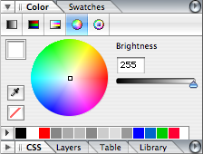
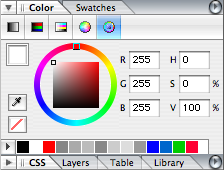

Shadowman is a registered trademark of Red Hat, Inc.. We don't know what stormy
thoughts he truly has of the other - "red sky at morning, sailors take
warning; red sky at night, sailors delight", perhaps.
centOS plugs itself as the
Community Enterprise OS, and intends to be and remain
binary compatible with... ummm, a Certain North American Software Company.
No relation at all to the Taiwanese company CENTOS which makes internal and Cardbus
peripherals. I didn't know you could get SATA support in pc-card form...
yummy!
The "penny" I've offered for these thoughts is drawn by Heather Stern
using the Gimp, based on a photo of a real penny, a monitor from the
NeXTstep family of icons, the text circle script-fu, beveling tricks, some
gradient and alphamasking tweaks, and the word portion of the centOS logo
stretched and mangled by Curve Bend (found under Filter/Distorts) with
some correction of its outer edges by the perspective tool.
My friend silentk online (Pete Savage) provided the photographs of
UK cloudscapes. If you have need for photos for open source projects, he has
been taking photos for a couple of years now and has a considerable collection.
He can be mailed at pete at progbox dot
co.uk to make requests.
Tux is drawn by Larry Ewing using the GIMP.
Heather is Linux Gazette's Technical Editor and The Answer Gang's Editor
Gal.
Heather got started in computing before she quite got started learning
English. By 8 she was a happy programmer, by 15 the system administrator
for the home... Dad had finally broken down and gotten one of those personal
computers, only to find it needed regular care and feeding like any other
pet. Except it wasn't a Pet: it was one of those brands we find most
everywhere today...
Heather is a hardware agnostic, but has spent more hours as a tech in
Windows related tech support than most people have spent with their computers.
(Got the pin, got the Jacket, got about a zillion T-shirts.) When she
discovered Linux in 1993, it wasn't long before the home systems ran Linux
regardless of what was in use at work.
By 1995 she was training others in using Linux - and in charge of all the
"strange systems" at a (then) 90 million dollar company. Moving onwards, it's
safe to say, Linux has been an excellent companion and breadwinner... She
took over the HTML editing for "The Answer Guy" in issue 28, and has been
slowly improving the preprocessing scripts she uses ever since.
This was going to be a piece about a nice juicy stumper in
netfilters. However, that's been solved after all (see the answer gang
column about that) and the Gang working overtime has nailed all the medium
sized questions. So, I'm forced to reveal a stumper of my own - any
readers are welcome to chime in. If you've got something for me, send mail to
TAG... if it
inspires an article of some sort, check out our author submission
guidelines and contact the articles@ staff. --Heather
My hardware is a nice Pentium Coppermine 550 I've had for ages.
The Tyan motherboard I have is not quite up to match it - the CPU used to
be part of a dual pair, but that motherboard failed and the twins were split
up. By not up to snuff, I mean that I have 1 Gig of memory in it, which
would suit the CPU fine, and it works, but the mb is only rated for 768Mb.
Still, on 2.4.x kernels it has always been sturdy; on 2.6.x it
was crashy and I'd always end up going back. I tried 2.6.5, 2.6.8, 2.6.10.
I also wanted to get a few simple objects all happy at the same
time:
sound - Ensoniq 5880, uses the es1371 drivers.
USB - I use a small wacom graphire II. Also occasionally a thumb drive.
I used to scare bugs out of USB all the time by having my stuff plugged into
the hub on my monitor, and turning my monitor off at night. I don't do that
anymore. It eats USB numbered nodes up quick, and my monitor (a big LCD)
seems to prefer to stay on anyway.
CD burning - I burn a lot of discs. If this can't behave without
making coasters, I don't care how new the kernel is.
Ext3 - obviously this should work. Before people go leaping that
$other_journal is better, my criteria is being able to see the fs no matter
which rescue disc or test disc I'm booting - and when it's shutdown clean
this acts like ext2. However I do lots of dev work and my disks haven't
been small for awhile now; tack on a journal and I'm not forced into a
lunch break as punishment for my coding follies.
my low end Radeon video card. RV100 QY according to lspci. A measly 64
Mb. It's not up to the snuff of my monitor either, but the price was right
when I was eager to enjoy my new glory. It prefers framebuffer, but in the
2.4 series it drives the radeonfb bonkers, so I get stuck in vesa. I'd
prefer some higher octane in my video gastank
I get heisencrashes. At times it will lock up for apparently no
reason. After my speedy reboot, no disk farts in the logs, no shuddering of
a webserver process, no clue to the heart attack. Shall I blame the CPU?
Ah, but if it were failing hardware wouldn't it get worse? Or the kernel's
changes have no particular effect? But the newer kernels send the
boogeyman away - almost for long enough for me to believe that whatever it
is, they nailed it. Hooray! I go on my merry way hacking insanely huge
graphics in Gimp, compiling kernels or X or whatever in background while
juggling chat windows and pondering an article for some future
issue.
Of course it'd be handy if I could provoke it. For awhile I
almost thought I could... it was more fragile after I discovereed ayttm,
webcam support for Yahoo. But there'd be days on end it did nothing even
when I played with that heavily, others, pow kerblooey out
it goes. One night it was late and I left it at its console prompt (I don't
startx unless I feel like it) and it hung overnight. I haven't crashed in
awhile (a few weeks I think) on my 2.6.11 kernel - but I *have* crashed this
way on it, and I wasn't doing coding at the time, so I can't take the blame
myself for that one. The truth is out there -- somewhere.
Now the techsupport type in me says "and, Heather, what sort of
Doesn't Work does it do? Glad you asked. I'm buzzing along
typing, clicking, getting some work done - or goofing off - and the
keyboard's not working. I think my mouse slipped... but moving the mouse
doesn't get any effect. clicking it does toggle my wacom pad's signalling
light - but the computer isn't dealing with the interrupt. hyperspace. Ah!
I hope, I'll just ssh in from the sparc or my laptop. Nope, net's dead too.
Magic SysRq? (not that this is any help if I was in X.) nope. dead as a
doornail.
I'm going to be adding a serial console soon - as soon as I find
table space for some more cords. More ideas, and especially any idea of
what to look for are quite welcome. -- Heather
Suggestions on building an initrd in Debian without devfs?
Suggestions that he doesn't need an initrd if he's building
his own kernel won't be looked at, we already have those for him
I suspect he means building it the debian way.
I am a very novice administrator, who has had a Spam Assassin box thrust
at me recently. My knowledge is very limited with regards to linux and
though I have been searching the web I have not been able to find out
how to release quarantined email.
Hmm. Not much information to go on. A SpamAssassin box, eh? I assume we're
talking about a standard box with a mail server and SpamAssassin?
Which mailserver are you using? The interface to SpamAssassin can vary
according to the mailserver in use. What does the part of the configuration
for SpamAssassin look like?
Even the Linux distribution could be a clue? Do you know if it was installed
from your distribution's package manager or built from source to a local
configuration? If it was installed from the package manager, what packages
were used? If it was built locally how was it configured?
I have found the mail, have even been able to discern the contents but
not been able to figure out how to get it from there back into the queue
for it to be delivered again.
Again not much information. The location you found it in could be a clue.
I assume that you're working from a command line and not a web interface?
If you have a moment and could point me in the right direction I would
very much appreciate it.
It's hard to give you much of a pointer without more clues.
Have you tried googling for SpamAssassin and quarantine? It throws up a lot,
but I don't have enough information to tell what might be relevant to you. It
could be narrowed down a lot by adding the name of your mailserver (e.g.
sendmail or exim).
I've CCed this to the Answer gang. Answer gang discussions can be published
in the Gazette, so let us know if that's a problem.
Read your issue for March 2005. Came across the lines
Nero, the popular Windows CD/DVD burning software, has recently been released
for Linux. NeroLinux is a closed source application, and is available free of
charge following registration on the Nero website.
A Full Version of Nero Software Version 6.3 or higher
Retail Version or Downloaded Version
Please note: This offer is not for OEM or demo version users.
As an OEM user you can upgrade for a special discount offer if you register
your product.
...............
May I suggest you come out with a clarification for your readers.
Thanks! We'll be happy to publish this in our Mailbag; hopefully, nobody will
get tripped up by the original statement.
According to the review I read in Linux Format yesterday, it isn't any
good either
Their verdict was to use K3B. (Or perhaps Gnome Toaster
-- NeroLinux's GUI is based on that, so there's little difference).
-- Jimmy
I would also like to take this opportunity to say thanks for a great magazine
which I have been enjoying for the last two years or so.
Thank you very much for reading Linux Gazette! It's always great to hear
from our loyal readers and have them tell us how LG helps them.
I came across your magazine with the debian CD's ( Woody and subsequently Sarge
). Your magazine collections have kept me company ( Along with all the
Documentation available in Sarge ) while my ship has traversed most of the
oceans ( Atlantic North and South, Indian Ocean, the south China Seas,
Mediteranean and European waters).
Thank you all very much.
You're welcome - and we're glad to hear from you (the nature of
publishing is such that you hear more complaints than praise;
unsurprisingly, people are more ready to react to bad than good.) Thanks
for letting us know!
Capt Jasbir Singh Dhillon
[Heather]
You and our Editor in Chief would surely get along grandly -
he's sailed a bit widely, but I'm not sure he's gotten to every
ocean yet...
I've sailed some of those waters myself - the North Atlantic, as well as
a bit of the Pacific - and look forward to sailing the rest. Maybe
we'll even run across each other someday. Meanwhile, enjoy LG - and feel
free to let us know if you see any opportunities for improvement (this,
of course, applies to all of our readers.)
Fair winds and following seas - Ben Okopnik
Re: The article "Staying Connected" in issue 115 of the LG
When I read about your shell script called "google" I thought
that you might be interested in a program called surfraw
(http://surfraw.sourceforge.net). Surfraw does what your google
script does and it also does it for many different search
engines and types of search engines too.
Thanks, Grurp; I'm familiar with "surfraw", mainly through installing it
and then finding out that 'google' suddenly worked differently.
I
prefer my own version, since I've got my fingers 'trained' for it - I
don't have to think about how I use it, it "just happens".
However, our readers might appreciate hearing about it, so I'll CC this
to TAG.
I enjoyed reading your shell script tutorial - it's always good to remind
oneself of the basics.
I did however find one slight error - at least I think so. I've attached two
possible patches for it, I can't tell which of them (if either) is
correct...
[laugh] I guess I should just be glad that I didn't say "grab a seat,
this may take a while..."
Thanks, Ville; glad you're enjoying the articles.
-- Ben
Well, I guess that would require a 'while' loop, and perhaps an 'if' clause
since it says "it may take a while". But then I have no idea what the
'if' condition should be, and when (if ever) to terminate the 'while' loop...
I thought it'd just let you all know
that I am going to be without Internet access for at least a month.
Yow - poor Thomas. I don't know how you're going to survive, poor lad...
we'll have to snail-mail you some SSH modulus strings, or maybe the
contents of /dev/random, to keep you from falling apart completely. -- Ben
After that, I might have some, but it will be very intermittent, to not
at all, at best. Perhaps in October I will have something more
stable... I can't say.
We'll miss you! -- Ben
So it means my time working on LG is going to have to take a break for a
while. Obviously I'll do what I can as and when I get Internet access.
Thank you, all.
-- Thomas Adam
We'll try to keep the good ship LG afloat.
Thanks for all your hard work - much of it may be behind the scenes, but
I'm certainly cognizant of it. Have a great time playing in The Big
Room, and we'll see you when you get back. -- Ben
[Mike Orr] Farewell Thomas, we'll see you in the fall. Are you taking a walking tour about England?
Nothing quite as luxurious, alas. It's the end of the academic year
-- so the summer, although I am also having to move house for my final
academic year, which starts in October. Due to the logistics of things,
that's the earliest time that I can see myself being able to get
internet access.
Whilst I am at my parents though, they're by the coast --
Ah. The perils of student life
Have a good summer. -- Jimmy
Have a safe, wonderful summer, Thomas.
I look forward to seeing you in the fall.
-- Heather
This page edited and maintained by the Editors of Linux Gazette HTML script maintained by Heather Stern of Starshine Technical Services, http://www.starshine.org/
The Answer Gang
Linux Gazette 116: The Answer Gang (TWDT)The Answer Gang 116:
...making Linux just a little more fun!
The Answer Gang By Jim Dennis, Jason Creighton, Chris G, Karl-Heinz, and...
(meet the Gang) ...
the Editors of Linux Gazette...
and
You!
We have guidelines for asking and answering questions. Linux questions only, please.
We make no guarantees about answers, but you can be anonymous on request. See also: The Answer Gang's
Knowledge Base
and the LGSearch Engine
Greetings, everyone, and welcome back to the world of The Answer Gang.
When last you left the party, I was worried that we weren't seeing enough
good questions - and their answers. I'm pleased to say that things are looking up... even if it is my arms that are loaded up with this big armful. Thank you everyone, for writing - keep 'em pouring in... the fact is, while Real Life was busy waylaying me, the Gang's been going like, ummmmm, gangbusters.
So feel free to Ask The Gang anything linux-y you'd like.
#include really_cool_notes_about_CSS.h
Hmm. Those are about half done, since I didn't know if I wanted to make
them a blurb for you people or continue fleshing it out into a more
serious article. I didn't realize we had a history lesson on
soundcards going on over in the TAG lounge... all my coffee's gone and this thing still isn't pubbed - time to give it to you gentle readers already! Enjoy!
Open Solaris
From Jimmy O'Regan
Answered By: Ben Okopnik, Rick Moen, ILUG member Niall Walsh, Thomas Adam, Raj Shekhar, Heather Stern
Not Linux, but important because we'll probably be using some of this
software in a few weeks/months time: the source code of Open Solaris has
been released (http://www.opensolaris.org/os).
[Thomas]
Woooo.
Sun aren't finished releasing code,
That was June 15, keep an eye on their site as things fill in though.
-- Heather
but this release has most of the
kernel and userland tools. (No Thomas, nothing CDE related,
[Ben]
I'm teaching a Sun class right now, and the response from my students
was uniformly sceptical: "They're just trying to stay in the game." I'm
just going to note that Apple has been playing exactly the same game -
kinda-sorta release some-but-not-all of the source, maybe - and it
hasn't done very much for them.
Heh. Their FAQ has a nod to Apple:
...............
Do I need to register the OpenSolaris source code I have downloaded from
the site?
No. There is no registration. There is no click-to-accept license. Enjoy!
...............
Sun look to be more sincere about what they're doing than Apple--they're
using a licence that's already accepted (the CDDL is just the MPL
rebranded),
[Rick]
And improved, in my view. You may already have seen my related post to
the Irish Linux User Group mailing list,
Alas, no. Too many bounces in my last great disconnect, and my current
connection isn't reliable enough to justify resubscribing.
[Rick]
but here it is:
Quoting Niall Walsh (linux (at) esatclear.ie):
From there how long from there until we have a Debian GNU/OpenSolaris?
Or is CDDL even DFSG Free (the patenting clauses anyway makes me
wonder)?
[]
CDDL does strike me as being every bit as DFSG as its MPL predecessor.[1]
From what I remember of the debian-legal discussion, the gist of it was
"the licence may or may not be free, depending on how the licensor chooses
to act".
[Rick]
Ah, debian-legal. {sigh} A fellow on ILUG raised that, too, and my
response on that is further below...
[Rick]
However, of course, the OpenSolaris codebase apparently (as everyone
suspected) includes quite a lot of binary-only, proprietary "secret sauce"
components.[2] How useful the CDDL (and other open source / free-software)
portions would be without them is an open question. My own expectation
would be "Not very; probably even substantially less than the
corresponding case with Apple Darwin."
The only thing I remember seeing mentioned specifically is drivers, which
is understandable--too many NDAs. IIRC, Sun has a compiler that recompiles
Linux drivers for Solaris--device support isn't one of great plusses of
Solaris that Sun have been cheerleading in any of the blog entries I've
seen (DTrace this, DTrace that :)
[Rick]
Of course whether it's worth it or not is another matter. I
guess both will be projects like rebuilding a Freely redistributable
Suse/Novell Professional image, a test of just how many people care.
[]
I think the latter would be a great deal easier -- and more useful.
One of the big things in Open Solaris is that services can start in
parallel at boot time. Finito (http://web.isteve.bofh.cz/finito) does
something similar for Linux.
Heh. I think there will be a lot of public contributions to the code, if
only to clean it up. I never really understood why so much research goes
into code comprehension (well, aside from the fact that C lecturers write
some of the worst C around): open source projects need to have code that's
as clear as possible, otherwise noone can contribute. Heck, even Wine,
which (of necessity) has some of the most cryptic code I've ever seen
(self-modifying blobs of x86 binary code, C emulations of C++ exceptions
and classes, etc), is a model of clarity, as far as it can be.
Not so Open Solaris. Their tar implementation is one 182k .c file; their
nroff implementation uses the original Unix naming convention for files
(n1.c etc). I'm sure they'll get plenty of clean-up patches from people
cringing on Sun's behalf :)
[Rick]
[1] Sun Microsystems solicited my feedback on the licence before its
publc release. Unfortunately, I did not have sufficient time in to help
them during the very short comment period available -- but my impression
of the licence is overwhelmingly favourable.
instead of writing their own just barely open source by just
enough people's definition, but oh-so obnoxious licence for the purpose
(I suppose they've already done that enough times), and have put all the
released code in CVS from the start.
[Ben]
I didn't have much time to really look into this yesterday (but I did
get some really good coding done, and had the very satisfying experience
of solving a thorny problem that's been bugging me for a couple of
years!); today is a new day, and I'm wasting^Wspending my morning
checking out the buzz on this. Fascinating - it looks and smells real.
In fact, reading Tim Bray's blog and the link tree that branches out
from it - thanks, Raj! - I'm slowly growing convinced that Sun has
finally clued in, bought the stock, drank the Koolaid. All I can say, in
stunned admiration, is "Bravo" - I had not expected it, and was actually
rather cynical about it, having built my expectations based on what I
saw from my little corner of the Sun culture. It seems I was wrong.
The interesting bit about this is that the Solaris kernel has been a
strictly "hands-off" affair since time immemorial; you could tweak some
user-space settings to influence its operation in some mild ways, but
that was about all (and learning to do even that required a three-day
class and using ADB [shudder].) As well, some of the operational
algorithms - e.g., the exact process of deciding how to accept/reject
TCP connections - were generally hinted at but the details were
intentionally shrouded in mystery (security through obscurity, even
though Sun showed itself to be totally aware, in other places, that this
is not a useful approach.)
There's also the fact - and I'm not snarking at Sun in the least, but
applauding their moving with the times - that Solaris installations are
growing far fewer percentage-wise; this latest change may just be a
simple recognition of fact and adaptation to it. I've spoken to many
people in the large corporate culture, in many places and many different
companies, and have heard the story/complaint/simple fact repeated many
times: "so this new guy comes into IT, and before anybody knows it, he's
got 30 Linux boxes up in one day..." Cost of software: zero. Cost of
machines: hauled out of a closet where it was stored due to being old
and unusable. That's a hard combination for a commercial machine+OS to
beat, stony hard - and companies that _aren't_ having to spend a million
bucks a year on buying new are starting to notice. Many of them -
including banks, the traditional stronghold of conservatism - are
quietly dropping their "no non-commercial OSes" policy.
[Heather] I've done my share of dragging old Sparc hardware out of the closet too.
It runs a mite warm - and seemed happier on Debian/sparc than I'd hope
to put a modern Solaris on it - on the other hand, that SparcStation 10
was actually a hot commodity in a netlounge serving a few dozen people
at a time.
[Ben]
Sun is an excellent hardware company; the cost of their gadgets is
quite high as compared to the commodity PC, but the quality and the
reliability that you get from the stuff can be absolutely stunning to
someone who's never experienced them. I've never had Sun stuff "fight"
me the way, e.g., a PC SCSI card has; the documentations was always
available, and the relevant setup was as obvious as it could be made and
robust. Solaris, seen in that light, has always been a house divided
against itself - and Sun appears to have finally resolved the ambiguity.
Bravo; bravo indeed. The Open Source world has grown - and it's quite
the growth spurt. Not that we needed validation, but this is an
unlooked-for bit of big-leagues legitimacy that does not hurt at all.
Checking the debian legal lists it seems it may be DFSG compliant...
[]
In a better world, it would be possible to consult debian-legal (or
the various related "summary" Web pages) to reliably determine whether a
licence is DFSG-compliant. That fictional alternate debian-legal
wouldn't be populated by context-challenged monomaniacs woefully
ignorant of applicable law.
Ah well.
Suffice it to say that I draw a distinction between the concepts of
"DFSG compliant" and "approved by certain net.random wankers posting to
a rather painful-to-read public mailing list".
[Ben]
[laugh] A critical distinction in the world of Open Source, and one that
needs to be drawn far, far more often than it actually is.
[]
The "patents" comments are tautologically true -- but would be so
regardless of licence. That is, any codebase adversely encumbered
by patents is non-free/proprietary, irrespective of what licence
provisions would otherwise apply.
That other bit about fixed attributions making a work
non-free/proprietary is one reason why, although I'm a long-time
subscriber to debian-legal, I only rarely read it, in order to safeguard
my blood pressure: Author attributions may not be stripped in
derivative works by default action of copyright law , so it is utter
lunacy to assert, as poster Garrett and numerous others do, that clauses
to that same effect make the work non-free through it "failing the
Chinese Dissident Test".
That is a perfect example of the aforementioned problem of certain
posters being context-challenged and ignorant of the law.
You must include a notice in each of Your Modifications that
identifies You as the Contributor of the Modification."
So that the theoretical dissident programmer could distribute a
modification without having to admit to ownership.
[]
That licence requirement could be met by "Module foo.c was contributed
2005-06-14 by Anon Y. Mouse of the Fugitive Coders Group". The cited
clause's intent is not to require the equivalent of biometrics and a
mugshot from any contributor, but rather to distinguish cleanly between
original code and subsequent contributions.
And that is an example of what I mean by "context-challenged". ;->
Licences are not code for a Turing machine: They're designed to be
interpreted by judges, who (being modestly optimistic, for a moment)
have brains and are supposed to apply them to such things.
Yeah. I remember seeing similar assertions and having a definite pain in
the forehead after reading them.
[Rick]
[Proprietary carve-outs in OpenSolaris:]
The only thing I remember seeing mentioned specifically is drivers, which
is understandable--too many NDAs.
[]
Quite. Third-party rights. I remember seeing some other things, too,
but cannot remember specifics.
I don't mean to derogate the benefits to some of Sun's move -- just to
remind people that OpenSolaris's carve-outs mean it's doomed to be
crippled as an open-source operating system, e.g., for purposes of porting
performed by anyone but Sun themselves.
[Ben]
I tend to take an optimistic view of these things that look like naivete
from a certain perspective - any move in the direction of Open Source by
the historically-proprietary software companies is good for us. One of
the many underlying reasons for that is what I like to call "time in
grade": the longer these people spend using Open Source methods - to
whatever degree - the more these get embedded in their culture and the
environment around them. After a while, they're impossible to eradicate.
As for "the abyss looking back at you", I rely on the GPL and its ilk to
keep the resulting influence on the world of Open Source to a tolerable
minimum.
(Yes, the sum total of all the influences and issues here is far more
complex than this. However, abstracting this bit and staring at it for a
while contains its own lessons, and they're interesting ones.)
Well, though Sun want to hype up the release by saying "Solaris is open
source now", their own roadmap says otherwise.
Another tried his hand at predicting the future of system speeds. "As of
this writing (1996) a clock rate of more than about 10 kHz seems utterly
ridiculous, although this observation will no doubt seem quaintly
amusing one day," he wrote.
Religion was a common theme in the code. "Oops, did not find this
signature, so we must advance on the next signature in the SUA and hope
to God that it is in the susp format, or we get hosed," said one developer.
"God help us all if someone changes how lex works," wrote another. "Oh
God, what an ugly pile of architecture," moaned a third.
...............
Booting a "Live CD" image without a CD
From Ben Okopnik
Answered By: Kapil Hari Paranjape, Robos, John Karns, and a very useful webpage by
Matthias Müller
Hi, all -
Got a curious Linux problem here that I'm trying to puzzle out, and
after struggling with it for a bit, I remembered that I'd heard of this
thing called The Answer Gang... :)
I'm trying to boot Linux on my fiancee's laptop, a Sony VAIO F590K -
something that she'd be quite happy to see, since her opinion is that
Micr0s0ft should have stopped when the going was good - i.e., DOS5.0
Simple, right? Uh, well... the only problem is that it's got a dead
CD-ROM drive. She's going to order a new one soon, but until then...
The VAIO doesn't support booting from USB. However, I've managed to load
Puppy Linux onto a 1GB USB FlashDrive and burn the appropriate disk image
(provided by Puppy) to a floppy - it's an ingenious system (the floppy
boots FreeDOS, which searches for and boots the FlashDrive) that could
probably be easily adapted to boot other distros... if I only understood
exactly what to tweak and how.
I'm afraid that I've met my match (at
least for the moment) in trying to understand the whole shebang.
I've looked at many LiveCD distros in the past few days. A number of
them can be run from USB - but require that the machine boot from the
USB, not an option here. I've even carefully studied the "Booting
Knoppix from USB" HOWTO, which assumes the same thing, to see if I could
somehow mingle Puppy's floppy boot and Knoppix on a USB stick... no
luck.
[Kapil]
Use Knoppix boot.img on a floppy and copy the KNOPPIX directory to the
USB stick. This should work provided the kernel+initrd on the boot.img
supports USB---I think it does but there may be a kernel boot option.
The Knoppix boot mechanism is:
Recognise possible hardware where the KNOPPIX hardware may reside.
Look on all block devices for the KNOPPIX directory and under it the
Transfer control to the cloop stuff. The remaining hardware detection
I think puppy uses Xorg and also possibly the vesa driver only. You may
have better luck with Knoppix.
Oh, and PXE booting is out as well: the F590K does support network
booting... however, PXE does not (yet) speak PCMCIA.
So, given all of the above - what do you folks think? Have any of you
had experience in booting something like this, or do you have any ideas
that I've perhaps missed?
Argh. So much for writing email while talking on the phone and being
derailed in the midst of it all by questions about tea selection (from a
large number of options, I might add - Kat and I are both heavily into
tea. I think I'll try her kelp tea this time... or maybe the
hibiscus...)
Puppy failed to recognize the video hardware in the VAIO. Key factor
I neglected to mention.
Ben tries Kapil's knoppix solution, but...
-- Heather
Ooops. Seems like Knoppix stopped using "boot.img" at v3.4 (I've got
3.7) - they use "isolinux" these days. There seems to be a bit of
discussion on the Net that mentions using the "boot.img" from the v3.3
CDs - I've seen reports that it Just Works - but I don't have one
available, and won't be able to download 3.3 until I get to a high-speed
connection. Would anyone here happen to have such a thing handy?
If someone happens to have a Knoppix 3.3 image, let me save you a bit of
time (obviously, you'll have to change the ISO image name to whatever it
actually is, and "/mountpoint" to some existing directory that you don't
mind using as a mountpoint for a few seconds.)
# Mount the image
mount KNOPPIX_V3.4.iso /mountpoint -o loop
# Flip the image to me
mutt -s "boot image" -a /mountpoint/KNOPPIX/boot.img ben@linuxgazette.net
# You're done!
umount /mountpoint
I knew there had to be a reason I kept that old thing around. Actually,
at first it was paranoia, but then I realized that Klaus Knopper's push
to support the bleeding edge hardware from his pocket disc was giving
plainer PCs headaches. So now I try to keep the spare older versions
too. For the record the image linked above is from Knoppix 3.3,
2004-02-16, english edition, with an md5sum of
a761779c73e01185585e879c800ddede.
-- Heather
(re hardware detection) Man, this sounds very cool. I'll be very happy
if it works...
I'll definitely report the results as soon as I've had a chance to try
it out. For now, it's after midnight, and I'm off to bed.
Didier Heyden actually got Ben his diskette... and sent its md5sum with
it, just to be sure.
-- Heather
[laugh] I should have asked that people respond on the list first; I've
had at least three people send me the images, and at ~2MB apiece, my
poor little cellphone connection is groaning. Thanks, all who responded.
[Didier]
Let us know how it goes!
Not too wonderful.
The floppy boots the Knoppix miniroot, scans a
bunch of devices in /dev, and says
Can't find KNOPPIX filesystem, sorry.
Dropping you to a (very limited) shell.
Press reset button to quit.
However, examining /modules on that miniroot image gives me a clue: it's
full of SCSI modules but no USB modules. I'll "unwrap" that image
file, yank the miniroot out of it, mount that, and see about replacing
the SCSI modules with the USB ones; hopefully, Knoppix will be able to
recognize the USB FlashDrive as a result. The only thing I wonder about
is if the scanned devices in /dev need to be specified somewhere... I'll
look in the various .cfg files to make sure.
This does sound quite promising. Thanks for the hints and the help,
everyone - I'll report more as I know more!
I have now "rebuilt" boot.img - a very interesting and educational
process, actually (in fact, I've hacked a script that I found on the Net
to do it all for me, since I had to do it repeatedly.) However, I have
left the USB pendrive with my fiancee for the week - she's in New York
while I'm teaching a class in San Francisco; I have no floppy drive on
my machine, and thus no way to experiment with it until I get back.
Thank you, everyone, and Kapil in particular for your help with this -
I'm beginning to feel like I actually understand that booting process
(as contrasted against the "standard" one.) Again, I'll report the
results as soon as I have some - that will be sometime after this
weekend.
[Robos]
Well, if you only want to show her the livecd, how about you use and emulator?
Lately I've been using qemu a lot and it works like hell! Fabrice Bellard is
really a god. Ah, and if she has winblows on that machine, how about this
link:
Ah. BitTorrent, I'd guess - which I know almost nothing about.
[Robos]
Short intro into bittorrent: data is packed into small chunks. You download
a chunk on your machine and the next user that wants also this chunk
downloads it from your machine, thus relieving the main server of the high
load since the load is spread over all downloading (and uploading) clients.
The download doesn't have to be sequential, packets come in from different
downloading and uploading parties. Even after you got everything your
machine keeps uploading for others - this is one thing to watch out for.
Presumably, this would download a Knoppix ISO onto her machine? That's
not a problem; our laptops are Ethernetted together. Although it's good
to see that 3.8 is out (<clickety-click><download>...)
As we go to press I have a Knoppix 3.9 DVD here. Mind you, a lot of
machines for "just trying out" might not have a DVD drive to boot from.
Time marches on :)
-- Heather
Hey, it's got exactly the same message as I was getting!
[Robos]
and the folks that made the .bat file made some errors IMHO: -m should be
more in the range of 128 (smaller than what shm has, whatever that means on
winblows) and I think the error message in the pic also came from an error
of theirs but hey, it's close.
Well, I guess (haven't looked at this again) that the japanese knoppix
developers that made this image made some config error somewhere. I mean,
you essentially have the knoppix image, it's only still on the cd... And you
have qemu. On linux this works then like this:
qemu -cdrom=/dev/cdrom -boot d
and there you go. Where is the device under win? That's the problem there.
You did notice that I ran the knoppix in an emulated win session? :)
BTW: qemu with kqemu (the kernel module he has now on linux) gives really a
speedup to ~70% native cpu speed. Awesome (that's why win4lin pro uses qemu
underneath)
Helps?
Cheers
Robos
I'm not sure - but I'll be back in NYC this Saturday, and will have time
to play with computer stuff a few days later, after we get back to St.
Augustine. But I'll give it a shot if the current pre-programmed
solution (the modified Knoppix boot floppy, the preparation of which was
so superbly aided by Kapil's suggestions) doesn't work. If it does
work, I've built a great script that automates the somewhat painful
process of creating it, and I'll definitely publish it as well.
Bellard was born in 1972 in Grenoble, France. He went to school in Joffre
(Montpellier), where he already created a widely known program, the
executable compressor LZEXE.
...............
Ahh, that's it. He must have been all of 17 or 18 years old when he wrote
that, as I remember it from 1989 or '90. I think he sold the idea to Phil
Katz who incorporated it into his product. It was an algorithm that would
uncompress a DOS executable, transparent to DOS, after being loaded by the
program loader, before being executed. Handy for saving space in the days
of 40 MB disk drives.
and look at his projects - you can't be anything but
impressed to the max. Winner of obfuscated c contest and such. Also take a
look at his "old projects page". Such people are inpiring to me.
Answered By: Thomas Adam,
Heather Stern,
Jay R. Ashworth,
Kapil Hari Paranjape
I compiled playmidi-2.5 from source code, using a version of linux
(Basiclinux 3.3) based on Slackware 4.0 (libc5) with the Slackware 7.1
kernel and modules (kernel 2.2.16) because the source code would not work
with glibc2. A version I downloaded from somewhere for Slackware 7.1
(2.4.9) told me 'No playback device found'. I have no midi device other
than sound card and speakers so I typed playmidi -f for FM synthesis
because -e for external midi device is default. 'No playback device
found' either way.
I am using OSS sound, sb.o, Vibra16 AWE32 card which works perfectly in
DOS and has two 4MB 30-pin SIMMs. My DOS players appear to load sound
libraries automatically.
To compile without X or GTK or svgalib I commented out the lines in the
Makefile referring to splaymidi, xplaymidi, etc. because there was no
--without-X type option in the configuration program. I configured to use
SB AWE32 as the default device. I installed the developers' ncurses
package when it complained about not finding the right ncurses files. It
appeared to compile.
I am using the bare.i (basic) Slackware kernel, or a kernel which I
compiled for sound myself, and have inserted:
I can play wav files with sox and mp3 files with mplayer.
I also typed mknod /dev/sequencer b 14 1 and mknod /dev/midi b 14 2
(my distribution came without sound devices and I previously made dsp
audio mixer and sndstat to play wav and mp3 files with).
I tried to use playmidi in Basiclinux 3.3 where I compiled it dynamically
(it needs libc5 and libncurses, both there) and if I typed playmidi -f
(for FM synthesis) test.mid 'No playback device found'. Without the '-f',
using the default AWE32 which I compiled for, I presume, it gives me a
message about AWE32 and the author and looks like it should be playing but
there is no sound.
I put the FM synthesis all the way up with aumix.
What am I missing? The Makefile is attached.
My package (including the libncurses dependency) is at:
Pnpdump(8) comments the file rather well, so you can definitely try it
and see.
I was told I also needed to edit the resulting file.
[Thomas]
Maybe. Maybe not. pnpdump is intelligent in its detection, and will
often leave reasonable defaults uncommented. But yes, do obviously look
at it before hand.
Do I really need
to do this if I can figure out the settings by trial and error, or from
what worked for other people? I can tell which IRQ and DMA the sound card
is using when I boot (or with a diagnostic program).
[Thomas]
Which diagnostic program is this? They're not that reliable. Have a
look at using 'modinfo' on the module,
hwinfo seems to be reliable (DOS shareware, Slovak) for irq and dma
[Thomas]
As is the Linux equivalent.
Since I boot into linux with loadlin from DOS, the DOS version works best
for me.
[Thomas]
That doesn't account for accuracy, of course.
SB16 has so far identified settings perfectly - if they work in DOS, they
work in Linux. Except for one time when DOS needed IRQ2 and linux needed
IRQ9.
[Heather] Otherwise known as the "cascade interrupt" - irq 2 is irq 9, the
manufacturers used that trick to extend the original bank of interrupts.
Someone must have thought we'd never need 8 devices at once the way we'd
never need 640k for one program to abuse...
So is the DOS SB16 diagnose program - if I use the same irq and dma and
mpu_io for linux it always works (with insmod sb).
[Thomas]
You ought to be using 'modprobe' (insmod only loads the device you tell
it to -- modprobe loads dependant devices on it). As for DOS diagnoses
programs, they're iffy at best -- and not always is it the case that
IRQs are transferrable.
The first question I ever had for TAG concerned where to find modprobe so
I could modprobe mdacon. Our linux has only insmod. I was told there is
a list of module dependencies somewhere, and I figure it out either by
doing web research, or looking at the error messages and guessing which
modules will fix them (similarly named to parts of the messages).
[Thomas]
I don't recall this question. Mind you, if modprobe is being
distributed separately from insmod, and modinfo, then that's in grave
error, IMO.
It was two years ago. I wanted to use a 2-floppy disk linux with TTL and
VGA monitors. The discussion veered off into suid and other things that I
had never heard of in my two weeks of linux experience.
[Thomas]
Welcome to TAG. "The answers themselves may range from friendly to
gruff and often contain sharp humor, horseplay, fluff, pedantry, and
pontification; the discussion spawned by your question may well wander
off-topic and possibly back on again - with all of this reflected in
your mailbox. Thin-skinned folks, those who expect "their answer" and
nothing else, and narrow-minded people are urged to take the appropriate
precautions. (Yellow helmets and fire- and bullet-proof underwear are
available in the shop just off the main lobby.)"
Syschk is hopeless - it told me 6 IRQs were free when only one really
was.
[Thomas]
as some allow for options to be passed to them:
io=..., irq=...
The sound cards (at least for mad16 and sb) let you specify settings, as
do ISA ethernet cards.
[Thomas]
OK.
For one sound card
(an opti) I needed two settings pertaining to midi (mpu_io and mpu_irq).
Is there some way to figure them out without isapnptools?
Is opl needed for awe32 or just for FM synthesis? He also said my FM
synthesis is broken - will awe32 work without it? I have four awe32
cards, which I think are all plugnplay.
[Thomas]
Yes, it will. FM Synthesis is optional.
My Makefile was created by removing the parts of the standard Makefile
that I thought were irrelevant. I probably removed too many pieces
[Thomas]
More than likely -- when you embark on this, start from the centre (the
'install' directive, and work outwards.)
Thanks. The precompiled package I found for playmidi does not seem to
support AWE so I attempted my own. I was unable to compile the source
code with glibc2 (I got an error message about GLIBC2 and atexit) but it
worked with libc5.
[Thomas]
atexit and glibc2 (that is libc6) is a classic case of "oops, this
version of glibc is not going to work. libc5 is fine and will coexist
with libc6 just happily. I have a number of motif apps that are
dependent in this way.
I put libc5 and libm and ld-linux on my glibc linux, and glibc2 on my
libc5 linux, to provide a wider choice of programs.
[Thomas]
You can just say "libc5" here, as I know what it contains.
Some things (like
Opera) don't come in source code so you are stuck with their choice of
library, meaning I also had to upgrade glibc2. The problems occur when
they have dependencies other than libc (libpng, for instance) and you have
to specify to use the libc5 not the libc6 version when you have both of
them. I have a little script for that.
[Thomas]
This is not good, as you will get stuck at some point. Libc5 is not
going to handle newer versions very well, and there will be a point when
it will fail.
I have been using libc5 mainly just to run programs that I don't have
working with libc6, such as this playmidi, and also a few other things
that our basiclinux list members have compiled for libc5, or specifically
for the setup we have which uses it (files are in sort of odd places) such
as Abiword. I can chroot between the two linuxes to wordprocess but
playmidi ought to work in both since I added libc5.
It is old source code, but I thought that problems
arose only when you tried to compile newer source code with an older libc,
not vice versa.
[Thomas]
Not always.
I will check with modinfo as to whether I can specify settings for opl
which are the same as for sb. I will have to install modinfo first - our
linux has only the essentials (the kernel did not even support sound).
[Thomas]
Interesting, as modinfo is part and parcel of insmod and modprobe and
the like. An omission of it is surprising...
Our 'basiclinux' started as a 2MB download, with just insmod. We have
busybox versions of many things which don't always work as required, and
have to install the full versions. I just pick out a file or two from a
package, to keep things small. We also have Xvesa (about 1MB) instead of
a larger X. Sometimes these busybox versions are what keeps things from
compiling. Playmidi may not have liked my minimal X, which is why I
removed it from Makefile.
[Thomas]
I'd say. This "picking and choosing" process is... an interesting idea,
but perhaps a bit too thorough for some things.
Yes, the author of our linux thinks I am crazy too, but I prefer to just
install the things I am actually using. If they have dependencies, I have
to install those too, and make symlinks, but I learn a lot that way.
Sometimes I install the whole package and then delete most of it, for
instance SANE supported many scanners and I deleted all but HP, along with
networking stuff.
The neighbor suggested it but I don't know enough about compiling.
Playmidi was one of my bolder adventures (modifying the Makefile
manually).
[Thomas]
There's an "instruction" manual weighing in at 300tonnes.
Can I delete most of it after compiling? It would take me a few years to
download.
I could add some package to get modprobe and modinfo but it is more fun
figuring these things out on my own.
[Thomas]
I'd go with the quickest option -- it's something you need, and not
something you can fool around on a whim as and when you come across it.
I would rather understand things than be quick.
[Thomas]
I know nothing about this distro -- but a distro as minimalistic as that
which gives one the option of not having modprobe as "standard" is
fundamentally flawed.
He was trying to fit into 2 floppy disks. We can add any Slackware 7.1
packages we like after installing to hard drive, but he suggested the most
basic ones. I also deleted 1MB of locale files in the first 11MB
installed to HD.
[Thomas]
Why the brutual stripping? Surely your hardware can't be that
antiquated? Or is this just for fun?
Why would I want 1MB of locale files? It just takes longer to find things
I do want on there and I don't speak Korean. Or 50 copies of LICENSE or
COPYING or TODO? I like to only keep things on the computer that I know
I am using.
[Heather] You'll be pleased to know that Debian policy points at only one copy of
the standard licenses, with a notation in /usr/share/docs that's much
shorter, or a whole license if an app is special. Also it's easy to set
up your incoming sources so you don't use the contribs and non-free,
thus avoiding the more curious and/or onerous license types.
Several of us put together a little script to convert man pages to html
and display with a browser, but lynx does not display some characters as
intended.
[Heather] Lynx also makes a fine pager over plaintext files, if you don't mind
also giving up boldness. If you set your TERM=dumb and then use man to
dump your pages (redirected out to a file of course) then the formatting
is stripped very quickly without resort to scripting tricks and missed
characters. We did this for LNX-BBC... and then found that many man
pages were superceded by the --help the programs had buried in them.
Scalpel time
<IMG SRC="../gx/dennis/smily.gif" ALT=":)"
height="24" width="20" align="middle">
I do find myself wondering if you'd enjoy trying an LNX BBC for
your baseline though. Everything was from scratch at the time and are
libc6 binaries.
It saves 8MB of groff and man programs. We have Xvesa with
only the fonts and files needed to run it in an rxvt (all this in a linux
that fits on 2 floppy disks), but Xvesa has a few problems. If we run
into problems we install larger versions or additional files. There was
no sound or scsi support so I learned to compile my own kernel, and
removed support for some things I don't use, to keep it small (around
450K), such as firewall and samba. I included awe support in the kernel.
What would I have learned if I just used a standard distribution and
kernel?
Our star compiler put together a static (libc5 or libc6) mplayer (7MB
executable) but it won't play midis. We can run linux on a 486 with 16MB
RAM and 100MB hard drive if we don't need to compile or use Mozilla.
Yes, SuSE is one of the more reasonable distributions, in fact the only
other one besides slackware that worked on our 486s. But it still
installed itself to run processes at regular intervals, and took much
longer to boot because it assumed you had new hardware and went looking
for it. Our little linux boots in 14 seconds on a 486.
[Heather] Now I know you didn't try debian; I had 386 and 486 hardware running on
it fine. Though admittedly I haven't tried to install Sarge. However,
every installer based system has a kernel that goes looking for the
kitchen sink - it can't know what your hardware is until it looks. So
the first "high tech" thing people do at installfests is build their own
kernel to get that zip. Though it matters a lot less if you're not
going to reboot your machine constantly, about shaving a minute off of
your boot time. Linux is more suited for being always-on.
I went looking for awesfx, which is a set of utilities also containing
sfxload. I found the author's site, with his comment that he had
switched from bz2 to gz because of download problems, but the source
code was bz2 and the download was corrupted. I found the binary package
at linuxpackages.net - for SW10. I found nothing of the sort for SW7.1 or
SW8.1. Any ideas where to look? I don't want to upgrade to the SW10.0
glibc.
[Thomas]
No idea, sorry. I'd only be doing the same thing you are, via google.
I learned that SB Live also accepts sound fonts (soundbanks) but they seem
to be different ones from SB16 AWE32. And that SB AWE64 still does not
work in DOS (or probably therefore in linux) because awe will still not
initialize even after the card starts working with standard settings.
[Thomas]
It is a very old card...
The awe64 is the newest card that I am using. I have mostly 1992-1995
SB16s with jumpers. They sound nice. Most of them have four jacks (line
and speaker are separate) and a couple have volume dials.
[Thomas]
I'm well known for having and running antiquated hardware. I also know
when to give up and concede that there are some things just not worth
the headache. That said, you still have some outstanding issues to try
-- and I'd probably push with the pnpdump(8) idea.
I first need to get hold of uncorrupted source code for the sound bank
loader and see if the DOS initialization was adequate. I wrote the
author. He may have posted the .tar.gz package at Creative's opensource
site, which always times out.
I might give up on four Opti 929A/Crystal cards, but SB is under control
and our 'distribution' even has a package for it.
I am
considering PCI mainly because we are running out of ISA slots - MGA card,
modem, sound card, ethernet card. Only the sound cards seem to be pnp.
I also learned that I can set my ISA SB16s to use standard settings by
disabling USB in CMOS, running SB16 diagnose in DOS (which no longer
complains that IRQ5 and DMA0 and DMA1 are taken), then reenabling USB (on
one computer - on the other I have to leave it disabled or the conflict
comes back). Would a PCI sound card avoid this problem?
[Thomas]
Anything this side of the late renaissance
(for which, alas, your poor SB16 card does not) would, yes.
What sort of sound cards did they use in harpsichords?
Someone just gave me a 'Live'.
I may write the author of awesfx to ask where to get a .gz version of
source code.
[Thomas]
Remind me again why bzip2 is not preferrable? If it helps, I can always
convert it to .gz for you and shove it on my webserver.
The download gets corrupted. I even tried downloading to a local bbs with
a fast connection and bunzipping it there - premature end of file. We had
the same problem when someone posted a .bz2 package for our group. I used
lynx to download and other people downloaded with other programs.
awesfx*.tar.bz2 (version 4-4 or 4.4) if you want to attempt the download
and bunzip.
I will search for an rpm binary of this package.
[Heather] Debian contains version 0.5.0b-2. The perl script alien (which I highly
recommand for anyone's sysadmin kit) could turn it into an rpm.... or
even into a slackware package, which it looks like your box would prefer.
But the important thing is that debian has a well scattered mirrors
system, and its source package contains an orig.tar.gz as well as their
diffs, and you can read the maintainer's changelog to see what the
diffs were done for. I've used the trick of fetching debian parts for
other distros before - though I mainly deal with the mainstream ones,
your little distro should be served easily as well. There is even an
archive server if you insist on hunting down older packages.
There are versions of source code and binaries for ASP 7.3, Alt 2.2, Alt
Sisyphus, PLD 2.0, TurboLinux .0, SuSe 8.1, Redhat.2, and later (and other
linuxes). If I am just after source code, does it matter which version of
linux I get the source rpm for?
[Thomas]
No, since you'll be linking to whatever versions of libs you have on
your machine. Yes, the program might complain that you need a newer
library version or whatever, but that's not too much trouble.
I don't know much about compiling so it would be easier if I did not have
to specify or modify details about libraries.
I would rather use a precompiled binary but I don't know which glibc all
the rpm linuxes use, except that Redhat 7.2 is glibc2.2.x and I have
upgraded from SW7.1's 2.1.3 to SW8.1's glibc2.2.5. (Never mind that
playmidi is compiled for libc5 - I will use it in a linux which contains
both lib5 and libc6). Is there some site that lists the libc's used by
various versions of linux?
[Thomas]
Nope, not that I know of.
I don't care which directories the packages
put things in as I am just planning to take the package apart and extract
the few pieces I want.
I can use rpmtotgz to convert rpm binary packages to slackware binary
packages - will this also work for the source code? I know how to extract
Debian .tar.gz with ar +x (and keep the larger of three files produced).
One of our members explained how to extract tar.gz's from rpms using a
complicated little script based on a small utility (that I picked out of a
larger package), which I tried on a playmidi rpm but it failed (corrupted
download?).
[Thomas]
Really? rpm2cpio is just fine for all cases. And of course, there's
"alien".
That may have been the utility (rpm2cpio).
You don't even have to wander from my original subject, I have done it for
you. Minimal distributions are so much more educational.
I will give this a try with a soundbank some time soon and then if needed
look into modinfo and isapnp.
and
therefore do not have FM synthesis. I compiled my own when a precompiled
version did not work for me as FM synthesis (due to opl being missing).
It would not compile before I edited Makefile because I did not have GTK.
I only wanted the CLI version of playmidi, not X, GTK, or SVGA.
Apparently if you boot with loadlin from DOS, you can initialize a
plugnplay sound card in DOS and don't need to bother with isapnp. On three
computers with awe cards, the one with awe64, which does NOT play midi
files with an awe midi player in DOS (but does in Win98 in a DOS window),
informs me 'awe initialization failed', which implies it worked on the
other two.
What I am missing appears to be:
I might need to add to the insmod sb line mpu_io=0x300
From awe32 tools package I definitely need to add the actual sounds:
This is probably why it appeared to be playing but no sound came out -
the sound bank was empty so that is what it played.
For FM synthesis I need to use a version of playmidi that was properly
compiled, and insmod opl, possibly initializing it with isapnp.
Can someone explain how isapnp and plugnplay work and what initialization
does to a pnp card? The person trying to help me says it is very
complicated. He got it working with FM synthesis and one Vibra16 card.
Time to wander again. The computer with the AWE64 card, which was working
fine in Windows and almost fine in DOS and linux (no midi, would not
initialize awe), suddenly stopped being able to boot Win98FE after I
changed the ethernet card (to another PCI model) and put in an internal
PlugNPlay modem (which is the only other plugnplay card in there) because
I needed the external modem for a computer with fewer ISA slots. Removing
the modem did not help, nor did disabling onboard USB (which uses an IRQ,
and which helped previously to get sound to work, and I could then
reenable it and sound kept working).
Removing the ISA sound card fixed the problem. With PCI sound card (SB
Live, of which I now have two) Win98 boots. I don't have drivers for it
for DOS, linux, or Win98 and will have to work on that problem for a
while (it is not SB16), or figure out how to get a SB16 ISA to work in
there again, maybe a different one, before continuing with playmidi and
awesfx. My other computer is in pieces.
I have no free IRQs. The DVD-ROM drive can't even find one and disables
DMA (I was told there is a way to do this with hdparm but maybe I need DMA
to play DVDs?). I am using a SCSI CD-ROM drive to read CDs. I put a scsi
card in here, and ethernet, and ISA modem, MGA (disabled the parport to
free up an IRQ) and sound. The PCI video card also wants an IRQ. So to
free up IRQ5 for the ISA sound card (instead of IRQ7, which it took away
from the printer port) I disabled USB onboard, then was able to run DOS
SB16 diagnose, which reset the ISA sound card to standard settings, then
when I reenabled USB the sound card still worked with standard settings.
Is there a better way to do this? I have hwinfo, which tells me which IRQ
and DMA settings are being used by what. I will keep hunting around the
CMOS setup for ways to set IRQ and DMA to be used by legacy devices but
this is not the BIOS I am used to (it has little icons - AMI instead of
Award or vice versa).
Do some devices also work even without IRQ and DMA and can I disable their
use of them manually in BIOS?
[Heather] Parallel ports can use a polling mode that is slower. If you have both
IDE and SCSI devices, I'd see if you can disable the other entirely and
stick with only one drive interface. Beware that some 486's can only
boot off scsi hard disks not scsi CD since they expect a bootable CD to
be atapi - that's assuming they can boot from an off-board controller at
all. I suppose you need the floppy in your conditions - it uses an IRQ,
too, but could be your boot device - even just a master boot record can
fit on it nicely.
I am thinking of trying different SB16 cards in there before tackling the
'Live' drivers. I still have two jumpered SB Pro's.
No wonder our little linux came without sound support.
It was not necessary to initialize any of the ISA SB sound cards (or two
clones) in linux (they were being initialized in DOS), or the ISA Opti 931
(which pnpdump said is not pnp). I hope to avoid isapnp for a while
longer. The modem (pnp) was working in another computer without
initialization, as com2, just like a jumpered modem would have worked.
The author of awesfx steered me to the .tar.gz at
www.alsa-project.org/~iwai.
Version 5 includes ALSA and version 4 does not and it also does something
else differently which might be better with older cards.
I just acquired a second Soundblaster Live, which also accepts sound fonts
using this same program. Win98FE, which suddenly stopped booting with the
AWE64 ISA card (after I changed PCI ethernet cards and added MGA), boots
with this one but the driver needs SE not FE (which would imply they don't
support DOS). Linux OSS worked perfectly (soundcore.o and emu1k10.o - ?)
and this PCI card also cured my problem of the DVD-ROM drive not finding a
free DMA and IRQ.
So I am set to compile awesfx and test it on a card which I am certain
does not need isapnp because it is not isa, and then on an AWE32 with and
without initialization in DOS, to see if it really needs to be DOS or
isapnp initialized. Supposedly the sb driver initializes the card itself.
The mad16 definitely did so for the opti 931 and a cs4232 appeared to do
the same (but no sound came out).
Ubuntu linux did not find our ISA ethernet or sound cards.
[Kapil]
As far as I know "automatic" detection of ISA cards is fraught
with problems. You need to "know" which driver to load and
occasionally you also need to know other parameters (irq, ioports
etc.).
I replaced the ethernet card with PCI. The ISA sound card is a Crystal
which I could not get to make sound when I manually insmodded with what I
hoped were the correct parameters, but someone said to try aumix in case
it starts with 0 volume. Ubuntu is not my main problem, just tried to
test a sound card with it. It came from a friend and probably works.
[Heather] Crystal sound isn't an emu10k1, that'd be a module in the sounds area
named cs(some numbers). Probably cs4232 since I find it shown in more
of my kernels, but cs423x or cs4281 are possible. It won't be a cs46xx -
that's a PCI card.
[Kapil]
In your case, since you "know" that you have an SB Live card,
you can do "modprobe snd-emu10k1" and that should be enough.
The SB Live card is since yesterday working with OSS in a different
computer in a small Slackware-7.1 based distribution. insmod soundcore
insmod emu10k1 did it. Replacing the SB awe64 ISA card with the PCI card
also let Win98FE start booting again, and fixed a problem with the DVD-ROM
drive, which no longer has to disable DMA access or wait for IRQ to time
out. I had three ISA cards in there, now only two. And PCI video,
ethernet and scsi. I think the awe64 was grabbing DMA 0 and/or 1, which
the DVD-ROM drive needed. I am losing track - at one point I also had an
awe32 in there.
[Kapil]
After that "sfxload" should be used to load the wavetable with
the appropriate soundfont to play your midi file.
The author of awesfx wrote to tell me where to find source code in .tar.gz
format after the .bz2 package failed to download completely (premature EOF
- some code put in by bzip2) and I need to compile it in order to have
sfxload.
[Kapil]
I think playmidi has a switch to indicate the AWE card output, but
you need to set up the oss emulation mode. However, you can directly
use the ALSA sequencer via "pmidi".
I will let you know when I succeed in getting sound from a midi file.
Thanks for the help.
I am not using ALSA, but OSS. I compiled playmidi myself to use AWE32 as
default. The later version (5) of awesfx works with ALSA, version 4 does
not but will work for OSS. awesfx is said to work with awe32/64 and Live
cards, but the sound banks are different for the Live cards (of which I
just got another at a yard sale in case a future computer balks at ISA).
On another computer I had to disable USB support in BIOS to get the ISA
sound card to work. On this one I could disable USB, get the ISA card
working, and reenable USB, and sound still worked in linux but Windows
would not boot at that point (I had also added two more ISA cards but
those were not the issue). I don't really know what happened but the PCI
sound card fixed it. Now I need to upgrade Win98FE to SE in order to use
the Live card.
Someone said DOS assigns DMA to all PCI cards, maybe Windows did the same
and ran out?
I will report back when I get sfxload and midi working.
I have done some more experimenting on the ISA AWE cards.
I have a Vibra16 CT3930 which has jumpers (not pnp) and it is the only one
that initializes AWE32 in DOS and plays AWE in DOS. I have two CT3600s
one of which is AWE32 and has 512K free RAM and the other SB32 without the
free RAM, but all three cards have two SIMM slots (with 2x4MB) - one had a
jumper to enable this RAM, the others did not.
The CT3600s and two AWE642 (4520) play awe in a DOS box under Win98, which
means Windows is initializing the awe part. They play all but AWE in
plain DOS. I have not yet tried the Vibra16 in linux with playmidi.
None of these cards needed sound banks loaded in DOS or Windows (unless
Windows loads its own automatically) so I don't think that is my problem,
I think it is initialization.
I got Creative's CTCU.ZIP (at the pipeline driver site) and played with it
for a long time. I was able to get both CT3600's working in a computer
where they had conflicts by resetting the MPU IRQ and DMA with CTCU and
then running CTCM. The AWE32 retains these settings permanently, the SB32
has to have them reset every time. I also had to disable the gameport by
running ctcu and ctcm (and possibly the IDE secondary controller) to get
them to work - otherwise DIAGNOSE (SB16 - similar to CTCM but cannot
disable things) cannot find a free address on one card or a free IRQ on
the other card. They both came set to MPU 300 and IRQ 10. One is now
IRQ5. I can now use these cards in linux with the same settings that work
in DOS, except for AWE, which works in neither despite being set
(apparently) by CTCM (from ctpnp.cfg file, which I edited manually).
The two AWE64s refuse to permanently change their IRQ settings and
Diagnose tells me IRQ5 is taken - by the card, somehow, perhaps for the
second 32 voices? I have not managed to disable whatever takes up IRQ5
and they won't work at all on this computer but work on other computers.
(One is lacking FM synthesis, so who cares). But they ought to work in
linux where the PCI cards are more polite about grabbing IRQs, if I can
get AWE initialized, probably with isapnp.
With the remodeled CT3600 AWE32 in this computer, Win98FE boots correctly
and makes noises, and the DVD-ROM drive is no longer complaining about
IRQs and DMA. IRQ5 DMA 1 and 5.
I found sbldos.zip - DOS drivers for the PCI SB Live - not yet tried.
Win98FE has no drivers, SE does.
and a cs4232 appeared to do the same (but no sound came out).
[]
I still have to try the Vibra16 CT3930, which is not pnp, in linux, with
playmidi. (FIrst I had to run some experiments with video cards and
mplayer and DVDs, which led me to conclude that you don't need more than
4MB RAM, and that an ATI AGP card with 4MB and no heat sink, and to a
lesser extent a PCI Voodoo with 16MB RAM and heat sink, works much better
than one with 64MB RAM and a fan).
I was able to disable IDE controller and gameport with jumpers on this
card.
Ubuntu linux did not find our ISA ethernet or sound cards.
[]
It did find the PCI card that played silently in my linux, and adjusted
the volume so it works now (Trident).
None of these cards needed sound banks loaded in DOS or Windows (unless
Windows loads its own automatically) so I don't think that is my problem, I
think it is initialization.
[]
The non-pnp Vibra16 CT3930 sound card, which should not need pnp
initialization, plays AWE in DOS but not in linux. It has 1MB GM (general
midi) sound onboard so should not need sound loaded. It also plays
silently with playmidi in linux.
I made character device sequencer.
I suspect my problem is that I compiled playmidi wrong. Someone with a
plain SB16 card said that FM synthesis is broken. I remarked out a bunch
of lines and parts of lines referring to things I did not want, so I
would not have to install GTK and other libraries related to producing
a fancy graphical output rather than just sound, and probably also broke
the AWE part. There is a precompiled playmidi that worked for other
people but not for me which I can also try to get working.
At the same site as the awesfx utilities for loading sound banks
(awesfx-0.5.0d.tar.gz source - 94K)), I found an alternative midi player
in the package awemidi-0.4.3c.tgz (366K) which I will attempt to compile
(hopefully it can be configured NOT to need the GTK-based interface or
someone here can suggest how to modify Makefile properly to avoid it).
The player is 'drvmidi'.
The author suggests that if you have a pnp card you can initialize it in
DOS and then use loadlin. I have four pnp AWE cards. I downloaded some
more AWE32 drivers, which are available at a Finnish site - 130-AWE1.ZIP
through 4.ZIP, and also awe_REV4.zip (all from 1995) and some more faq and
info files, and will try to get these cards playing AWE in DOS. I also
found sbldos.zip - DOS sblive drivers, for my two PCI (non-pnp) cards with
a similar EMU80?? awe chip.
There is also an sb64basic.exe (the site was not working when I tried)
and, likewise inaccessible yesterday, 700031A.exe through E.exe for AWE32
(hopefully for DOS not just Windows), A being drivers and C utilities.
You cannot initialize these cards in Win98 and then reboot to DOS and keep
them initialized - I tried that too.
playmidi plays silently
From sindi keesan
Answered By: sindi keesan, copied to BasicLinux: baslinux@lists.ibiblio.org
But trimmed since we see the whole thread above :)
-- Heather
PLAYMIDI PLAYS MIDIS NOW!!!!! (So does drvmidi).
Short summary to date: Playmidi was playing silently on my AWE32 card.
I suspected that I had compiled playmidi wrong (FM synthesis was said to
be broken, and I compiled by remarking out anything in Makefile referring
to X, gtk, or ncurses). Someone at your list said I needed to load a
sound bank with sfxload. I thought it was not really needed for the card
that worked in DOS without me loading anything into it. I was also told
to initialize my pnp cards, so I tried first with the only jumpered AWE3(2
I have (CT3930 Vibra16), which does not need initialization and works in
DOS (the others do not yet, won't do AWE initialization in DOS). aweutil
/s initializes the card - won't play AWE without that.
I was indeed getting silence because I had not loaded any sound banks
(fonts) into my AWE card. See below for the details. Drvmidi is much
easier to compile without GTK or ncurses than is playmidi, and does not
require libc5 like playmidi did but both work now.
with playmidi in linux. I made character device sequencer.
[]
(This was not needed - perhaps only for external midi devices)
I found an alternative midi player in
the package awemidi ... The player is 'drvmidi'.
[]
I compiled awemidi-0.4.3c.tgz (which is only 70K - very simple
Makefile.sample could be edited to remark out all references to both
ncurses and gtk/X11, unlike playmidi which insisted on them) and got
drvmidi which also played silently. I downloaded the source code for
awesfx-0.50.d and it would not configure because it wanted alsa, so I got
version 0.4.4 and it compiled perfectly (just type make, no configure
needed for this version). All the files compiled statically by default
except for needing glibc/libcm/ldlinux.
I found in the DOS package (s64basic.exe - just run it to install SB16
with AWE support then delete the windows directories) along with
aweutil.com one sound bank synthgm.sbk.
sfxload synthgm.sbk (other sound banks are at the driver site)
Now both drvmidi and the playmidi that I compiled play midis now with
awe, that sound just as good as the DOS players. SB16 must have been
loading this sound bank without me knowing it.
The precompiled playmidi apparently predated the AWE addition and works by
default on an external midi device. Only other options were gravis
ultrasound or FM synthesis. THis is why it played silently, and the
playmidi I compiled DOES work for AWE but needed the sound bank installed.
Thanks for this suggestion. I have learned a lot along the way. I still
need to try the other AWE cards (that won't work yet in DOS but do in
Windows) with linux.
I am successfully playing midi files in linux without any need for isapnp.
The solution was to get newer versions of ctcu.exe and ctcm.exe
(Creative's ISA configuration utility and manager) as found in
ctcmbbs.exe, which comes inside s64basic.exe. I had replaced those files
with files from ctcu.zip because of a corrupt download of s64basic.exe in
which those two files would not work. The good ones are from 1997.
To get this going in DOS, run s64basic.exe and follow instructions to make
a ctcm directory. (If you don't actually plan to use the card in DOS, it
can be separate, otherwise within SB16). Run ctc -- modify any settings,
test them - A220 I5 D1 H5 E620 worked for me and I was able to pick an
audio configuration with no midi port at all (300 or 330) and to disable
game port and controller) followed by ctcm. Copy ctpnp.cfg to the sb16
directory. Run diagnose and let it edit autoexec.bat and config.sys. I
remarked out what it puts into config.sys and anything about ctcm in
autoexec.bat and instead aded to autoexec.bat the line c:\ctcm\ctcm (with
or without /s). Leave the set sound and set blaster and other settings,
and diagnose, mixerset, and aweutil /s, which initializes awe32 (tho it
did not used to do so).
After exiting ctcu, run ctcm to load the new settings. If you have a
separate ctcm directory, copy ctpnp.cfg to the sb16 directory. Diagnose
sets up DOS to run from SB16 directory.
I was then able, on both AWE32 and SB32 cards, to play AWE files with the
'diagnose' utility and with three DOS midi players in AWE mode. (One of
them refused to play with io set to 240 but worked at 220). PMB MSP and
CDP.
I booted into linux with loadlin and insmodded the usual sb modules, and
then awe_wave, which loaded for the first time.
I used sfxload to load synthgm.sbk (it needed the path to find it) and
then drvmidi to play it. I used the vol control on the radio which I am
using as a speaker (aux input) to adjust volume.
In both DOS and linux, the radio makes regular clicking noises when I am
not playing a midi file but otherwise it all works perfectly.
I have posted awesfx and drvmidi packages for glibc2.2.5 (statically
compiled otherwise) at http://keesan.freeshell.org. s64basic.exe can be
found at several places on the web (search by name) including pipeline in
Australia.
This was not yet tested on AWE64 and I have not yet attacked the PCI card
SB Live, for which Creative also provides DOS drivers (sbldos.zip).
If you do not set up SB in DOS first, you will have to deal with isapnp.
I tried for a couple of hours to edit the isapnp.conf file produced by
pnpdump (isapnp /etc/isapnp.conf) but kept getting IRQ or DMA or IO
conflicts since I don't know what I am doing.
I think only the AWE part of SB (and maybe FM synthesis) needs to be
initialized (in DOS with ctcm or in linux with isapnp) because I was able
to play wav and mp3 files in linux after I booted DOS without system
files. I was also able to play wav and mp3 files on an Opti 931 (mad16)
and an ESS 1868 (sb) in linux without initializing the sound card first.
The ES1868 has an IDE controller which would have to be disabled somehow
if you want to use the onboard secondary controller in linux as hdc/hdd
instead of hdf/hdg. So do many other older isapnp cards. The non-pnp ISA
cards have jumpers to disable things with, much easier.
keesan (at) sdf.lonestar.org
SDF Public Access UNIX System - http://sdf.lonestar.org
Normally I trim people's sigs entirely, sometimes I leave a scrap in.
In this case - people ask us now and then about whether there are any
decent public-access or pay-by-call providers, maybe this will answer
some of them too.
And with that, sindi, welcome to the Answer Gang. Tell the bartender
your drink of choice - you've earned it!
-- Heather
x86_64 distributions
From Rick Moen
Answered By: (folks on the ILUG mailing list) Kevin Lyda, Rick Moen, Braun Brelin,
David Golden
[Mailing list participant Braun Brelin inadvertently triggered a noisy
100-post distribution-advocacy flamewar by asking what's the "best
64-bit Linux distro". These meta-comments followed:]
-- Heather
[Kevin]
So, after that long thread, I'm wondering what Braun thinks of his
choice.
No, no, not the distro choice; his choice of ILUG as a place to email
a question about Linux distros...
[Rick]
Are you suggesting that there's at least one on-line Linux forum on the
globe where soliciting "Suggestions for best 64-bit [sic] Linux distro"
would not constitute the hapless posting of flamebait?
Someone with a bit more common sense might have posted "Here's the
Linux distros I'm aware of, so far, with active x86_64 ports: Ubuntu,
Kubuntu, Gentoo, Debian, Fedora, Mandriva, SuSE, RHEL, CentOS, Tao
Linux, Scientific Linux, CRUX, Lineox, cAos-2, RockLinux, Knoppix64,
Slamd64 (Slackware), StartCom, SourceMage, Rocks, rpath Linux, Kanotix,
White Box. Any others worth mentioning?"
Someone might even have chased down a long batch of URLs for
publication.
-- Heather
[Kevin]
What can I say, I'm a Pisces; I dream a lot. Dreaming or not, I do
think a nearly 100-message thread on it borders on farce.
Any others worth mentioning?"
[]
It would be nice to get some ideas of what people are using. If you
want to use a distro that will have local support, I think the question
has some merit.
[Rick]
We Tauruses, by comparison, are too stubborn to believe in astrology.
Just as a reminder, though, the question posed was "What's the best...?"
You're a Taurus? I've always wondered, how do you acquire flatware?
Just as a reminder, though: The question posed was "What's the
best...?"
[]
Yes, OK, that wasn't the wisest choice of words. But still, no matter
how distro questions are asked, these threads always seem to careen out
of control.
[Braun]
I was rather amused, actually. I was thinking of asking another question
on the list about GNOME vs. KDE, to see if I could spark another long
flamewar.
[David Golden]
Bah. Neither approach the professionalism of classic X desktops.
Okay, in most respects they do, but one thing really annoys
me about both KDE and GNOME is the way they still don't handle
applications running from different machines and home directories
properly at all. They make the assumption, time and again, that
all the apps on the screen are running on the one display with prefs
in the one home directory. If I wanted that, I could get a fucking
Macincrap.
Older X applications used the xrdb, so that UI configuration
was a property of the display. All your resource db-supporting apps
could look just how you wanted them, no matter which host they
were running from.
Then 10000 Windows-developer-weenies apparently jumped ship to Linux,
bringing an incoherent mess of files stuck in the home directory and
slagged off xrdb while completely missing the point of it, so we have
things like the unadulterated horror of GConf. A few did eventually
grasp what xrdb brought, and I acknowledge that xrdb would need heavy
tweaking bordering on rearchitecting for "modern" preference datatypes,
but they really threw the baby out with the bathwater by forsaking its
core ideal of dynamic, server-brokered preferences.
P.S. See "man Xaw" for an interesting hack: you can now specify the
vector-drawing commands used to draw a widget in the "displayList" xrdb
resource of an Athena widget...
[Braun Brelin]
The reason I asked the question was not because I wanted to know the
best "distro", I wanted to know what was the best "64-bit" distro.
Given that 64-bit chips are still fairly new to the average user, I
wasn't sure how well the 64-bit distros stacked up.
[Rick Moen]
It's a reasonable concern.
Part of the problem is that AMD64/EM64T (collectively: x86_64[1]) are
sufficiently new that they're relatively new to many long-time Linux
people, too. Some will have had recent experience with one x86_64
flavor; few will be in a position to compare and contrast them very
well.
Another part of the problem is that there are some subtle migration
(32/64) problems, which, speaking for myself, aren't easy to master, let
alone know where all the ported distros stand on them. (Some are a
problem for all of the distros roughly equally, e.g., the lack of a
native OO.o, Macromedia Flash interpreter, WINE, Win32 codecs, etc.)
Basically, after booting an x86_64 Linux distribution, running apps
provided only in binary IA32 form requires a IA32 environment, which can
be either a chroot (in what is otherwise dubbed a "pure64" OS build,
with the disadvantage of chewing up disk space with all the duplicated
libs, applications, and utilities) or a set of separate 32-bit libs
known to the dynamic linker and in a parallel directory structure
(reserving "lib" for IA32, using "lib64" for x86_64), a category of
solution termed a "multiarch" OS build -- which has the disadvantage (if
I understand correctly) that compiling and installing new 32-bit apps
and libs is difficult.
A good survey of x86_64 distributions would start with classifying each
as to whether it uses the pure64 or multiarch approach. And not even
Distrowatch seems to have attempted that, so far.
Of course, you can also ignore the CPU instruction set extensions and
run a regular old IA32 ("x86") distro[2] -- bringing with it the
relatively smaller memory map, but simplifying software support -- but
what fun would that be? ;->
[1] The nomenclature is hopelessly confused: AMD say that "x86_64"
(their original term for the extended architecture) is now deprecated
and that everyone should say "AMD64", but that of course would make an
awkward way to encompass Intel's compatible EM64T implementation that
competes with AMD's. A minority in the Linux community, such as the
Debian Project, call the architecture "amd64"; I follow the most-common
usage and say "x86_64", since the term is vendor-neutral.
[2] This level of backwards compatibility is the architecture's salient
advantage over Intel's still-exotic and incompatible IA64
Itanium/Itanium2 (dubbed "Itanic" by TheReg) architecture -- whose
existence hints at one of the problems with "lib64" directories: the
namespace collision with Itanium.
[Braun Brelin]
This is definitely the truth. For example, I'm using a GeForce 5500
video card. SUSE Linux doesn't ship with the 3D drivers, so I
downloaded (or so I thought) the appropriate driver from the nVidia home
page. It was the one for x86_64.
Imagine my surprise when, upon trying to run it, the shell script
complains that the architecture is incompatible with the drivers....
Why does this connection stop being
From Andy Smith
Hi there,
Today I sent this email to the netfilter list, but I've had no
responses yet; can the answer gang get anywhere with it?
Since writing this email I have started graphing how many lines are
in /proc/net/ip_conntrack, and the value does not go above 200. The
maximum according to /proc/sys/ipv4/ip_conntrack is 32768 so I don't
think my connection tracking table is overflowing..
Although having said that I haven't experienced the abrupt
disconnection again yet either. Perhaps the connections increase
dramatically at that time of day.
Andy
Tue, 14 Jun 2005 16:11:05 +0000
Question on netfilter mailing list (netfilter from lists.netfilter.org)
Hi,
This is rather a long email and so I hope that someone who knows
about netfilter, bridging and possibly Xen will have patience to
read it all the way through.
For those unfamiliar with Xen, the dom0 (host machine) has a virtual
network interface for each user domain and each of those virtual
interfaces are bridged onto xen-br0, along with the machine's real
eth0. In each user domain, the virtual interface appears as eth0.
In dom0 I have iptables running, with the eb-nf support of linux
2.6.11 and the physdev module loaded so that I can match traffic
coming in to each of my user domains.
Part of my ruleset looks like this:
$IPT -A FORWARD -m state --state ESTABLISHED,RELATED -j ACCEPT
$IPT -A FORWARD -m physdev --physdev-out vif+ -j domu_forward_in
$IPT -A FORWARD -m physdev --physdev-in vif+ -j domu_forward_out
######################################################################
# strugglers.net
######################################################################
$IPT -A domu_forward_in -m physdev --physdev-out vif-struggler.0 -j domu_forward_in_strugglers
$IPT -A domu_forward_in_strugglers -p tcp --syn -j domu_forward_in_strugglers_tcp
$IPT -A domu_forward_in_strugglers_tcp -p tcp --dport 22 -j ACCEPT
$IPT -A domu_forward_in_strugglers -m limit --limit 1/s -j LOG --log-prefix "FWD DROP: "
$IPT -A domu_forward_in_strugglers -j DROP
Now, I have noticed that while this works most of the time, for
reasons unknown to me, some TCP connections just seem to stop being
tracked and hit the DROP rule. Even though they have been tracked
fine for several hours. This happens on every user domain to all
kinds of TCP connections, but I have pared the ruleset down to just
the one domain (strugglers.net) and SSH to demonstrate.
If I add a rule in domu_forward_in_strugglers to allow all TCP to
port 22 regardless of state the I have no problems.
This does not seem to affect the INPUT table where I have a similar
set of rules.
Today I decided to take a tcpdump while I was ssh'd in up until when
it kicked me out. I ssh'd in at approx 13:07 GMT and got kicked out
at approx 15:32:49 GMT. Here is a selection of what got logged on
the console of dom0:
At the same time I see a lot of TCP connections suddenly being
denied to a number of other user domains, so I suspect that all TCP
connect tracking was purged then for some reason.
Although I was kicked out, I was able to reconnect straight away (as you would
expect from the above ruleset, it allows the SYN to port 22 and away we go)and
in fact that is how I am typing this email to you now.
Here is the bridge setup:
[andy@curacao src]$ brctl show
bridge name bridge id STP enabled interfaces
xen-br0 8000.00e081641d07 no eth0
vif-admin.0
vif-cholet.0
vif-outpostlo.0
vif-ruminant.0
vif-seinfeld.0
vif-struggler.0
[andy@curacao src]$ ip link
1: eth0: <BROADCAST,MULTICAST,UP> mtu 1500 qdisc pfifo_fast qlen 1000
link/ether 00:e0:81:64:1d:07 brd ff:ff:ff:ff:ff:ff
2: eth1: <BROADCAST,MULTICAST> mtu 1500 qdisc noop qlen 1000
link/ether 00:e0:81:64:1d:08 brd ff:ff:ff:ff:ff:ff
3: lo: <LOOPBACK,UP> mtu 16436 qdisc noqueue
link/loopback 00:00:00:00:00:00 brd 00:00:00:00:00:00
4: sit0: <NOARP> mtu 1480 qdisc noop
link/sit 0.0.0.0 brd 0.0.0.0
5: xen-br0: <BROADCAST,MULTICAST,UP> mtu 1500 qdisc noqueue
link/ether 00:e0:81:64:1d:07 brd ff:ff:ff:ff:ff:ff
6: vif-admin.0: <BROADCAST,MULTICAST,UP> mtu 1500 qdisc noqueue
link/ether fe:ff:ff:ff:ff:ff brd ff:ff:ff:ff:ff:ff
7: vif-cholet.0: <BROADCAST,MULTICAST,UP> mtu 1500 qdisc noqueue
link/ether fe:ff:ff:ff:ff:ff brd ff:ff:ff:ff:ff:ff
8: vif-outpostlo.0: <BROADCAST,MULTICAST,UP> mtu 1500 qdisc noqueue
link/ether fe:ff:ff:ff:ff:ff brd ff:ff:ff:ff:ff:ff
9: vif-ruminant.0: <BROADCAST,MULTICAST,UP> mtu 1500 qdisc noqueue
link/ether fe:ff:ff:ff:ff:ff brd ff:ff:ff:ff:ff:ff
10: vif-seinfeld.0: <BROADCAST,MULTICAST,UP> mtu 1500 qdisc noqueue
link/ether fe:ff:ff:ff:ff:ff brd ff:ff:ff:ff:ff:ff
11: vif-struggler.0: <BROADCAST,MULTICAST,UP> mtu 1500 qdisc noqueue
link/ether fe:ff:ff:ff:ff:ff brd ff:ff:ff:ff:ff:ff
just after ssh'ing in and left it running until just after my ssh client
gave up. That file (1.5MB) can be found here:
http://strugglers.net/~andy/tmp/xen-br0.dump
But I cannot see anything obviously wrong with it.
Anyone have any ideas? I can give up on connection tracking for my
user domains but it's troubling that it doesn't work. Is it an
issue with using a bridge?
Although having said that I haven't experienced the abrupt
disconnection again yet either. Perhaps the connections increase
dramatically at that time of day.
That is likely. Mind you, I have experienced the same symptoms, even
when my tracking table was full but not hitting the upper bound. There
could be any number of reasons for this -- iptables is a good firewall,
but if it starts to have to deal with a large number of connections
simultaneously, I have seen it keel-over and die -- or, at best, start
dropping packets.
I suppose it could be the result of your bridge, but I doubt it. I
can't offer any technical advice, Andy, but if you can afford a means to
disconnect your xen connections, and reconnect them one-by-one, and
monitor/log their process, that might help.
-- Thomas Adam
This had been a stumper, so we were going to
present it in Help Wanted. However, Andy reports:
regarding netfilter, no, it was revealed to be
a bug in 2.6.11 regarding TCP SACK and connection
tracking. I have the url for the email thread archive if you want:
Why would I want to use a command line tool to generate a WYSIWYG/GUI Document?
Well, I don't know about you, but I am not very keen on
extremely boring and repetitive clicking through some GUI if the
task at hand doesn't need individual care for every page
done. Specifically, I had a presentation created with LaTeX/beamer in
PDF format and "boss" wanted to have a PowerPoint file. Or you
have your paper accepted at this great/important conference and you
find out they will only accept PPT files for a talk: no
PDF, no Impress, no own laptop.
So, I found myself importing a series of identically-sized images into
a PowerPoint presentation once too often (i.e. once) and got
extremely bored. So bored that I started investigating if I could do
it any other way, even if it took me a week to write the program. For me,
the "perfect" solution would be to have a list of image files (e.g.,
created by 'ls *png > file'), run a script and
--voila -- get a PPT file, each slide containing exactly one of
the images filling the whole slide.
Finding the tools
A Google (re)search showed nothing on automatic generation of PPT
files, since their internal structure is too obscure to reverse-engineer.
However, I did find information on the inner structure of OpenOffice
files. These are simply compressed XML files and the DTD of the XML
structure is
published. After fast-forwarding through the 571 pages I was seriously
hoping somebody else might have done some work on this already. Indeed,
adding my favorite programming language Perl to the Google search words
produced some interesting links:
I decided to give the OpenOffice::OODoc module a try.
To get the modules installed on my system I went to CPAN
(the Comprehensive Perl Archive Network) by typing as root ([...]
signifies unimportant left-out parts):
# perl -MCPAN -e shell
cpan shell -- CPAN exploration and modules installation (v1.7601)
cpan> install OpenOffice::OODoc
CPAN: Storable loaded ok
[...]
Running install for module OpenOffice::OODoc
Running make for J/JM/JMGDOC/OpenOffice-OODoc-1.309.tar.gz
Fetching with LWP:
ftp://ftp.perl.org/pub/CPAN/authors/id/J/JM/JMGDOC/OpenOffice-OODoc-1.309.tar.gz
[...]
OpenOffice-OODoc-1.309/
OpenOffice-OODoc-1.309/OODoc/
[...]
Checking if your kit is complete...
Looks good
Warning: prerequisite XML::Twig 3.15 not found.
---- Unsatisfied dependencies detected during [J/JM/JMGDOC/OpenOffice-OODoc-1.309.tar.gz] -----
XML::Twig
Shall I follow them and prepend them to the queue
of modules we are processing right now? [yes] <Enter>
[...]
Writing /usr/lib/perl5/site_perl/5.8.3/x86_64-linux-thread-multi/auto/OpenOffice/OODoc/.packlist
Appending installation info to /usr/lib/perl5/5.8.3/x86_64-linux-thread-multi/perllocal.pod
/usr/bin/make install -- OK
cpan> quit
The cpan shell realized that a prerequisite, the module XML::Twig, was
missing for OpenOffice::OODoc. It offered to fetch it automatically, which
I asked it to do. Both Twig and OODoc asked some questions during the
install, and I selected the defaults every time. After that, I had
OpenOffice::OODoc and all the prerequisites on my system and could start
reading the documentation.
The code
After glancing at the Introduction
and some man pages, I started checking out the examples that came with the
module. I found it interesting to find a solution for the reverse of my
problem -- extracting all images from an OpenOffice Document -- since there
is another simple method to get the images out: Just run
'unzip' on the *.swi, *.sxw or any other OpenOffice document.
They are nothing but a zip-file containing the content, meta files and (in
the Pictures subdirectory) all images of the document.
unzip -t img2ooImpressExport.swi
Archive: img2ooImpressExport.swi
testing: mimetype OK
testing: content.xml OK
testing: meta.xml OK
testing: styles.xml OK
testing: settings.xml OK
testing: META-INF/manifest.xml OK
testing: Pictures/Seite_1.jpg OK
testing: Pictures/Seite_2.jpg OK
No errors detected in compressed data of img2ooImpressExport.swi.
After some digging around in the documentation I came up with the
following Perl code:
use OpenOffice::OODoc;
# start a new document
my $document = ooDocument
(
file => 'outputfile.swi',
create => 'presentation'
);
$document->createImageStyle("slide");
# loop over image file names (open is outside of this snippet)
my $i=1;
while (my $imgfile=<IN>){
chomp($imgfile);
# start a new page/slide
my $page = $document->appendElement
('//office:body',0,'draw:page');
# include the image at full size
my $image= $document->createImageElement
(
"Slide".$i,
description => "image ".$i." filename:".$imgfile,
page => $page,
position => "0,0",
import => $imgfile,
size => "28cm, 21cm",
style => "slide"
);
$i++;
}
$document->save;
The complete script
includes some file-handling and reads the image list. The hardest part was
figuring out how to add a new page in an Impress presentation, since I
could only find examples which modified a document (inserting an image
after some text, etc.) but none that created new pages. Some digging in the
other man-pages and the doc-folder (if you have 'locate'
installed and ran 'updatedb' after the OODoc installation,
'locate OODoc' will find all of them) started me in the
right direction.
In the created *swi file, the very first slide is left blank (named
"First Page") and every other page contains one image, named
consecutively "Slide N". I didn't bother figuring out how to drop that
first page. Also OpenOffice seems to have changed the file extensions
between versions: Impress files could be *.swi or *.sxi. The script
takes either one or two arguments: The necessary file with the list of
images (one filename each line) and an optional output filename
(default img2ooImpressExport.swi). The images are automatically
aligned, so animations in the PDF (each animation step is a new page)
will play out smoothly in Impress/PowerPoint. That was one of the most
annoying things with manually importing single images into PPT --
realigning and rescaling so the images won't jump from slide to slide.
If you would like to add a title or other text to the slides you
could just modify the position and size specification in the
createImageElement block. The page specification adds the image
anchored to the page. The
Info page gives an example where an image is anchored to a new
paragraph. The Intro page is also accessible by:
man OpenOffice::OODoc::Intro
Other examples that came with the Perl module create spreadsheets from
*.csv files ('oobuild') or create swriter files from text
source ('text2ooo').
So what about PPT?
Impress is quite capable of opening and then exporting the created
file to PPT-format, and PowerPoint will not even be able to turn Vector
arrows into letters, much less mess about with text colors and other
annoyances I see regularly at conferences.
How to convert from LaTeX/PDF files
A cheap way of converting a LaTeX-created PDF presentation (e.g., beamer, prosper or (limited in
animation capabilities) TeXPower) is to convert
every PDF page into an image and run the images through img2ooImpress.pl.
The PDF-to-image conversion can be handled by ghostscript (gs). 'gs -h'
will show some useful options and a list of formats it can export
to. Look for pngalpha, png16m, and jpeg as useful image formats. If
pngalpha (PNG with antialias rendering) is available, you can run
something similar to:
which creates 1024x768-sized, antialiased PNG images, consecutively
numbered Talkimg_1.png to however many pages were in the PDF. The -r205
specifies the resolution which fits PDF files produced with
'pdflatex' and the beamer class. For other PDF files you will
want to change the resolution so you fill the 1024x768 pixels as close as
possible. 'gs' either pads with white or just clips your pages
if the '-r' does not match the '-g' option. With pages rendered exactly at
destination resolution no additional scaling will occur and the images
should look good on the screen. Alternatively, you can generate the images
too large and let Impress do the scaling (image size is set to full page in
the script) so they will fit on the slide, e.g.:
which again is OK for a beamer-class PDF file as the slides are rather
small. For a PDF document in A4 landscape, 300 dpi is way too high (-r
specifies the dpi resolution for which 'gs' should render the
image). Switching from page to page will get really slow if the images are
much larger then the actual resolution.
ls -rt *_1024.jpg > imglist
img2ooImpress.pl imglist MyTalk.swi
then converts the images into an Impress file. Since the 'gs'
image is generated without padding zeros, i.e. 1, 2, ..., 10, 11, ..., the
"ls -rt *png" reverse sorts by file modification time and gets the page
sequence right. For some reason, this doesn't work right on all systems and
the file list is still not sorted properly.
There are several methods to create the filenames with enough left hand
zeros so they can be used in "alphabetic" order. If you have "mmv"
installed, and you used a file name structure like File_[num].png, you could
use:
mmv "*_?.png" "#1_0#2.png"
Here "mmv" will replace #1 with whatever the first wildcard matches and
will add one zero left of every single digit number. #2 will become the
number before the change. It's straightforward to extend this to more
padding zeros.
Another option is a Perl-based renaming script as in the perl
cookbook or a slightly modified version which lets you
test a regular expression until you tell it to actually do the rename
by adding as first option "-x", i.e.:
which pads left-hand zeros so all images have three digits. A simple
'ls "Talkimg*png" > list' will now create the properly
sorted list for 'img2ooImpress.pl'.
Drawbacks
The one major drawback is that any navigational link in the PDF
('beamer' can add a full clickable table of contents in a
sidebar) is lost. Text changes can only be added in the Impress/PPT file by
overlaying boxes to hide the original text and adding new text on top of
that. However, with the suggested small modification in the size and
position specification, you could still create preformatted pages which
only need the additional title and/or text; then, you could easily choose
Insert-NewSlide, insert-Graphics-fromFile, align and resize to fit, etc.
Other uses?
With the rise of digital cameras and the disappearance of color
slides (do you still have some?), why not create an Impress or
PowerPoint presentation from your latest holiday photos? (assuming Bash
usage):
cd your/image/dir
for i in *jpg; do
convert -geometry 1024x768 $i `basename $i .jpg`_1024.jpg
done
ls *_1024.jpg > list
img2ooImpress.pl list img2ooImpressExport.swi
You could then run 'soffice img2ooImpressExport.swi' to see
the resulting presentation.
The 'for' loop and 'convert' (from ImageMagick) scale the images down
to 1024x768 (most beamers won't use anything larger) and you could throw in
a gamma correction (-gamma x), watermark, added text, rotation, sharpening
or whatever (see "man convert" for details).
Karl-Heinz is a member of The Answer Gang.
I'm a physicist working on magnetic resonance at the university hospital in
Jena, Germany. I started out with Linux as it made the leap to 2.0.0 and
have been running my home PC under Linux since then. The Laptop and an
AMD64 box also run under Linux. With computers, I started out in school
when they got Commodore PET 4040 boxes and later the very first PCs. Around
that time I picked up a Ti99/4a and did some assembler progamming (nice
16bit command set and relocateable registers) on that one since it was so
damn slow in BASIC. At the university I finally got my fingers on a SUN ELC
worksation and have tried to stay with Unix systems afterwards.
There's a certain theme that runs through the Linux community, a sense
of invulnerability with which we endow our perception of our systems.
Terms like "bullet-proof" and "rock-solid", and phrases like "you could run
it on a toaster" abound - silly if considered in the bright light of day,
and dangerous when looked at from a certain perspective. What if someone
called you on it? Would you actually be able to set up a PC with Linux,
fire a 44-Magnum round at it, and expect it to bounce off? Would you expect
a PC to break in two along a cleavage line if you struck it with a
geological hammer? Do you really think that plugging a CD into the
bread slot of a toaster will make it pop up a cool GUI a few seconds later?
Of course not...
...but, well, still. There's so much
that Linux does so well, so many avenues that it opens that looked to be
permanently shut, that even in the hopeless cases we still harbor a bit of
hope. Just a touch of a sense that maybe, just maybe, just possibly
there's some magic extra, some little advantage that will let us overcome
broken hardware, missing cables, outdated equipment... hey, don't some of
those Linux floppy firewall distros run without a monitor or even a hard
drive? If they can do it, why not us?
The thing that keeps it going is that on a few occasions - not all, but
a few - there are those little successes that set us up for the next time.
Whether this is a good thing or a bad thing, I refuse to judge; I'm as much
of a success junkie as most other geeks, and am unrepentant about it - am,
in fact, always happy to boast about the fact (although, as they say, "it
ain't boasting if you can do it".) All the more so if recounting the
experience can help others learn a fun new method, or a cool way to
accomplish something useful. Hence, this article.
The Challenge
My fiancée was interested in trying Linux - her opinion
regarding OSes being that Micr0s0ft should have stopped when the going was
good (that being defined as some time around the release of DOS 5.0.) Since
they hadn't, and since neither Micr0s0ft Bob nor the dancing paperclips had
lived up to their promise - which she hadn't believed anyway - she was
quite happy to try an OS that was bullet-proof and solid as a rock... erm.
Well, you know what I mean, anyway.
However, there was A Problem. To be more precise, a long series of
problems, compounded by the circumstances. For one thing, her laptop - an
aging Sony VAIO F590K - did not have a working CD-ROM drive (goodbye, quick
and easy chance of booting Knoppix - or most of the other LiveCD
distros...) For another, she is the editor of a monthly newsletter for
space activists, and must have uninterrupted access to a
powerful graphic program as well as a DTP (desktop publisher program) -
having her computer out of service for any length of time was not an
option. What she really wanted was a chance to play with Linux on her
machine, where the feel of the keyboard and all the controls was familiar
and comfortable for her (and I heartily agreed, on the principle that, in a
properly-designed experiment, only the factor under test should change
while all else is held equal.) To complicate things a bit further, we live
on a sailboat at
anchor, and our Net access is therefore less than stellar - and is
quite slow. Things were looking pretty grim.
By this point, I had considered a number of options, and had rejected
almost as many as I'd considered. What remained were some dim possibilities
- perhaps booting a minimal floppy-based Linux environment with a VNC
client while I ran a VNC server elsewhere on our LAN (clunky and restricted
by the artifacts of VNC itself), or maybe setting up the Cygwin X server on
Wind0ws (Terra Incognita to me since I'd never done anything with
Cygwin, along with a good bit of apprehension related to how it would work
and what kind of problems it would introduce into the process - on top of
those created by KDE's cluelessness with regard to the X networking
paradigm), or... or... wait, how about booting Knoppix from a flash drive?
I seemed to recall that I had read something about this, somewhere -
perhaps even a success story? - and I was perfectly willing and able to
search the Net for an answer. The details of the necessary process were a
bit of a muddle in my head, but given time and resources, that would shake
out.
The Approach
Googling around the Web refined my list of remaining ideas even further,
knocking out several of the possibilities - as an example, several of the
live distros failed to include either the GIMP or OOffice, both of which
had been decided on as necessities - and focusing the choice down to
Knoppix and a few similar distros. Knoppix, as the most-commonly used
example of the genre, seemed to be the final answer - but how was I to get
it to the VAIO? The flash drive that I had, a 1GB Geek Squad pendrive,
would hold the image with room left over, but the machine had no option for
booting from flash - and a quick scan of Sony's site showed that there were
no BIOS updates to fix this.
About that time, I recalled that someone in the Answer Gang
had mentioned Puppy Linux in the
recent past - and that the site had a discussion on how to make it boot
from flash by using a floppy. Hurrah!... well, Puppy doesn't contain GIMP
or OOffice (although it does have Scribus), but the fact that people are
booting USB-based Linux images via floppy was encouraging; this is what I
was looking for.
FLASH! Uh-huh...
I read the FAQ very carefully, and got a very definite... headache. For
whatever reason, right at that moment my brain simply refused to accomodate
the necessary information - I'm sure that it had nothing to do with the way
it was presented, just that I didn't quite get it. More searching produced
the Boot
KNOPPIX from an USB Memory Stick FAQ - which helped a bit but still
didn't get me where I wanted to go. More research, including posting to The
Answer Gang (thanks, guys!)... and then I ran across Fabian Franz' script
for booting Knoppix 3.4. It didn't work, of course - I didn't expect it
to, since Knoppix has changed quite a bit since those days - but by this
point, I understood the process and the structure of the Knoppix image well
enough that I could follow the logic all the way through.
Combining the information from the above FAQ and the script finally
made it all click. The Knoppix CD consists of a number of files, of which
only one really mattered to what I needed: the "miniroot". To be exact, the
miniroot is a compressed bootable image within the Knoppix image - it is,
in fact, the part that makes the Knoppix CD bootable - so tweaking the
files inside it consisted of the following steps:
Mount the Knoppix image
Decompress the miniroot into a temporary file
Mount the miniroot
Modify the files in it
Recompress it
Create a loop-mounted file
Copy the miniroot into it
Make it bootable
Write it to a floppy
Since the miniroot was larger than 1.44MB, the size it needed to be in
order to fit on a floppy, the easiest "diet" for it consisted of
mercilessly ripping out all the modules that were not needed for booting.
The SCSI modules could go... so could the CD-related ones... the important
thing to remember was that the miniroot's job is to simply boot a very
basic Linux environment and immediately turn control over to
Knoppix - which still had every bell and whistle it came with (the Knoppix
image itself remained untouched; the miniroot being tweaked was only a
copy.) If it became necessary, I'd get a crowbar and start
ripping out other bits... fortunately, this was not required, since
removing all modules other than the "usb"- and "hci"-related ones left the
miniroot below critical mass.
At this point, I ran into another problem... but this one was small enough
to be laughable. My laptop has no floppy drive, and the VAIO had nothing
resembling '/bin/dd' - and I couldn't think of anything other than DOS's
"debug.exe" that would write a raw image to a floppy. Yikes! Would I
actually have to remember that ancient command set to do this simple
job?... oh, right - the Debian project has "rawrite.exe" in its "tools/"
subdirectory. Whew. A few seconds to burn the floppy, and... that familiar
Knoppix logo glowed on the VAIO screen. [1]
No Wasted Effort
After going through all this - it was an on-again, off-again project
that stretched over a number of weeks - I decided that there were other
Linux folks out there who would like to do this (NO, not
the struggle and the headache - the floppy/USB boot, of course!) The
traditional *nix method to propagate knowledge - notice that it worked well
in my case - is a script; the one presented below is a heavily-modified
version of the one by Fabian Franz. It allows you to specify a directory
containing the Knoppix image(s) as a command-line argument, or in the user
configuration section in the script itself, and creates a file called
"boot.img" that can be burned to a floppy to make a bootable environment
that passes control to a USB device. NOTE: I've tested it as thoroughly as
I could on my own machine, but make no guarantees in regard to anything
else. If it breaks, you get to keep both pieces. Yes, you are welcome to
contact me with suggestions or bug reports; no, I don't know how to fix
[pick issue of the day here] in Knoppix. I'm just a guy whose
fiancée wants to play with the stuff.
A downloadable file version of this script can be found here. Enjoy, and happy Linuxing!
#!/bin/bash
# Created by Ben Okopnik on Thu Mar 17 23:56:31 EST 2005
#
# Many thanks to Fabian Franz, whose original script gave me the idea of
# how it's all supposed to work.
#
# This script creates a boot floppy that passes control to a USB PenDrive
# containing a Knoppix CD image. No CDROM, no problem!
#
############## User configuration section ###############################
# Set this to the directory where the Knoppix image lives, or specify the
# directory as a command-line argument.
KNOPPIX_DIR=${1:-/home/ben/tmp2}
############## End of user config section ###############################
abort()
{
printf "$@\n"
exit 1
}
clean_exit()
{
[ -d "$TMPDIR" ] && rm -rf $TMPDIR
}
# Validation tests
[ $UID -ne 0 ] && abort "Root privileges are required to run this script."
[ -d "$KNOPPIX_DIR" ] || abort "$KNOPPIX_DIR is not a directory."
[ -z "`ls $KNOPPIX_DIR|grep -i 'knoppix.*iso'`" ] &&
abort "Knoppix image not found in $KNOPPIX_DIR."
# Create temp dir, get rid of it on exit
TMPDIR=`mktemp -dp /tmp/ make_floppy.XXXXXX`
trap "clean_exit" EXIT
# Jump into TMPDIR and prepare it for the coming ops
ORIG_DIR=$(pwd)
cd $TMPDIR
mkdir knoppix floppy miniroot old_miniroot
# Choose and mount the Knoppix image
printf "Please choose one of the following images:\n"
select choice in $KNOPPIX_DIR/K*.iso; do break; done
mount $choice knoppix -o loop
# Decompress the miniroot from the mounted image's boot dir
gunzip -c knoppix/boot/isolinux/minirt24.gz > minirt24
# "Back up" and mount the miniroot
mv minirt24 minirt24.old
mount -o loop minirt24.old old_miniroot
# Create the file which will contain the new miniroot; format it as a DOS
# FS and mount it
dd if=/dev/zero of=minirt24 bs=4M count=1
mke2fs -L "KNOPPIX Miniroot" -b 1024 -N 8192 -O none -F -q -m 0 minirt24
mount -o loop minirt24 miniroot
# Copy the USB-related modules from the old miniroot to the new one
mkdir -p miniroot/modules/scsi
for n in `ls old_miniroot/modules/scsi|egrep 'usb|hci'`
do
cp old_miniroot/modules/scsi/"$n" miniroot/modules/scsi
done
# Copy everything except the "scsi" dir from the old miniroot to the new
# one
rm -rf old_miniroot/modules/scsi
cp -af old_miniroot/* miniroot/
# Unmount both
umount old_miniroot
umount miniroot
# Compress the miniroot again
gzip -9 minirt24
# Create a 1.44MB file which will contain the boot image, format it as a
# DOS FS, and mount it.
dd if=/dev/zero of=$TMPDIR/boot.img bs=1k count=1440
mkdosfs $TMPDIR/boot.img
mount -t msdos boot.img floppy -o loop
# Grrr... "mount" weirdness requires waiting, then remounting in order to
# have it read-writeable. Perhaps the 'mount' maintainer should get a bug
# report?
sleep 2
mount floppy -o remount,rw
# Copy the required files from Knoppix's boot dir to the image we're building
FILES="boot.msg f2 f3 german.kbd isolinux.cfg linux24 logo.16"
(cd knoppix/boot/isolinux/; cp -f $FILES $TMPDIR/floppy/)
# Copy the new miniroot into it - we're almost done!
cp minirt24.gz floppy/
# Rename and tweak the config file to conform to the SYSLINUX usage
mv floppy/isolinux.cfg floppy/syslinux.cfg
[ -n "$LANGUAGE" ] && perl -pi -e "s/lang=de/lang=$LANGUAGE/g" floppy/syslinux.cfg
[ -n "$LANGUAGE" ] && perl -pi -e "s/lang=us/lang=$LANGUAGE/g" floppy/syslinux.cfg
# A little cleanup...
umount knoppix
umount floppy
# Make the image bootable! Since it's not an actual device, 'syslinux' is
# going to complain - but we're tough and can handle it.
syslinux boot.img 2>/dev/null
# Put the boot image back where we started
cp -i boot.img $ORIG_DIR
printf "The boot diskette can now be created with 'dd if=boot.img of=/dev/fd0'.\n"
Ben is the Editor-in-Chief for Linux Gazette and a member of The Answer Gang.
Ben was born in Moscow, Russia in 1962. He became interested in electricity
at the tender age of six, promptly demonstrated it by sticking a fork into
a socket and starting a fire, and has been falling down technological
mineshafts ever since. He has been working with computers since the Elder
Days, when they had to be built by soldering parts onto printed circuit
boards and programs had to fit into 4k of memory. He would gladly pay good
money to any psychologist who can cure him of the recurrent nightmares.
His subsequent experiences include creating software in nearly a dozen
languages, network and database maintenance during the approach of a
hurricane, and writing articles for publications ranging from sailing
magazines to technological journals. After a seven-year Atlantic/Caribbean
cruise under sail and passages up and down the East coast of the US, he is
currently anchored in St. Augustine, Florida. He works as a technical
instructor for Sun Microsystems and a private Open Source consultant/Web
developer. His current set of hobbies includes flying, yoga, martial arts,
motorcycles, writing, and Roman history; his Palm Pilot is crammed full of
alarms, many of which contain exclamation points.
He has been working with Linux since 1997, and credits it with his complete
loss of interest in waging nuclear warfare on parts of the Pacific Northwest.
Originally published in Issue 57 of Linux Gazette, September
2000
Random Wanderings
Well, this should be the last article in the "Introduction to Shell
Scripting" series - I've had great feedback from a number of readers (and
thank you all for your kind comments!), but we've covered most of the
basics; that was the original purpose of the series. I may
yet pop up at some point in the future ("Oh, rats, I forgot to explain
XYZ!"), but those of you who've been following along should now consider
yourselves Big-Time Experts, qualified to carry a briefcase and sound important...
erm, not. :) At least you should have a pretty good idea of how
to write a script and make it work - and that's a handy skill.
A Valued Assistant
Quite a while ago, I found myself in a quandary while writing a script;
I had an array that contained a list of command lines that I needed to
execute based on certain conditions. I could read the array easily enough,
or print out any of the variables - but what I needed was to execute them!
What to do, what to do... as I remember, I gave up for lack of that one
capability, and rewrote the whole (quite large) script (it was not a
joyful experience). "eval" would have been the solution.
Here's how it works - create a variable called $cmd, like so:
Odin:~$ cmd='cat .bashrc|sort'
Now, you can echo the thing -
Odin:~$ echo $cmd
cat .bashrc|sort'
- but how do you execute it? Just running "$cmd" produces an error:
Odin:~$ $cmd
cat: .bashrc|sort: No such file or directory
This is where "eval" comes into its own: "eval $cmd" would
evaluate the string contained in the variable as if it had been entered at
the command line. This is not something that comes up too often... but it
is a capability of the shell that you need to be aware of.
Trapped Like a Rat
One of the standard techniques in scripting (and in programming in general)
is that of writing data to temporary files - there are many reasons to
do this. But, and this is a big one, what happens when your users interrupt
that script half-way through execution? (For those of you who have scripts
like that and haven't thought of the issue, sorry to give you material
for nightmares. At least I'll show you the solution as well.)
You guessed it: a mess. Files in "/tmp", perhaps important data left
hanging in the breeze, files thought to be updated that are not... Yuck.
How about a way for us to exit gracefully, despite a frantic
keyboard-pounding user who just has to run Quake RIGHT
NOW?
The "trap" command provides an answer of sorts (shooting said user is
far more effective and enjoyable, but may get you talked about).
#!/bin/bash
function cleanup ()
{
# Ignore 'Ctrl-C'; let him pound away...
trap '' 2
echo "Wake up, Neo."
sleep 2
clear
echo "The Matrix has you."
echo "He's at it again."|mail admin -s "Update stopped by $USER"
# Restore the original data
tar xvzf /mnt/backup/accts_recvbl -C /usr/local/acct
# Delete 'tmp' stuff
rm -rf /tmp/in_process/
# OK, we've taken care of the cleanup. Now, it's REVENGE time!!!
rm /usr/games/[xs]quake
# Give him a nice new password...
chpasswd $USER:~X%y!Z@zF%HG72F8b@Moron!&(~64sfgrnntQwvff########^
# We'll back up all his stuff... Oh, what does "--remove-files" do?
tar cvz --remove-files -f /mnt/timbuktu/bye-bye.tgz /home/$USER
# Heh-heh-heh...
umount /mnt/timbuktu
trap 2 # Set Ctrl-C back to normal
exit
# Yep, I meant to do that...
}
trap 'cleanup' 2
...
There's a little of the BOfH inside every admin. <grin> (For those
of you not familiar with the "BOfH Saga", this is a must read for
every Unix admin; appalling and hideously funny. Search the Web.)
DON'T run this script... yes, I know it's tempting. The point of "trap"
is, we can define a behavior whenever the user hits `Ctrl-Break' (or for
that matter, any time the script exits) that is much more useful to us than
just crashing out of the program; it gives us a chance to clean up,
generate warnings, etc.
"trap" can also catch other signals; the fact is that "kill", despite
its name, does not of itself `kill' a process - it sends a signal. The
process then decides what to do with that signal (this is a crude
description, but generally correct). If you wish to see the entire list of
signals, just type "trap -l" or "kill -l" or even "killall -l" (which does
not list the signal numbers, just names). The ones most commonly used are
1) SIGHUP, 2) SIGINT, 3) SIGQUIT, 9) SIGKILL, and 15) SIGTERM (this last
one is the default for 'kill' when no signal name or number is specified.)
There are also the `special' signals. They are: 0) EXIT, which traps on
any exit from the shell, and DEBUG (no number assigned), which can - here's
a nifty thing! - be used to troubleshoot shell scripts (it traps every time
a simple command is executed). DEBUG is actually more of an "info only"
item: you can have this exact action without writing any "trap"s, simply by
adding "-x" to your shebang (see "In Case Of Trouble...", below).
"trap" is a powerful tool. In LG#37, Jim Dennis had a short script
fragment that created a secure directory under "/tmp" for just this sort of
thing - temp files that you don't want exposed to the world. Pretty cool
gadget; I've used it myself a few times since.
In Case Of Trouble, Break Glass
Speaking of troubleshooting, Bash provides several very useful tools
that can help you find the errors in your script. These are switches -
part of the "set" command syntax - that are used in the shebang line
of the script itself. These switches are:
-n Read the shell script lines, but do not execute
-v Print the lines as they're read
-f Disable wildcard expansion
-x Prints $PS4 (the "level of indirection" prompt), interprets, executes, and prints the command.
I've found that "-nv" and "-x" (and perhaps "-xf") are the most useful
invocations: one gives you the exact location of a "bad" line (you can see
where the script would crash); the other, `noisy' though it is, is handy
for seeing where things aren't happening quite the right way (when, even
though the syntax is right, the action is not what you want). Good
troubleshooting tools both. As time passes and you get used to the quirks
of error reporting, you'll probably use them less and less, but they're
invaluable to a new shell script writer.
Use The Source, Luke
Here's a line familiar to every "C" programmer:
#include <stdio.h>
- a very useful concept, that of sourcing external files. What
that means is that a "C" programmer can write routines (functions) that
are used repeatedly, store them in a `library' (an external file),
and bring them in as they are needed. Well - have I not said that shell
scripting is a mature, capable programming language? - we can do the same
thing! The file doesn't even have to be executable; the syntax that we use
in sourcing it takes care of that. The example below is a snippet of the
top of my function library, "Funky". Currently, it is a single file, a
couple of kB long, and growing apace.
There's a tricky little bit of Bash maneuvering that's worth knowing:
if you create a variable called BASH_ENV in your .bash_profile, like so:
export BASH_ENV="~/.bash_env"
then create a file called ".bash_env" in your home directory, that file
will be re-read every time you start a `non-login non-interactive shell' -
i.e., a shell script. That's where I source "Funky" from - that way, any
changes in it are immediately available to any shell script. It can also be
sourced right from the command line.
calc () # Integer-only command-line calculator
{
printf "$(($*))\n"
}
getch () # silently gets a char from keyboard, returns $GETCH
{
OLD=`stty -g`
stty raw -echo
dd if=/dev/tty bs=1 count=1 2>/dev/null
stty $OLD
}
colsel () # Color selector - iterates through all the $TERM's color choices
{
trap 'echo -en "\E[$40;1m"; clear' 0 # Reset on exit
n=49 # Max foreground color value
while [ "$n" -ne 0 ]
do
m=39 # Max background color value
while [ "$m" -ne 0 ]
do
echo -en "\E[$m;${n}m"
clear
echo "This is a test."
echo -en "\E[$40;1m"
echo -n " $n $m "
read
(( m-- ))
done
(( n-- ))
done
}
Not too different from a script, is it? No shebang is necessary,
since this file does not get executed by itself. So, how do we use
it in a script? Here it is (we'll pretend that I don't source "Funky" in
".bash_env"):
#!/bin/bash
. Funky
declare -i Total=0
leave ()
{
echo "So youse are done shoppin'?"
[ $total -ne 0 ] && echo "Dat'll be $total bucks, pal."
echo "Have a nice day."
exit
}
# Exec the 'leave' function on exit
trap 'leave' 0
clear
# Infinite loop!
while :
do
echo
echo "Whaddaya want? I got Cucumbers, Tomatoes, Lettuce, Onions,"
echo "and Radishes today."
echo
# Here's where we call a sourced function...
input=`getch`
# ...and reference a variable created by that function.
case $input
in
C|c) Total=$Total+1; echo "Them are good cukes." ;;
T|t) Total=$Total+2; echo "Ripe tomatoes, huh?" ;;
L|l) Total=$Total+2; echo "I picked da lettuce myself." ;;
O|o) Total=$Total+1; echo "Fresh enough to make youse cry!" ;;
R|r) Total=$Total+2; echo "Real crispy radishes." ;;
*) echo "Ain't got nuttin' like that today, mebbe tomorra." ;;
esac
sleep 2
done
Note the period before "Funky": that's an alias for the "source" command.
When sourced, "Funky" acquires an interesting property: just as if we had
asked "bash" to execute a file, it goes out and searches the path listed
in $PATH. Since I keep "Funky" in "/usr/local/bin" (part of my $PATH),
I don't need to give an explicit path to it.
If you're going to be writing shell scripts, I strongly suggest that
you start your own `library' of functions. (HINT: Steal the functions from
the above example!) Rather than typing them over and over again, a single
"source" argument will get you lots and lots of `canned' goodies.
Wrapping Up The Series
Well - overall, lots of topics covered, some "quirks" explained; all
good stuff, useful shell scripting info. There's a lot more to it - remember,
this series was only an introduction to shell scripting - but anyone
who's stuck with me from the beginning and persevered in following my brand
of pretzel-bending logic (poor people! irretrievably damaged, not even
the best psychologist in the world can help you now... :) should now be
able to design, write, and troubleshoot a fairly decent shell script. The
rest of it - understanding and writing the more complex, more involved
scripts - can only come with practice, otherwise known as "making lots
of mistakes". In that spirit, I wish you all lots of "mistakes"!
Happy Linuxing!
References
The "man" pages for 'bash', 'builtins', 'stty'
"Introduction to Shell Scripting - The Basics", LG #53
"Introduction to Shell Scripting", LG #54
"Introduction to Shell Scripting", LG #55
"Introduction to Shell Scripting", LG #56
"Introduction to Shell Scripting", LG #57
"Introduction to Shell Scripting", LG #59
Ben is the Editor-in-Chief for Linux Gazette and a member of The Answer Gang.
Ben was born in Moscow, Russia in 1962. He became interested in electricity
at the tender age of six, promptly demonstrated it by sticking a fork into
a socket and starting a fire, and has been falling down technological
mineshafts ever since. He has been working with computers since the Elder
Days, when they had to be built by soldering parts onto printed circuit
boards and programs had to fit into 4k of memory. He would gladly pay good
money to any psychologist who can cure him of the recurrent nightmares.
His subsequent experiences include creating software in nearly a dozen
languages, network and database maintenance during the approach of a
hurricane, and writing articles for publications ranging from sailing
magazines to technological journals. After a seven-year Atlantic/Caribbean
cruise under sail and passages up and down the East coast of the US, he is
currently anchored in St. Augustine, Florida. He works as a technical
instructor for Sun Microsystems and a private Open Source consultant/Web
developer. His current set of hobbies includes flying, yoga, martial arts,
motorcycles, writing, and Roman history; his Palm Pilot is crammed full of
alarms, many of which contain exclamation points.
He has been working with Linux since 1997, and credits it with his complete
loss of interest in waging nuclear warfare on parts of the Pacific Northwest.
Software developers are good at making programs that work. We're less good at
making programs that do what the users want, or are convenient to use. That's
because developers often misunderstand what users need, even when they try hard
to "think like a user". My development strategy is a common one: (1) get
requirements from management, (2) draw out a design, (3) code it, (4) debug,
(5) beta test, (6) rollout, (7) DONE! (Except documentation and periodic
maintenance, of course.) But the past few months I've been fortunate to work
with a woman who's getting a PhD in Cognitive Science and leads workshops in
user-centered design and usability testing. I've been amazed at how well these
techniques identify missing features and misfeatures in programs, things
developers would not have considered. I've also been fortunate to have
an enlightened management team willing to try these techniques in our projects.
So I wanted to share a bit about these techniques.
Usability testing is based on the premise that it will happen whether planned
or not. Either the developers will do it in their labs, or the customers will
do it after they've bought the product. The latter leads to frustrated and
angry users, and an expensive redesign down the road. Either you build a
prototype and test it with typical users, or your version 1.0 is a de facto
prototype, a beta disguised as a final product.
It may surprise people that many these principles were already known in the
1970s. Surprising because they still haven't trickled very far into
programming practice twenty-five years later, as anybody who has sworn at a
perfectly-running but incorrigible program -- or wanted to throw a version
1.0 off a cliff -- can attest. One of the seminal research papers is Designing
for Usability: Key Principles and What Designers Think (PDF, 1.6 MB),
written in 1985 by John D Gould and Clayton Lewis, two IBM researchers.
The paper discusses three principles of user-centered design: (A) early
focus on users and tasks, (B) empirical measurement, and (C) iterative
design. It shows how designers often don't do these even when they think
they are, and then presents a case where the principles were successful.
The paper has amusing 1980s assumptions; e.g., Wang word processors are
common, computers are mostly "terminals", managers don't have
computers, the Apple Lisa was recent, etc. The "case" was a
project to build a dictation system with a telephone interface. That is, a
manager would call the service, press a few buttons, record his letter,
then later a secretary would later type up a paper copy and deliver it.
The first thing the developers did was to think about the users, as discussed
below. They then invited users into the design process, to tell the developers
what they wanted. The developers built prototypes and devised usability tests
to verify they were going in the right direction. A usability test is an
empirical measurement; e.g., can 80% of users perform a specific task correctly
in X minutes with only Y type of help? What mistakes do they make? Do these
mistakes suggest defects in the design? This process is iterative, meaning
feedback leads to changes in the prototype, which leads to more feedback, which
leads to more changes, etc. Eventually the suggestions become fewer and more
trivial, meaning you are close to completion.
The prototype had a table-driven user interface so changes could be made
easily. Keys are linked to API functions via a keymap, and some keys lead to
other keymaps (submenus). Output messages are kept in another table. This
allowed them to reorganize the user interface based on user feedback without
touching the underlying code, and they could also add additional user
interfaces for different types of users. Another advantage was that when the
prototype was finally deemed acceptable, the work was done: the prototype was
the final product. ("How long will it take you to implement this for real?
---No time.")
This whole process led to major benefits which would not have been possible
otherwise. Early usability tests showed that a "dictation system" was not
really worthwhile: the users didn't take to it and it was inefficient. What
the users did like was the ability to listen to messages they or others had
recorded. This was an unintended side effect but it became the primary
feature. So a "dictation system" became a "voice message" system in an era
when voice mail was unknown. This would never have happened in a linear
development process where the design was fixed at an early stage, as in my step
2 above. Even if the users were asked at the beginning what features they
wanted, they could not have said. They had to actually play with the product
before they knew what they wanted. But by the time they saw the product in the
beta test it would have been too late, especially if I had not had the
foresight to make the user interface code isolated and flexible.
User-centered design doesn't replace the linear development model; it goes on
top of it. Every stage includes user analysis and usability testing, and
occasionally discoveries require looping back to an earlier stage. But you're
still going in the same general direction. Just expect a lot of
build-test-refine-test-refine cycles.
The rest of this article is a cookbook of ways to evaluate the usability of
your product. These are just a few ideas, the tip of the iceberg. If you know
a usability expert, I would highly recommend sitting in on a design session or
hiring their services, because they have many ingenious ideas up their sleeve
that I am only beginning to explore.
General
When recording user feedback or brainstorming, it's helpful to write in two
columns. On the left put observations; on the right put implications for the
product. For instance, "several users thought they were supposed to do X" is
an observation. "Have a popup window that explains not to do X" is an
implication. Just list implications for later analysis; don't dwell on them
now. Dwelling on implications takes time away from getting feedback, and may
distort the quality of the feedback.
If you're concerned about how long this will take, remember that usability
research can be done simultaneously with other development, especially if more
than one developer is available. This initial stage may take longer, but the
results will be seen in the quality of the product, and you may even be able to
make up time by avoiding mistakes.
Also, keep in mind that it's OK to defer some features to "phase 2". At some
point you have to get a working product out the door. Maybe production use
will uncover flaws more significant than the phase 2 features. Or maybe the
users will decide those features aren't that important after all, and they'd
rather have something else in phase 2.
Once you've identified some questions and ideas that work, make them into a
checklist for future projects. That will make ongoing design all the much
easier.
Who are the users?
Who will be interacting with the product most frequently? E.g., data entry
operators, customer support representatives.
Who will use the product less frequently? E.g., managers viewing quarterly
summaries, sysadmins creating user accounts or doing configuration.
Who does not use the product directly but is affected by those who do? E.g.,
for a store checkout system, the cashier's customer.
Beware of know-it-all supervisors or buyers. If they aren't the main users
themselves, they probably understand less than they think they do about what
system would be the most productive and satisfying for the users. Sometimes
this is difficult because the supervisors are your clients and won't allow you
to talk to the users. In this case, try to impress on them how essential
interaction with users and usability testing is for the quality of the product.
Or maybe it's a sign not to take that job, since the clients will no doubt
blame you for any shortcomings in the product.
Observing users
Observe users doing their daily tasks. Which tasks are most frequent or most
important? How do your product's tasks fit into the overall picture?
Is your product replacing an existing product? How do users interact with
the current product? Are they satisfied with it? What do they do when it's
broken?
Are the users enthusiastic about their job in general or just punching the
clock?
How do they deal with emergencies or unusual situations?
What constraints (lack of resources) do they have? Is the room too small?
Not enough computers? Are the computers maxed out in their performance?
What are the users' job types, professional levels, skill levels, education
backgrounds, language backgrounds, physical/mental disabilities?
Is it possible that future users will need more accommodation than current
users? E.g., accessibility, simple instructions, online help.
Do the users like to explore new programs and figure out how to do things
(inductive), or would they rather get an overview and then learn the details
(deductive).
Did the users get formal training on the existing system? Was the training
adequate?
How often will they use the new system? How much turnover will there be?
Both of these determine what kind of instructions and help they will need.
Are the users required to use the system or is it a discretionary choice? If
users don't find it easy and convenient, they won't use it.
If you can't observe the users in action, you'll have to use another means such
as interviews, written answers, secondary users, or managers. But be aware
this information will likely be lower quality.
Sharing your impressions with the users and managers will often elicit further
suggestions. It'll also impress the managers with your thoroughness and
insight.
Beware of underestimating the diversity of users. Also beware of how difficult
a "simple" task can appear to a user, who doesn't have the developer's
background knowledge.
Identifying Goals
Who should be using the product (as opposed to who is using it)? What
incentives can we give to those who should be using it but are not? What
alternatives can we give to those who should not be using it?
List step-by-step task sequences the users typically perform. Is this the
most efficient sequence for the user? Are there steps we'd like to drop or
let the computer perform automatically? What constraints do users' tasks
place on the system? E.g., features that must exist, accommodation for users
without web access or using a slow modem.
For tasks that require multiple persons, who does what part?
Does program input come from another program? What format is it in? Does
output go to another program? What format does it have to be in?
Have the user draw screens and write down what they expect to type or click
on at each step.
List the nouns and verbs that represent the concepts the product needs to
support. This can lead to a preliminary object model.
E.g., in a doctor's office, a Patient object has attributes for name,
phone, insurance ID, and medical history. A Drug object has the drug's
name, principal effect, side effects, indications (who should use it),
contraindications (who should not use it), interactions with other drugs, a
list of manufacturers/brands/prices, and the doctor's personal notes about
the drug's effectiveness. The doctor logs in, finds the
patient and his chart, writes notes in the
chart, browses the drug selection, and writes a
prescription.
Have users write short paragraphs on flashcards describing a "usage story":
how they'd like to interact with the product and what it should do.
Lay the flashcards on a large table or pin them to a bulletin board, and move
them around into logical groups. (Fans of eXtreme Programming will like
this.)
What measurable tests can the user think of that will show how well the
product is meeting its goals?
Usability tests
Decide on a test that will measurably show whether the product is getting
closer to its goal.
Build a working prototype that fulfills the basic requirements, even if it
doesn't have all the features or a pretty interface.
If the requirements are too lofty to build a prototype in a week, break them
up into smaller pieces that can be tested separately.
Draw screenshots of what the program would look like, showing each screen the
user would interact with.
"Play computer". Sit in the workplace and have the users come to you and
tell you what buttons they'd press and what input they'd give, and you tell
them how the computer would respond. Or have the users write down the keys
they would press.
Draw workflow diagrams showing what role each person plays in the whole.
Before writing the program, write the users' manual and ask for feedback.
Ask users to "think aloud" as they try to complete a task. This can provide
valuable insight regarding the program's navigation and layout. A user can
also keep a diary about their impressions.
Ask the user to read a section of documentation and summarize what it means.
Are the most frequently-used or important controls in a prominent location on
the first screen? Does the layout guide the eye to them? Do the dialogs
contain seldom-used or overtechnical text that distracts the mind? Maybe
these should be banished to a separate screen and reworded, or maybe the
screen needs a "legend" page or an application-wide glossary.
Log calls to the help desk or the use of online help. See which questions
appear most frequently.
For general open-source products like KOffice where there are thousands of
users worldwide, it may make sense to continue the practice of releasing alphas
and betas and having a bug-tracking database, but also send out more focused
surveys on what is good/bad about the product.
I hope this gives you a taste of what is possible, and perhaps piques your
interest in learning more about usability research. There are several good
textbooks available from your friendly college bookstore, including Human
Aspects of Computing edited by Henry Ledgard, Usability Testing and Research
by Carol M Barnum, User and Task Analysis for Interface Design by JT Hackos
and JC Redish, and others. These are the ones I consulted for the checklist
above. Good luck and happy designing.
Mike is a Contributing Editor at Linux Gazette. He has been a
Linux enthusiast since 1991, a Debian user since 1995, and now Gentoo.
His favorite tool for programming is Python. Non-computer interests include
martial arts, wrestling, ska and oi! and ambient music, and the international
language Esperanto. He's been known to listen to Dvorak, Schubert,
Mendelssohn, and Khachaturian too.
A long time ago in a galaxy far... no
that isn't quite right. Well, it was a while ago, 1999 or so, as I
recall. In any case, it was at that particular Barbourian Now when I
finally decided to jump into "modern" times and abandon my old
Tandy 600 laptop for something that could actually "surf the web",
as it was known back in those innocent times. So I went out and
bought a used machine running Windows 95.
Having been rather flush with cash at
the time, I also bought a Hewlett-Packard printer and an IBM parallel
port scanner. Shortly after this, I discovered what a really rotten
OS Windows of that era was. I think it was after the third or fourth
time I had to take the machine in for yet another fifty dollar repair
that I began to search for alternatives and discovered Linux. It was
a boxed copy of Mandrake 6.5... which was even packaged with a
ready-made boot disc.
Unfortunately, Linux did not support my
scanner... and it still doesn't. I did without it for a time, but
eventually I got another Windows machine up and limping just so I
could have scanner capability. Transferring image files to the Linux
machine was a laborious process involving copying to an Iomega Zip
disk and then re-copying them to the Linux machine's hard drive, or
emailing them to myself from the Windows machine and receiving them
on the Linux machine. This was also a laborious task... especially
with the 28.8 modems I was using at the time.
Eventually, I set up a LAN... which was
a terrifying prospect at first that I put off for several years until
I finally broke down. I had since acquired a Sony Mavica camera,
which was also not supported under Linux, though I had a workaround
in the floppy discs the Mavica could use. It was much easier and
faster to transfer the images from the Sony Memory Stick to the
Windows machine, however.
The LAN made it possible to transfer
files, from one computer to the other, though it was by no means
easy. I don't care what anyone says; SAMBA IS NOT simple to set up!
By this time, I had pretty much abandoned Windows for all uses except
supporting my legacy scanner and camera, and was getting to be fairly
comfortable with command lines in a Bash shell and the use of common
Linux applications like the GIMP.
I still had no easy way to get the files to my Linux machine,
even though there was no theoretical hardware limitation. I am many
things, but I am not by any stretch an IT professional. I was
however, blessed with a web-buddy of genius level IQ; one Mae Ling
Mak, formerly of the late Maximum Linux magazine. She dropped a few
terms I had never heard before; 'scp' and 'Cygwin'. Now, it being too
embarrassing for a studly alpha male type such as myself to actually
admit to an attractive young woman that I didn't know what those
terms meant, I went Googling. I find that I often do quite a bit of
Googling whenever I receive an email from Mae Ling Mak.
OK - Cygwin is, for all practical
purposes, a Windows application that gives you a Bash shell. Within
this shell, one can run many common Linux/Unix applications on top of
the Windows OS. When it is installed, one makes the choices of which
applications one needs. If you want Mutt and GnuPG, for example, you
simply check those boxes during the setup process, and they are
installed for you.
'scp' is the "secure copy protocol".
It allows one to transfer files from one location to another
within the LAN or even to a server on the Internet. Using the '-r'
option, one can transfer entire directories intact with all their
embedded children. One of the nice things about 'scp' is that anything
sent this way is automatically encrypted so that nobody can read what
is sent. Read between the lines here.
Now, using 'scp' from a Cygwin Bash shell will allow one to
transfer files from the Windows machine with obsolete non-Linux
supported hardware to the Linux machine using a command line.
Two problems then manifested
themselves; I was not familiar enough with the 'scp' command to
remember the procedure from one week to the next, and the Windows
directory hierarchy is complex and confusing to anyone used to
Unix/Linux. Also, as noted in the illustration, one cannot navigate
double-named directories with Bash, so my default Windows ME
directories My Pictures, My Documents, and Program Files, are still
unreachable with Cygwin.
[ In fact, they are indeed reachable - but, just like
filenames that contain whitespace in *nix, they require a bit of twiddling.
Namely, surrounding the file or directory name with quotes - i.e. cd "My Pictures", etc. Conversely, you could
use wildcards: ls *Pictures or even ls My*Pictures should work fine. -- Ben ]
By doing a little Googling, I got the
proper command sequence ironed out. Then Mae Ling jumped into my head
from a few years back when she wrote an article about scripts. After
a little consideration, I created a text file containing the command
sequence to transfer my files to the host computer called "beam".
The simplest way to do this is to
invoke 'vi', as "vi beam", and paste the text below into it, suitably
modified to suit your own system. You will need to substitute your
own username on the Linux system, and you may be able to use the
domain name of the host computer, rather than the IP address I used,
depending on how you have your LAN set up. The '-r' option recursively
copies the entire specified directory and its contents - in this case,
that's "/home/dale/transporter" - to the host computer. The comments
are, of course, optional.
# this is an scp command file. To use it, transfer files to the
# "transporter" directory and then invoke the command line
# below or simply type "./beam" in a Cygwin bash shell.
scp -r transporter dale@192.168.1.12:/home/dale
Next, I created a new directory, thusly: "mkdir
transporter". Now I had a command file to "remember" the command
sequence for me, as well as a place to store documents I wished transported
to the host computer (the "transporter" directory). This directory can be
accessed using the Windows GUI, which sidesteps the double name problem.
By simply typing in "./beam", one can initiate transport.
When you do this, you will be prompted for the password you set up on the
Linux machine and after entering it, the directory "transporter" magically
appears in your home directory on the host machine. Upon browsing it, you
will find all your files intact.
No fuss, no
muss. Now you can open all those .bmp images with the GIMP and alter
them to your heart's content.
For proper
housekeeping, one must clear the transporter platform after every
use... on both ends! If you do not do this, you may have to dig
through a pile of tribbles to find what you just transported. Note
also, that any file of the same name will be overwritten by the
subsequent version of it. I usually access the files as transported
and after modifying them, use the "save as" option from the file
menu of most Linux applications to put them in different directories.
[ This kind of problem in *nix is traditionally
handled by creating a new, time-stamped directory at the "receiver" end
during each upload. This avoids conflict with existing files, but requires
occasional cleanup to conserve disk space. -- Ben ]
Then I do a "./jayne":
#this script sends Jayne and Vera to "clear" the transporter platform.
rm -rf transporter
You can use the 'jayne' command file only with caution, like
Adam Baldwin's character. 'jayne' is dangerous and will not care if
you forgot to move the files off the transporter platform... he will
simply kill them all and give them to the Reavers. You will not be
able to recover them. If you want to watch Jayne and Vera do their
evil work, you can use the '-v' option, and then you will see a listing
as Jayne makes each kill.
The 'jayne' command should not be used on the Cygwin end of things, as
it deletes the "transporter" directory. If you want to run a 'jayne'
command on both ends, you have to remember to "mkdir transporter" before
you can use the transporter again.
If you want
to, I suppose you could make another command file and call it either
"scotty", or "kaylee", depending upon whether you are a
member of Star Fleet or the Browncoats. Scripts do indeed invoke a
certain amount of Serenity.
Dale A. Raby is an ornery old man who started out on the original IBM PC back
in the day of running MS-DOS programs while convalescing in Ireland Army
Community Hospital and working for Captain James. Upon release from that
particular episode of his military service, he bought a Tandy 600 laptop
which still works after a fashion.
He picked up a more "modern" computer in 1998 and began publishing a general
interest webzine, The Green Bay Web. Quickly discovering that Wind0ws 95 was
about as reliable as a drunken driver with sleep deprivation, he made the
conversion to Linux over the protestations of every member of his household. He
now uses Fedora Core and since discovering Yum, has managed to keep his systems
relatively up to date.
Dale is a graduate of the University of Wisconsin-Green Bay with a background
in photography and print journalism. He is also a shade tree blacksmith who can
often be seen beating red-hot iron into shape in his driveway. He has been
known to use hammers and other Big Tools to "repair" uncooperative computers.
He is a conservative WASP, abhors political correctness, and... not to be too
cliché... enjoys hunting and shooting. Yes, that is a shotgun. No,
it is not a rifle. Yes, there is a difference.
In today's fast-paced world, the importance of Search Engine
Optimisation and usability has been thrust into the limelight. More
and more companies and employers are hearing the buzz that is SEO, and want
reassurance that their new Web site will deliver. They all want to
be top of the search engines, and we all know that that will rarely happen.
There are, however, things we can do to help the issue, and make life a
little easier for those lovable bots and spiders who crawl our pages.
Introduction
Whether you believe the fact that search engines discriminate against ID
numbers in URL strings or not, the fact of the matter is that
Getting rid of GET parameters is also an advantage, as some search tools
will discriminate against pages based on the number of parameters.
This article is a primer to help overcome this problem, using
PHP/MySQL/Apache and a pinch of mod_rewrite thrown in for some spice. In
some cases, this may not be the best solution, but is always worth
considering, as mod_rewrite is an extremely powerful tool in your PHP
Web development toolkit.
To begin with, you will need a Web server running Apache with
mod_rewrite installed. If you own the server, this is going to be easy.
If not, you may have trouble getting the administrators to install
mod_rewrite. The reasons for this are simple; the administrators are not
trying to annoy you, but one false move inside mod_rewrite code, and the
CPU load goes through the roof. This article assumes you already have
some knowledge of LAMP systems (Linux/Apache/MySQL/PHP), and that you
have mod_rewrite installed.
Structuring
Structuring your database is an important step in the process, and must
be carefully thought about; however, it may be that your database is well
enough structured already - in which case, well done. Keeping your data
tidy not only helps you but also will automatically make for a more SEO
(Search Engine Optimised) system. We are going to use the example of a
single-tier categorisation system. By that, I mean that products are
sorted into a single category that fits them best. We will have two
tables, one for categories and one for products. Their structure will be
as in the tables below. You can see that the product table is linked to
the category table through the category_id field.
Category
id
title
description
Products
id
category_id
title
description
price
Preliminary Coding
Let us write some PHP code to pull out the record information based on
the URL line [1] above. We have the two parameters we need: product and
category. The customer wants the category information listed on the page
with the product. Code for this may look like the example below:
<?php
//Setup Database
mysql_connect(127.0.0.1, blark_inc, my_password);
mysql_select_db(blark_inc);
//Get the GET parameters
$category=$_GET['category'];
$id=$_GET['id'];
//Call in data for category and products
$category = mysql_fetch_array(mysql_query('SELECT * FROM category
WHERE id=\"'.$category.'\"'));
$product = mysql_fetch_array(mysql_query('SELECT * FROM products
WHERE id=\"'.$id.'\"'));
//Output the information
echo 'Category Name : '.$category['title'].'<br>';
echo 'Category Description : '.$category['description'].'<br>';
echo 'Product Name : '.$product['title'].'<br>';
echo 'Product Description : '.$product['description'].'<br>';
?>
So, in our simple example, the IDs of both tables are called with the
GET method, and their relevant information pulled from the database and
output to the end user. As stated previously, though, this method uses a
URL string that does not look pretty in the least; rather, it's hideous.
You may argue that the category ID does not need to be stated, and
while this is true for a single-tier categorisation system, other more
complicated types of system may well need this capability. Just imagine
if a product were to appear in more than one category.
Enter mod_rewrite
It is now that we pick up our pot of spice, with mod_rewrite scrawled in
friendly letters on the site, and begin to add in that little bit extra. Up
until now, we have not really discussed what mod_rewrite does - we have
simply put it forward as an answer to all our problems. So, let us delve
a little deeper. mod_rewrite is an Apache module that will rewrite URLs
according to certain rules. In effect, a browser will request a file by
name, e.g., my-life.html, and may be returned a completely different file,
e.g., my-friends-life.php, but it all happens transparently: i.e., the user
will still think he or she is viewing my-life.html. It is similar to the
notion of symbolic links in Linux, but a lot more powerful. Let us look
at a few examples of how this could be used. Please note this is not
actual code, just basic examples.
Change all .html to .php
blark.html would become blark.php
Would give the effect of a static site, all links would be .html.
Redirect requests pages under maintenance
index.php would become maintain.php
Could modify a specific filename to point to a maintenance page.
Use the page name as a GET parameter for another page
my-information.php would become pages.php?page=my-information
Useful for having one script to run the show.
Note:
mod_rewrite will only modify the URL if Apache is used to collect the file.
It makes no difference to files stored on your Web server. For example,
includes in PHP will remain unaffected, as they do not obtain the file
through the HTTP protocol but use the local file system.
It is the last one of these examples that is of interest to us. Let us
make a simple .htaccess file to test some of the examples we have
just written. The .htaccess file contains all the rules for mod_rewrite
within that directory, an example of which is below.
RewriteEngine on
#First example - modify all .html to .php
RewriteRule ^(.*).html$ $1.php
#Second example - modify index.php to maintain.php
RewriteRule ^index.php$ maintain.php
#Third example - Use pagename as a get parameter
RewriteRule ^(.*).php$ pages.php/?page=$1
Note:
If you make a mistake in the .htaccess file, and the resulting code
that mod_rewrite finds is invalid, you will be alerted with an Internal
Server error page, Error 500. Do not worry; this is normal. Just alter
the line, and try again.
The expressions' syntax can take some time to understand, and
indeed I had a rather long experience learning this, when someone forgot
to put a escape character '/' before the '?' in a tutorial.
The rules follow the format of
The '^' means start matching the filename from the beginning of the URL
string after the host. For example, with
http://www.my-life.com/test.html, mod_rewrite will only look at what
comes after http://www.my-life.com/, i.e., test.html.
The '()' are used to catch data. Anything that matches and
falls inside these parentheses will be stored. This can then be recalled
by using a '$1' in the rewritten expression, as can be seen in the first
example. The '.*' within the brackets in the first example catches all
characters, and the '$' denotes the end of the URL string. In this
example, for a file to fit the criteria, it must be a set of characters,
followed by '.html' with nothing trailing on the end. When mod_rewrite
finds a match, it takes the value inside the brackets and puts it back
to work in the rewrite expression '$1.php'. $1 means use the data from
the first set of brackets. If you had another set of brackets in the
matching expression, then using the data from it would mean using '$2'
in the rewrite expression.
The second example should be obvious now. It matches the term
index.php exactly with no variations, and rewrites it to maintain.php.
The last example is the one that should prove of most interest to
us. We are matching anything before the '.php' and rewriting this as the
GET parameter of another file called pages.php. Please take careful note
of the '/' in front of the '?'. '?' is a special character in mod_rewrite
code, and must be escaped using the '/'.
We now have everything we need to make our search engine-optimised
product catalogue. All that is needed is to remove those harmful IDs and
to replace them with something else. Why not make a separate field in
the table that can hold a unique identifier of a product, but written in
text instead of numbers? It may sound like a tiresome task and
unnecessary, but it can help you out. We will add a separate field to
each table in our database, and call it mod_page. This will hold a
modified version of the product/category title, and this will be used as
a unique identifier. For example the product 'Speed Baud 5000 Enhanced
modem' may have a mod_page value of 'speed-baud-5000'. It is up to you
how you create mod_page. It may be that you want to type each one in
individually, or it may be that you use a simple PHP script to translate
one into the other.
Mod_rewrite to the Rescue
We now have to create a mod_rewrite rule that will interface with the
code we wrote previously, as closely as possible. Obviously, now that we
are using mod_names instead of IDs to call records, there will have to
be some changes, but the structure of it should remain the same.
Referring to the above code, it should be clear that we are expecting two
parameters. One called 'id' and the other 'category'. Let us
sculp a mod_rewrite expression that fulfils these criteria.
To make the URL user friendly I have chosen the format
www.blark_inc.com/products-(category name)/(product_name).html .
This expression will take two pieces of data: The first is the word, or
character string after the 'products-' and the second is the name of the
page in this phantom directory. Remember that the /products-whatever/
directory does not even exist. Rather, it is being used to fool the user
and search engines into thinking that the site is structured in that manner.
We now need to make a few changes to the products page code in order for
it to pull the records out of the database. All that needs to be changed
are the field names in the database query lines.
$category = mysql_fetch_array(mysql_query('SELECT * FROM category WHERE
id="'.$category.'"'));
$product = mysql_fetch_array(mysql_query('SELECT * FROM products WHERE
id="'.$id.'"'));
becomes
$category = mysql_fetch_array(mysql_query('SELECT * FROM category WHERE
mod_name="'.$category.'"'));
$product = mysql_fetch_array(mysql_query('SELECT * FROM products WHERE
mod_name="'.$id.'"'));
and thus the total code becomes:
<?php
//Setup Database
mysql_connect(127.0.0.1, blark_inc, my_password);
mysql_select_db(blark_inc);
//Get the GET parameters
$category=$_GET['category'];
$id=$_GET['id'];
//Call in data for category and products
$category = mysql_fetch_array(mysql_query('SELECT * FROM category
WHERE mod_page=\"'.$category.'\"'));
$product = mysql_fetch_array(mysql_query('SELECT * FROM products
WHERE mod_page=\"'.$id.'\"'));
//Output the information
echo 'Category Name : '.$category['title'].'<br>';
echo 'Category Description : '.$category['description'].'<br>';
echo 'Product Name : '.$product['title'].'<br>';
echo 'Product Description : '.$product['description'].'<br>';
?>
Summary
As mentioned previously, this is a nice way to make your site look well
structured, to both user and search engine. It has been mentioned that
mod_rewrite does take a little more CPU load to run than if there were no
mod_rewrite at all, but I personally have never had a problem with it.
Providing that it is used in the right way, and not used to solve every
mis-extensioned file, it should not be discounted, and should form a part
of your PHP toolkit.
Pete has been programming since the age of 10 on an old Atari 800 XE.
Though he took an Acoustical Engineering degree from the world-renowned
ISVR in Southampton UK, the call of programming brought him back and he
has been working as a Web developer ever since. He uses both Linux and
Windows platforms. He still lives in the UK, and is currently living
happily with his wife.
Colors are, for all of us except those unfortunate enough to be
blind to them, much of the way we perceive the world. They are so
powerful that they've even made themselves part of our language, as
written on our very faces: green with envy, red with anger, gray
with pain.
We use them every day, almost without thinking, to create any of
the visual media: painting, photography, design. In traditional
forms, your eye and hand skills were all you had to create,
compare, and reproduce colors, and the number of colors you can
create from oil paints or watercolors, for example, is nearly
infinite. Computers have given us powerful tools to manipulate
color (Gimp and Photoshop are two
common examples), yet have forced us into ever narrower color
gamuts.
Gamut is one of those 'techie' words many of us use
without exactly understanding its meaning. The earliest dated
reference I could find was "Gamut, the scale, or rudiments of
music" in a
book entitled The Sacred Harp, A Collection of Psalm and
Hymn Tunes, Odes, and Anthems, Selected from the Most Eminent
Authors: Together with Nearly One Hundred Pieces Never Before
Published; Suited to Most Metres, and Well Adapted to Churches of
Every Denomination, Singing Schools, and Private Societies. With
Plain Rules for Learners. It was published in Philadelphia in
1860, as a "New and Much Improved and Enlarged Edition", by B.F.
White and E.J. King, who knew a thing or two about writing titles,
if nothing else.
The Oxford English Dictionary gives this definition:
the complete range or scope of something
Music: a complete scale of musical notes; the compass or range
of a voice or instrument
Historical: a scale consisting of seven overlapping hexachords,
containing all the recognized notes used in medieval music
from the Latin gamma ut (in sense 4): the Greek letter
gamma was used for bass G, with ut indicating that it
was the first note in the lowest of the hexachords example:
run the gamut; to experience, display, or perform the complete
range of something [1]
The
glossary of the School of Design at Arizona State University
defines it as an "entire series of recognized notes" along with
numerous mathematic and geometric definitions, though oddly enough
without any color reference. The glossary at
the Rochester Institute of Technology defines it as "The entire
range of perceived color that may be obtained under specified
conditions", a delightfully vague academic definition. (I've
appended a list of glossaries at the
bottom of this column; you may find them useful for other graphics
terms.)
So it appears the term began in the music world and then
purloined by the design world, but still means basically the same
thing: the range of perceivable items, whether notes or
colors. However, that's not the same as the range of everything we,
as observers, can visually perceive. It's the range of whatever
device (computer monitor, printer, ink system, film, camera CCD,
etc.) we're using can perceive. And they, lamentably, are all
different from each other and from our eyes.
There have been many color-definition systems set up, each with
its own gamut, in an attempt to standardize and codify the use of
color. Few in this industry are old enough to remember printing
prior to the development of the Pantone
system of printing inks, but imagine trying to tell your printer
exactly what green you wanted to use: "Sort of an Irish mossy
green, with just a hint of lemon, really, and a touch of blue like
that cloudless sky I saw when I went to New Mexico and got drunk
and fell down last summer." This sort of ambiguity led to endless
rounds of 'ink drawdowns' (a quaint and now almost-unheard-of
practice of actually mixing a little can of ink to your nebulous
specifications, rolling it out onto high-gloss proof paper, drying
it, and sending the sheet over to your office for approval and
revision: "No, no, a little more yellow") and arguments over
exactly what color any particular color actually was. (Try
'matching' a color to an object before there were scanners!)
Fortunately, in the early 1960s the Pantone Matching System (thus
the phrase 'PMS color') was released to printers and designers, and
things pretty much settled down until the advent of the
Macintosh.
Oh, there was the constant struggle to 'match' a PMS color to
its rough equivalent in CMYK inks (the first of many gamut
disparities), but Pantone and other ink systems like Toyo (though to view a
classic example of the worst of Japanese design see their Japanese web site,
where a flying cartoon lion first paints in their logo on-screen
and then goes to sleep and blows snot bubbles; would I kid you
about a thing like that?) soon issued their official 'cracks'
of their colors, and you became pretty much stuck with whatever
they showed.
But the gamut compatibility problem really got going when you
began to display color in RGB on color monitors, and the argument
heated up over what color you were really looking at versus what
color would appear when the file was either output to film (and
thus converted to CMYK) or, worse yet, output on some other device,
like an ink jet or laser writer printer.
Let's look at the differing gamuts we commonly work with, and
see why this gamut war is still on-going and may never be
resolved.
You're reading this on a computer monitor which displays
information in RGB (red, green, and blue, the colors originally
generated by the phosphors activated by the electron beam in a
television). This column was created using Adobe GoLive on a
Macintosh flat-screen LCD monitor. GoLive allows me to define the
color of objects on the screen in RGB (the 'native' gamut for
monitor-based material), CMYK (the gamut for process color printing
inks), HSB (hue, saturation, and brightness), and HSV (hue,
saturation, and value); the latter two gamuts are derived from
classic color theory and use color 'wheels' to
describe color:
 
Photoshop, like other graphic design software, also provides a
wide range of color pickers including, along with the Pantone and
Toyo colors, the ANPA, DIC, Focoltone, HKS, and Trumatch systems.
(It also has a 'Lab' color picker, which I confess to not
understanding at all, try as I might. If anyone out there does,
send your explanation along.)
No matter what gamut you pick, however, it limits you to
significantly different numbers of colors:
Toyo inks come in 1050 colors
Pantone inks provide 1114 standard colors, and even their
'hexachrome' system (CMYK + hexachrome orange + hexachrome green),
while supposedly "meeting or exceeding the RGB gamut", has only
about 2000 numbered colors:
HSB and HSV each allow a gamut (360x100x100) of
3,600,000 colors
RGB gives a wider gamut (256x256x256) of 16,777,216
colors
CMYK provides the broadest gamut (100x100x100x100) of
100,000,000 colors (and don't be fooled by software; while the
sliders for CMYK in GoLive show 256 steps for no apparent reason,
your printer can only differentiate between 100 steps
per color, and you'll be lucky if they can hold a standard within
2% either side of a particular ink percentage)
Yet browsers navigating the Internet are limited by the
convention of HTML to 216 'web-safe colors', from FFFFFF to 000000.
Is it any wonder that designing for multiple mediums (print &
web) can be a pain? Let's say you have a logo that you want to
print in PMS 123, a nice golden yellow:
Yet, what is that color really? Pantone says it's simply
ink number 123 on coated stock. Easy enough to specify, and easy
for the printer to mix and print. But let's say you want to print
it in a brochure along with color photographs, thus you need its
equivalent in process (CMYK) color to make it cheaper and easier to
print. The 'crack' for that color in Photoshop (I'm trusting them
here; I didn't check my Pantone book) is 0C 24Y 94M 0K (which I
will now translate into the unpatented SeymourCMYK system
nomenclature, 0.24.94.0, which we will use henceforth), yet that
color isn't available in web-safe colors for use on your web site,
so we have to nudge it to 4.21.87.0, which translates in hex to
FFCC33. While PMS 123 is defined as 255.196.36 in the RGB gamut in
Photoshop, when entered as such via the RGB picker in GoLive it
displays as the non-web-safe hex color FFC424. Resetting it to
FFCC33, per our Photoshop definition, it becomes 255.204.51 in the
RGB gamut. Worse yet, the CMYK sliders equate that to 0.51.204.0,
which no one will ever understand.
So, what color are you using? Depends. If
you take the exact same PMS color and attempt to reproduce it in
Photoshop, InDesign, and GoLive (hey, I've got friends at Adobe,
what can I say?), let alone the Apple applications, you'll come up
with completely different colors. Here are screen captures of what
several different applications generated as PMS 123, for
comparison; the distinction is subtle, but obvious:
Let's attempt to look at using color, now that we've thoroughly
confused ourselves as how to define it, to describe objects or
feelings or states of being. Because that's what we really do in
design, isn't it? Some one says they want their logo to be a nice
apple red. Do they mean the red of an apple you buy in the grocery
store (and which variety, and is it ripe or not ripe?), or do they
mean a nice Apple red? Back in the day, the logo of Apple Computer
used to be PMS 185, which looked a lot like this (on my screen, at
least) when printed:
Yet that color red is 0.255.255.10 in the GoLive CMYK picker,
while PMS 185 is defined as 0.91.76.0 in the Photoshop CMYK picker,
which looks like this color when you set the equivalent
(0.233.195.0) in GoLive:
Do we go with what looks right (and to whose eye, and on what
monitor, and when was the last time you calibrated it and to
what?), or do we go by the numbers? Depends. Are you just
displaying it on someone's monitor via the web, or are you trying
to match a printed color? If it's web-only, and especially if you
can test it across a suite of CPUs and monitors, so much the
better. If you're trying to match something printed, whether it's a
PMS color or a CMYK color, that pretty much hopeless, as we've
seen.
We'll go with what looks right, and hope it looks 'right' on
your monitor as well. (For those of you benighted people viewing
this on a CRT monitor running Windows, good luck.)
Choose an object or a feeling to mimic in color. Something
difficult to describe. Something subtle. That sultry blonde you saw
on the beach during your vacation in Brazil, say. (If you find
yourself tasked with creating a travel brochure, you can bet that's
what the client is seeing in his head...) Or the cool blue
tones of a fresh snowfall. (Remember our work with Alpine Gear?) Or
a delicious dark bar of chocolate. (Milk chocolate? Semi-sweet?
With nuts or without? Almonds or peanuts? See how hard this is?)
Even the "golden yellow" we were trying to imitate with PMS 123
isn't really gold, but trying to represent the color of the actual
metal, whether printed or on-screen, is nearly impossible:
Worse yet, try and combine these disparate things and see where
the string of adjectives leads you:
a sultry, tan Brazilian blonde, in a bikini the sea-green color
of shallow Bahamian waters, eating a thick bar of Swiss milk
chocolate while standing on gold-plated skis in the midst of an icy
Norwegian glacier.
Sure, you can see her in your head, but try deciding
which colors you should use to represent that image... (For those
whose gender identification requires it, please substitute 'blond'
for 'blonde' and 'his' for 'her'.)
But we're idiots, we designers, so we'll try. And we'll do them
all in the HSB gamut (just to be a nuisance), leaving the
conversions for someone else:
her tan
her blonde hair
her bikini
the chocolate
the skis
the glacier
Nice, but not quite the picture you formed in your head, is it?
But they are certainly evocative colors, and you could play around
endlessly with tweaks to the formula to find some that were closer
to that bikini-clad, chocolate-eating skier you (or the client)
were imagining.
Applying this palette to your client's brochure for chocolate (or
bikinis or ski equipment or resort travel), you can now hope that
every design feature (headlines, tables, text blocks, leader lines,
color backgrounds) will somehow evoke the tantalizing picture that
inspired the choice of these colors.
But now let's try and pick colors to represent a real Brazilian
woman standing in real Brazilian water (and what intelligent
Brazilian woman would ever find herself on a Norwegian glacier,
even to eat chocolate?):
Much harder, isn't it? (And that's why
photography replaced artwork early on. Look back at ads from the
1950s, with their painted and airbrushed illustrations: flat colors
and simplified forms. Yet it's considered very retro to mimic that
today.) So which part of her, precisely, shall we pick to stand for
'tan'? Should wet hair or dry hair represent 'blonde'? Which of the
several colors of her suit cry out 'bikini'? What part of the surf
would say 'ocean'? What part of the sky might mean 'sunset'? Tricky
business, this color.
Where does this all leave us, besides pissed off and frustrated
with the vagaries of color systems, software programmers, ink
manufacturers, and the limitations of technology in general? With
the notion, first of all, that no amount of technology or software
gimmickry can truly replace a good eye. If you have one, bless you
and use it well. If you don't, and not every designer does, you'll
have to decide where your strengths lie and work around them. For
instance, I can't open Photoshop and 'paint' an image any more than
I ever could with a box of crayons. Actually, I do better with the
crayons. But if you think we've come a long way since we were kids,
remember that HTML can handle barely twice as many colors as
Crayola:
The parti-colored images and Flash animations flooding the web
these days will never come out of my box of tricks. But I can, if I
work at it, come up with a color way for a logo, a brand, or a
product that can be utilized effectively across print and video and
the web. By analyzing the needs of the piece, so can you. But
turning those colors into artful designs that entice the viewer and
sell the product (and thus please the client), that's what will
separate you from a guy or gal who can just turn on the computer
and double-click the Photoshop icon. Solving the what-color-is-this
problem? Perhaps not fixable. My suggestion is to determine where
the majority of the work will be seen, whether web or print, and
choose your gamut accordingly. CMYK, of course, if you're going
mostly to print, and use the official Pantone (or other patented
color system) 'crack' to represent its flat colors in CMYK. You can
reproduce the CMYK fairly easily in any web-content generator. RGB
if you're going web, and do the best you can to represent that in
CMYK for any print that results. Remember, no matter how good the
software, no ink-on-paper version will ever have the luminosity or
depth of colors displayed on a good computer screen, even
black.
I hope this has inspired you to wrestle with the complexities of
color. It's worth the battle, unless you like to see the world this
way:
As ever, let me know what design issues you'd like explored.
[1] Not to be confused with "running the gantlet", let alone the
often-misused "running the gauntlet", like the
Clint Eastwood film of that name. A gantlet is "receiving blows
while running between two rows of men with sticks", while a
gauntlet is "a stout glove with a long loose wrist". The English
insist on using the same spelling for both, but that's just being
silly...
We also received a great logomatopoeia
submission from a viewer (a professor of design history in Cleveland, no
less), the logo for Davey Tree, a national tree service company. My thanks,
and keep 'em coming:
I started doing graphic design in junior high school, when it was still
the Dark Ages of technology. Bill Gates and Steve Jobs were both eleven
years old, and the state of the art was typing copy on Gestetner masters.
I've worked on every new technology since, but I still own an X-acto knife
and know how to use it.
I've been a freelancer, and worked in advertising agencies, printing
companies, publishing houses, and marketing organizations in major
corporations. I also did a dozen years [1985-1997] at Apple Computer; my
first Macintosh was a Lisa with an astounding 1MB of memory, and my current
one is a Cube with a flat screen.
I've had a website up since 1997, and created my latest one in 2004. I'm
still, painfully, learning how web design is different from, but not
necessarily better than, print.
Part computer programmer, part cartoonist, part Mars Bar. At night, he runs
around in a pair of colorful tights fighting criminals. During the day... well,
he just runs around. He eats when he's hungry and sleeps when he's sleepy.
The Ecol comic strip is written for escomposlinux.org (ECOL), the web site that
supports es.comp.os.linux, the Spanish USENET newsgroup for Linux. The
strips are drawn in Spanish and then translated to English by the author.
These images are scaled down to minimize horizontal scrolling.
To see a panel in all its clarity, click on it.
These cartoons are copyright Javier Malonda. They may be copied,
linked or distributed by any means. However, you may not distribute
modifications. If you link to a cartoon, please notify Javier, who would appreciate
hearing from you.
Does this affect the status of software patents in Europe? Is patent
legislation dependent on the constitution?
[Karl-Heinz]
Af far as I can overview the connections between all this:
The Software patents are most successfully lobbied with the European
commission and the Comission is the instance that waved them through.
The EU Parliament was opposed and even in the Comission a recent poll
would not have been in favour of the latest SP draft. The constitution
would strengthen the parliament in comparison to the comission.
Election stuff
From Sluggo
Looks like we have our governor for a few more months at least.
Translation: I urgently need to scam lots of easy money. PLEASE HELP ME!
If you needed proof that Microsoft was evil...
From Benjamin A. Okopnik
I'm usually not much for Micr0s0ft bashing; I figure, live and let live,
let the better product win... anyway, not my point. Now, however,
there's _this:_
(from RISKS Digest 23.90)
...............
Date: Wed, 15 Jun 2005 11:23:03 PDT
From: "Peter G. Neumann" <neumann@csl.sri.com>
Subject: Microsoft censoring blogs in China
Microsoft is cooperating with China's government to censor MSN's Spaces
Chinese-language Web portal. Bloggers are prevented from posting words such
words as democracy, human rights, and Taiwan independence. 5 million
blogs have been created since the service started on 26 May 2005. China
reportedly has 87 million online users. [Source: AP item by Curt Woodward,
14 Jun 2005, seen in the San Francisco Chronicle.]
[I wonder whether this issue of RISKS will be blocked because of those
OFFENSIVE words? (And I thought democracy and human rights were
DEFENSIVE words?) PGN]
...............
If they want to talk about OFFENSIVE, truly offensive... wow. I guess
that's Micr0s0ft's version of bringing democracy to the world. Yeah,
that must be it.
[Ben]
Accepted, or just applied? I didn't see an acceptance list anywhere,
although I wish him the best of luck.
[Jimmy] Accepted. It was on one of the Google blogs, in a list of those who had
been accepted and who keep blogs
Linux-pixies
From Benjamin A. Okopnik
Kat just sent me this whimsical little expostulation (or possibly
expository, or maybe even exegesis); I figure it's worth sharing with
our readers. [grin] Progress is happening all over.
----- Forwarded message from Trinker LiveJournal <trinker_journal@yahoo.com> -----
It was a perfect setup for Linux-pixies.
You know. Those Little Annoying Things about Windows that make you think that
this time, maybe you just will switch OSes. Or rather, in the rhetoric of the
*nix cadre, "start using a real OS". You didn't think those things about
Windows were inherent, did you? Oh, no, it's clearly a conspiracy where the
*nix cadre sneak onto the machines of the Windows faithful to infect our
machines with Linux-pixies.
Like the one that made my Windows box refuse to connect to the hotel's wireless
connection. There's my beloved, editor of Linux Gazette and a longtime *nix
whiz, happily toodling around the 'net, grabbing his e-mail, doing who knows
what else while I'm poking and prodding at panel after panel of interfaces for
the wireless card and the web browser and the net connection wizard. I've done
everything I can do based on the little standup info card the hotel has
helpfully left on the desk. Calling tech support will be next. I've already
asked Mr. *Nix Whiz to see what he can do, and his first few passes haven't
fixed much.
Tech support wants me to go down the hallway, disable my wireless card and then
re-enable it, so that it'll connect to the proper channel. It seems that either
Windows or my network card or both are too stupid to configure themselves
properly through any less drastic measure.
My in-house Linux wizard did something that made all the obstacles vanish,
finally.
Clearly, it had to do with removing the Linux-pixies. I mean, really, do you
expect me to believe that there's something wrong with Windows?!
I'm sure there's some reason why I'm clinging to my Windows box. Yep. If I
don't figure it out soon, though, I think it's curtains for Microsoft on my machine.
Interesting spam
From Sluggo
Here's an interesting spam. It's HTML followed immediately by a
(presumably) base64 blob. (I added spaces and __ in the tags to get it
past the filters.) Note how the image is a "cid:" URL, whatever that is.
Also, the skiddie seems to disapprove of WebCrawler and has ghastly
punctuation. Or else it's a code to reassemble. I wonder if the
ylonchaez is the skiddie giving himself away or an innocent victim.
< __html >< head >< meta http-equiv="Content-Type" content="text/html;
charset=iso-8859-1" >< /head >< body bgcolor="#FFFFFD" text="#421527" >< p
>< IMG SRC="cid:part1.02070609.01000008@ylonchaez@yahoo.com" border="0"
ALT="" >< /p >< p >< font color="#FFFFF1" >WebCrawler in 1846 engine I'm
against it < /font >< /p >< p >< font color="#FFFFF7" >What's your
viewpoint Let me< /font >< /p >< /body ></ __html >
R0lGODlhjgLuAfDZAAkGAP///yH5BAQAABAALAAAAAB/AuMBAAL/jI+py+0Po5y
[Ben]
It's a URL that, along with "mid:", allows you to reference body parts
of messages; see RFC1738, where they're reserved but not defined.
Micr0s0ft, of course, is using them full-blast (is anyone surprised?)
and praying that others will pick up their implementation. [Yawn] Have
we seen this before, or have we seen this before?
[Kapil]
<puts on victorian-age persona>
How positively vulgar! No polite person should be allowed to
refer to the body or for that matter internal organs like the stomach
and liver.
[Rick]
Oddly enough, Newsforge seems to have spiked the story -- but evidently
it was a slightly tongue-in-cheek description of
http://mirrors.playboy.com , a public mirror site (http, ftp, rsync)
for several open source projects kindly sponsored by Playboy
Enterprises, Inc. and administered by Tim Yocum.
[Ben]
Jimmy, that was mean - like showing somebody one of those cards that
says "GREEN" in red and "RED" in green. I spent several seconds trying
to realize that the word "for" is actually not in that sentence...
[Brian]
Damn, damn, damn. You made me laugh out loud, Ben, and that hurts.
One extraction, four implant placements and a bone graft yesterday in a
single three hour session in the chair. Moving my face hurts and you
made me laugh!
[Ben]
Ouch. Sorry, pal... but you should know better than to read TAG when
you're holding a beverage, eating anything, or - well, you can
extrapolate - have had bits of you chopped off, grafted on, or otherwise
shifted around.
[Brian]
I'm just waiting to see what happens to you next year on the Sixth day
of the Sixth month of the Sixth year of the current millenium.
[Ben]
[blink] What, my Day of Assumption of Full Powers? [scratching head]
Can't think of anything special...
If you get a dog that day, make sure you call it something suitably
evil, and not simply "Dog".
[Ben]
People would know that I was truly evil if I named him something
normal-sounding, so I'm going to indulge in a little reverse psychology.
"HellBeast, Destroyer of The Universe and Chewer of Expensive Furniture"
ought to be just about right. Especially if it's one of those
microscopic leg-humping chihuahuas.
Aw... you haven't read "Good Omens"?
[Ben]
Oh, I got the reference; I figured that you'd take it for granted that I
did, since I didn't react with confusion. Gaiman is brilliant and
weird, but for whatever reason, Good Omens didn't work for me - I'm
not even sure why. The two of them writing together should have been
terrific. [shrug]
[Rick]
It helps to have read Richmal Crompton's "Just William" British boys'
novels as a sprog, and to have read Paradise Lost as a teenager. I
thought Good Omens was a hoot even though I never saw the dreadful
Gregory Peck / Lee Remick occult movie that it also parodied.
And I always did think there must be something demonic about Queen.
Pittsburgh's Safar Centre for Resuscitation Research has developed a
technique in which subject's veins are drained of blood and filled with
an ice-cold salt solution.
The animals are considered scientifically dead, as they stop breathing
and have no heartbeat or brain activity.
But three hours later, their blood is replaced and the zombie dogs are
brought back to life with an electric shock.
Plans to test the technique on humans should be realised within a year,
according to the Safar Centre.
...............
Woohoo! Freeze-dried soldiers coming to an army near you. And no, the
article doesn't mention whether or not the dogs have developed a craving
for human brains.
[Jay]
Ok, see, cause, coming from Jimmy, "Zombie Dogs" is a real message, not
spam.
[Sluggo]
It's a good title for a movie too.
Probably already is... How about "Night of the Wagging Dead"?
That story came at the right time for me, just as I was stumped -- I
mean, even if I could get a high-powered rifle, how would I ever get
it to the top of the clock tower?
[Jay]
And, as I just noted somewhere else, It Would Be A Great Name For A
Rock Band.
Cheers,
jr 'since "Dingoes Ate My Baby" is already taken' a
[Brian]
Hmmm. This was actually June's cover story in Scientific American.
There's quite a bit more to it than "zombie dogs". They were trying to
replicate some of the effects of extreme de-oxygenation that allow
multi-year "hibernation" or dormancy (think sea monkey (brine shrimp)
embryos) and some "ice-water" drowning victims to be recuscitated an
hour or more after clinical death.
Interesting stuff, and closely related to the sorts of
hibernation/anti-g stuff that Joe Haldeman used in the Forever War.
Additionally, of interest in the SA article, there were experiments with
inflicting injuries on hibernating and non-hibernating arctic ground
squirrels. Upon autopsy three days later (after euthanizing), it was
found that the level of cellular damage other than the immediate injury
was minimial in the hibernating animal, by contrast with a wide area of
damage caused by inflammation in the non-hibernating animal.
Interesting stuff, and closely related to the sorts of
hibernation/anti-g stuff that Joe Haldeman used in the Forever War.
OB Linux, I don't think any of the Zombie Dogs are running linux (yet).
But that's just a port away.
And yes, Zombie Dogs makes a great band name. But think Quentin
Tarantino and "Zombie Reservoir Dogs" Wooo.
Yeah, sure, point out the real story whydontcha? "Multi-year
hibernation" doesn't make a good band name though, (well, maybe for emo,
or whatever the latest whiney teenager genre is) and that's what counts!
As it happens, as I first opened this mail "Shaun of the Dead" came on.
Good comedy horror -- not as good as Evil Dead 2, but still amusing.
[Sluggo]
I told you to watch for those come-ons, but you didn't listen....
"Multi-Year Hibernation" wouldn't be the worst band name ever. Although
in Jimmy's case it would be Hibernian Hibernation.
[Rick]
With Caledonian Cacophany as the opening act?
[Breen]
And a guest set from Cambrian Chaos?
[Sluggo]
It's not cacophony!! It's the Scottish Symphony.
[grumble] No respect, no respect. We try to showcase our original talent
-- "It's not your father's Bartok"-- and he calls it "cacophony". Mogwai,
now there's cacophony.
Transcoding UTF to ISO8859-1
From Sluggo
Jimmy O'Regan said:
> $aogonek = "\N{LATIN SMALL LETTER A WITH OGONEK}";
$a_okopnik ?
[Jimmy]
Y'know, I'd considered changing the variable names to $a_z_ogonkiem,
$s_z_kreka, $z_z_kropka etc., but I don't know what the L character is
called (I'd guess L z przezem, but I'm more than likely way off) and I
thought "Nah, nobody would stoop to that level". Oh well, I've been
wrong before
[Ben]
With an ogonek ("small flame/spark"), of course. You know me too well,
Mike.
I didn't even catch the ogon' in ogonek! I just thought it looked vaguely
like a Russian word.
[Jimmy]
Eh?
/me thumbs the polsko-angielski sl/ownik
...............
ogonek m 1. zdr od ogon 2. BIO (li`scia, owocu) stalk 3. inf
(kolejka) queue
ogon m ZOOL, ASTRON tail
...............
Tail makes more sense to me (an ogonek is like a backwards cedilla).
[Ben]
Hm, strange. I expected it to be like Russian - in fact, I'm surprised
that it's not.
ogon' - fire
ogonyok - small fire/light, spark
[Jimmy]
A quick trip back to the dictionary later: fire is ogien'. I bought a
Russian phrase book a while back (there's a lot of Central and Eastern
Europeans moving to Ireland these days), and the difference between
Russian and Polish seems about the same as that between Irish and Welsh:
mostly the same words, but with different spellings and pronunciation
The best example I saw is 'stol'. In Polish, that has an o acute and an
l slash. When you're just using the nominative, it's pronounced 'stoo',
but in the genetive the o acute becomes an o, and the l slash becomes an
l before adding the genetive ending ('em' in this case).
I suppose khvostok or khvostka would be little tail in Russian? But
Babelfish says "men'shii kabel'".
[Ben]
Heh. Babelfish is... odd, and amusing. Yeah, you're pretty close -
"khvostik" would be a little tail. I don't know what the Russian term is
for the diacrit above, say, the Russian "i-short" letter is, but I could
definitely see 'ogonyok' as being a candidate. When I was taught Proper
Cursive back in first grade (yeah, yeah, I had a trilobite for a pet and
Chicxulub had just happened the week before), we were taught to actually
form that mark as a sort of a short vertical tilde.
It's called a breve in English, or informally a cup. I wouldn't think
of it as fire-like. But I suppose to a hotheaded secret agent....
My Russian teacher used to ding people for not using the cup, saying
"it's not a diacrit, it's part of the letter". Unlike the e-umlaut,
which was OK to leave off because most Russians do.
[Ben]
That's not how I was taught to write it. I've seen it that way, yeah,
but your teacher's preference isn't necessarily the One True way - just
a preference. A quick review of the fonts on my system shows a fairly
random mix: a couple of the 10646 fonts have it as a breve, but many
others - e.g., "-ttf-tl help
cyrillic-medium-r-normal-regular-0-0-0-0-p-0-iso8859-1", use an accent
mark (the "forward slash" type) over it, while yet others use a short
horizontal bar. (You really don't want to know what Kirillica and Lavra
do to the poor thing. Old Slavonic - on a computer
- is just... WRONG.)
It wasn't the shape of the mark she was talking about, it was the
presence.
[Ben]
Ah, OK. My argument was with your calling it a breve - I'd always
thought of it as more of an accent-shaped diacrit. Yeah, there's a big
difference in using it vs. not; almost exactly like using an 'i' instead
of a 'j'.
I've always seen it as a cup in books. So I assumed that was its proper
shape.
I tend to write it as a horizontal bar; most Russian
handwriting I've seen uses an acute accent.
[Ben]
[Nod]
The students were miffed because she never told us there was a
difference in importance between the breve and the umlaut, she just
dinged people for it on the test.
[Ben]
Yep - that would be totally wrong. Those diacrits are indeed a part of
the letter itself, and omitting it can lead to [grin] "interesting"
results.
Not me coz I always write accent
marks, but others left them off thinking they were optional. (I write
accent marks. I don't type them on the computer. I can't be bothered
to go find a list of keycodes every time an accented letter comes up.)
[Ben]
That's one of the reasons I like Vim. ":dig" shows you the list of
available digraphs (I'm using UTF8, so I've got the whole kit); Russian
letters are almost all encoded as '<sensible_transliteration>=', so that
the Cyrillic 'n', for example, is 'n='. Oh yeah - you have to hit
'Ctrl-K' to insert a digraph.
For a chunk of test, I just write a transliterated text file and run my
little 'tsl2koi' converter over it (a Perl script, natch.) If you want a
copy, you can ask nicely.
As for "-ttf-tl help
cyrillic-medium-r-normal-regular-0-0-0-0-0-p-0-iso8859-1", what? Is
that a command that starts with -ttf or a font foundary with a typo in
the middle?
[Ben]
[blink] There have been font names with spaces in them in Unix as long
as I can remember. Parsing that crazy shit was one of my very first
scripting challenges (a damn nasty one for a beginning scripter, I'll
tell you.)
As to what and where -
ben@Fenrir:~$ xlsfonts|grep 'ttf-tl'
-ttf-tl help cyrillic-medium-r-normal-regular-0-0-0-0-p-0-iso8859-1
ben@Fenrir:~$ grep -ib 'tl help cyr' /usr/share/fonts/truetype/*ttf
Binary file /usr/share/fonts/truetype/TT_Tlhlpcyr.ttf matches
And how can Cyrillic and iso8859-1 be compatible?
[Ben]
What is this, a philosophy class? I don't have any answers to those
existential questions.
[Breen]
[digression]
My mother worked at the US Embassies in Warsaw and Moscow just after
the war. Years later, my parents visited Poland again -- by that time
an old friend had become the Ambassador. Somebody told them during that
trip that "all Poles understand Russian, but none speak it."
[/digression]
[Jimmy]
Erm... that's kinda true. Russian was mandatory in Polish schools, so
all Poles speak Russian. Just not in Poland
(Well, unless you've made
some attempt at Polish first. The Polish know how difficult their
language is to learn, and will bend over backwards to help a foreigner
who has made some attempt to learn Polish). Outside of Poland, the
Polish will happily converse in Russian.
[Ben]
[laugh] True. At least until they get to the States, at which point they
magically recover it (money speaks louder than politics, in many cases.
Similar to what Brits say about Americans, although they doubts that we
understand it either.
[Ben]
I've never heard a Brit say that all Americans understand Russian -
much less speak it. You must have hung around with some very strange
Brits when you were over there.
English. They think we don't understand English. I don't know how
they ever got that idea.
[Ben]
[shrug] No idea. It could be because they read your last post and
said, "hmm, highly ambiguous referent. Those American blighters don't
seem to speak English, what?"
[Ben]
(Thomas, please keep a tighter grip on him the next time he shows up. As
you can see, he tends to... wander, which results in problems. Did I
ever mention that incident where I had to rescue him from six very upset
midgets, a highly annoyed giraffe, and a bunch of enraged phlebotomists?
It seems he used several miles of rubber tubing, a very precise amount
of steel shavings, and a couple of drums of industrial grease, and...
well, it's not a story for public consumption, but I assure you that
even hiring a large, muscular nursemaid for him would be quite worth
your while. All of Britain would certainly be in your debt.)
[ NOTE: This has NOTHING to do with Linux, except that I composed and
sent this message using Mozilla Thunderbird version 1.0, commenting on a
Linux Gazette article I'm viewing in Mozilla Firefox version 1.0.4 on a
Debian Unstable system. ]
From the inaugural "Ponders Corner" article, Rick writes:
"Pretty soon, having a mail server available for redelivery of mail to
and from everyone came to be seen as a public menace, like having an
unfenced swimming pool in a neighbourhood full of children."
I either missed that, or let it pass unscathed as it traversed my inbox.
Most likely I'm so absorbed in making sure I learn the lesson that Rick
so effectively teaches that I neglected to pay attention to the humorous
(but in a deadly serious sense) possibilities in that line.
This problem first came to my attention when we were living at the
corner of Mary and Remington in Sunnyvale, some years back. The building
maintenance people had been tasked with blocking off every opening
larger than 4" wide from "outside" to the pool area in each of the
buildings. The people whose doors opened into the pool area were to look
out for themselves, one presumes.
I watched them doing this work, and commented on their contravention of
the positive application of Darwin and Wallace's discoveries to the
improvement of the human species. When they prevent children that are
inquisitive enough to crawl through spaces smaller than their skull in
order to jump in some water and drown, they remove opportunities for
genetic improvement in the species.
Floyd looked at me and remarked, "You don't have kids, do you?"
"Nope. But that doesn't matter. All kids do stupid things. You did, I
did. But we survived, which is the very first qualifier for reproductive
excellence. If a being doesn't survive until reproductive age, then
something which might have been passed on to future generations has been
nipped in the bud."
Now I'm not suggesting that people actually send their children out to
play in traffic. Well, some people probably should, but that's another
topic, I guess.
Anyway, I consider an unfenced swimming pool in a neighborhood full of
children as a fun thing for children who manage to enjoy themselves
without drowning, and a complete public good for those children who do
manage to drown themselves.
Besides, more children, in an urban environment, is counter-productive.
In an agrarian society, children are the ultimate unpaid labor -- the
more kids you have, the more land/animals you can handle. In an urban
setting, children are only assets if you're welfare farming.
[Jason]
Doesn't matter either way. Expediency has no relation to morality. I'm
not saying you're wrong. People often give away safety in favor of
other things. For instace: motor vehicles. 42,065 people[1] died in
1996 in car accidents. Fourty two thousand people who would probably
still be here today, fourty two thousand souls who would still be
laughing at books that say "Complete works. Volume I" on them, fourty
two thousands people going to work, buying food, running fast and
jumping high. All that, gone.
Now, what should we, who supposedly care about innocents dying, do
about this? There's a couple things that could be done, none of which
will ever be seriously proposed or acted upon because it's not
"practical" for Americans.
One would be just to stop driving and just go to public transit,
biking and walking. Americans wouldn't do this. We love our cars
literally more than life itself.
Or harsher penalties for reckless driving. If you're at fault, and you
killed somebody, while drunk or not, would the death penalty be too
far out of line? No, seriously?
But nobody thinks about it, and nobody talks about it, because those
deaths are nessesary to live life that way we want to. It sounds harsh
to say it that way, but that's the way it is.
Now, is it really wrong? You could make the counter-argument, and
claim that emergency services saved at least that number of people in
that year.
I'm not proposing that any of those things actually be done. I'm just
saying, it's worth considering the questions, "Is this worth it?". And
nobody asks, or cares, because in America (and most other places as
well), we have plenty of means, but few ends. Drive to work, drive
back, don't ask why.
So, that takes an already-OT discussion even further off the Linux path.
Do you want bright kids responsible for you when it's time to go the
nursing home, or ones that wouldn't have survived to puberty without
kiddie leashes, having bullies ejected from school, and making them
still wear water wings at 13?
grumpily,
.brian
[Rick]
Brian gets this month's Friends of Papa Darwin award!
I found myself in agreement with the general sentiment of your mail
until I hit the above paragraph, the word "crawl" in
particular--children still at crawling age are not generally familiar
with the fact that a swimming pool is not a solid surface, hence the
need for fences. You could, of course, argue that these children have no
business near a swimming pool in the first place (and I could possibly
resist the urge to be trite and say "Exactly! Put a fence around it"),
but you'd be surprised how far a toddler can crawl in the blink of an eye.
"We are all born ignorant, but one must work hard to remain stupid."
-Benjamin Franklin
I am so aware, but there's only so much that can be done in the name
of protecting children from themselves, and they were closing up 8" wide
openings at a height of 4' off the ground. But if I lived in a complex
with [un|under]protected swimming pools, then I'd be responsible for a
toddler gate at MY door. So, once the little rascal got out of the
burlap sack, through the triple-bolted bedroom door, and into the front
room, well then, by golly, if she could pick the Ilco brass lock, then
she's fit to drown herself, walking or crawling.
You see, at this particular complex, families with babies were
permitted to rent units that opened onto the pool area directly. This
fencing kept non-resident and other-resident children from drowning
inappropriately.
Hmmm. Since it comes down to the parent wanting to protect the children,
then it's up to the parent. Good parenting skills will propogate, too,
neh? Bad parenting skills could (should???) be "punished" by both
removing the child from the shallow end of the gene pool, and training
the parents to be more careful in the future.
Of course, I was raised by a good Catholic mom, who still was capable of
making jokes about post-natal abortion when I would especially try her
nerves...
Back to the pain.
[Kapil]
I thought such "social Darwinism" ideas were thrown out by ... well
Darwin!
Having recently been to the USA and seen paranoia (which has taken
the place of normal caution) up close, I can perhaps guess where such
an attitude may spring from. But, I must disagree with the premise that
"the fittest human beings survive".
Ah. But I wasn't going to go there. The moment someone says "fittest",
it becomes a judgement call. Just because I don't think that hemophilia
is a long-term survival trait, doesn't mean that I don't think that a
person with hemophilia isn't fit to survive. But if I were that person
with hemophilia, I'd do my darndest to ensure that I didn't pass that
gene on to any kids of mine.
Same thing if I lived in a double-wide in the Texas panhandle. It's just
not survival-oriented. It may be genetic, one just can't always tell...
Grin.
[Kapil]
Firstly, I don't think evolution happens on such short time scales. This
confusion about time scales is something that the above POV shares with
the opposition to the theory of evolution (which seems to be unable to
understand how vast changes can happen on non-human time scales).
What sort of time scale were you thinking of? Greg Cochran's article [1]
is looking at round-about 1000 years making perhaps up to 1 standard
deviation upward bump in "IQ" for Askenazi Jews. I call that natural
selection (aka evolution).
[Kapil]
The above POV ignores the enormous effect that "plain ol' luck" (*)
plays in the grand scheme of things. And luck is not inherited(+)---only
money is!
Of course I went to the same place you did: Pierson's Puppeteers and the
Birthright Lotteries from Niven's Known Space series (where they didn't
use Linux, either).
[Kapil]
That said, normal caution says "RTFM before using your brand new
stereo" system while paranoia says that "if the decibel level may be
enough to give you permanent hearing damage then this should be put
on a big red warning on the box".
Cheers,
Kapil.
(*) People often confuse luck and probability. If you have more money
than me, then you will probably win against me in the long run (if we
play a fair game)---"but with a little bit of luck" I'll wipe out
your pile of gold first!
(+) ... ass far as we know. There is a Larry Niven story based on the
idea that luck is inherited.
If that means that I don't have to listen to Weasel, a DJ for whom it
could be said that "He has a voice for mime.", then it might be worth it
anyway.
They would leave the doors unlocked, and it would be the car's (or
perhaps the mechanic's) fault that the somebody broke in and wrecked the
interior - or that the car had been stolen and used in a bank robbery.
They would occasionally, just for experimentation's sake, pour a 10-lb.
bag of cement into the oil fill and a gallon of molasses into the gas
tank. The result would, of course, be the car's fault - because they
Didn't Do Anything Different (or, better yet, Couldn't Be Expected To
Know.)
They would rip off the carburetor "because it was making that annoying
noise". They would smash the low-oil and alternator lights "because
the red glow was distracting". They would hacksaw the airconditioning
pump out of the engine compartment (letting out all the refrigerant as
well as cutting the fuel line and the electrical harness in the process)
"because I'd read that Freon was harmful to children." The result would
be towed to the garage and blamed on the mechanic because he had
replaced a fuse six months before.
They would let the village idiot - as long as he spouted
automotive-sounding gibberish - do anything he wanted to the car,
including using it as a toilet. When the mechanic hinted that this was
not the wisest thing to do, they would get huffy and tell him it was
"only his opinion".
I could go on for a while. I've done tech support and field repair.
Slashdot commentators suggest some help text for Clippy, wonder what HAL
would do, and debate which moment the Blue Screen of Death will appear.
LWN links
From Sluggo
http://lwn.net/Articles/133421
FSF attorney Eben Moglen discusses the state of the GPL and software
patents in 2006 at linux.conf.au, in a keynote LWN's editor calls one of
the best talks he's seen in some time.
[Brian]
Albatross! Get your bleedin' _ALBATROSS_! No, it don't come with chips!
[Pete]
What flavour is it?
[Rick]
"Rat-onna-stick! Rat-in-a-bun! Get them while they're dead!"
Cheers,
Rick ("C-M-O-T") Moen "vi is my shepherd; I shall not font."
Platypus
From Jimmy
Platypus
is a Firefox extension that lets you edit a web page as you view it.
Your edits can then be saved as a
Greasemonkey
script so your changes are applied each time you view the page.
(Greasemonkey is a Firefox extension that allows you to write custom
javascripts to add custom DHTML to web pages -- to learn how to write
them manually, there's a free book online at
http://www.diveintogreasemonkey.org)
GANGS
From GANGSMEANTROBLE
DEAR ANSWER GANG
HI MY NAME IS CAITLIN IM A 13 YEAR OLD GIRL CAN U PLEASE TELL ME WHY PEPOLE
JOIN GANGS AND DO DRUGS BECAUSE THEY SHOULD KNOW THAT IT CAN KILL THEM AND IT
WILL IF THEY DON'T STOP USING DRUGS AND IF PEPOLE JOIN A GANG IF THEY TRY TO
GET OUT THEY WILL KILL THEM OR BEAT THEM BADLY SO CAN U PLEASE TELL ME WHY
PEPOLE WOULD WANT TO BE IN A GANG OR USE DRUGS U CAN SEND ME AN EMAIL WITH THE
ANSWERS TO MY OUESTION ( S )
[Sluggo]
WE'VE COVERED THIS BEFORE. WHY DON'T YOU ASK THEM?
Open Solaris
From Jimmy O'Regan
Not Linux, but important because we'll probably be using some of this
software in a few weeks/months time: the source code of Open Solaris has
been released (http://www.opensolaris.org/os).
[Thomas]
Woooo.
Sun aren't finished releasing code, but this release has most of the
kernel and userland tools. (No Thomas, nothing CDE related, but X stuff
isn't scheduled for release for another few months yet--the X community
is here http://www.opensolaris.org/os/community/x_win)
[Ben]
I'm teaching a Sun class right now, and the response from my students
was uniformly sceptical: "They're just trying to stay in the game." I'm
just going to note that Apple has been playing exactly the same game -
kinda-sorta release some-but-not-all of the source, maybe - and it
hasn't done very much for them.
Heh. Their FAQ has a nod to Apple:
...............
Do I need to register the OpenSolaris source code I have downloaded from
the site?
No. There is no registration. There is no click-to-accept license. Enjoy!
...............
Sun look to be more sincere about what they're doing than Apple--they're
using a licence that's already accepted (the CDDL is just the MPL
rebranded),
[Rick]
And improved, in my view. You may already have seen my related post to
the Irish Linux User Group mailing list,
Alas, no. Too many bounces in my last great disconnect, and my current
connection isn't reliable enough to justify resubscribing.
[Rick]
but here it is:
Quoting Niall Walsh (linux@esatclear.ie):
> From there how long from there until we have a Debian GNU/OpenSolaris?
> Or is CDDL even DFSG Free (the patenting clauses anyway makes me
> wonder)?
CDDL does strike me as being every bit as DFSG as its MPL predecessor.[1]
From what I remember of the debian-legal discussion, the gist of it was
"the licence may or may not be free, depending on how the licensor chooses
to act".
[Rick]
Ah, debian-legal. {sigh} A fellow on ILUG raised that, too, and here
was my response
> Checking the debian legal lists it seems it may be DFSG compliant...
In a better world, it would be possible to consult debian-legal (or
the various related "summary" Web pages) to reliably determine whether a
licence is DFSG-compliant. That fictional alternate debian-legal
wouldn't be populated by context-challenged monomaniacs woefully
ignorant of applicable law.
Ah well.
Suffice it to say that I draw a distinction between the concepts of
"DFSG compliant" and "approved by certain net.random wankers posting to
a rather painful-to-read public mailing list".
...............
[Ben]
[laugh] A critical distinction in the world of Open Source, and one that
needs to be drawn far, far more often than it actually is.
The "patents" comments are tautologically true -- but would be so
regardless of licence. That is, any codebase adversely encumbered
by patents is non-free/proprietary, irrespective of what licence
provisions would otherwise apply.
That other bit about fixed attributions making a work
non-free/proprietary is one reason why, although I'm a long-time
subscriber to debian-legal, I only rarely read it, in order to safeguard
my blood pressure: Author attributions may not be stripped in
derivative works by default action of copyright law , so it is utter
lunacy to assert, as poster Garrett and numerous others do, that clauses
to that same effect make the work non-free through it "failing the
Chinese Dissident Test".
That is a perfect example of the aforementioned problem of certain
posters being context-challenged and ignorant of the law.
Quoting Niall Walsh (linux@esatclear.ie):
> You must include a notice in each of Your Modifications that
> identifies You as the Contributor of the Modification."
>
> So that the theoretical dissident programmer could distribute a
> modification without having to admit to ownership.
That licence requirement could be met by "Module foo.c was contributed
2005-06-14 by Anon Y. Mouse of the Fugitive Coders Group". The cited
clause's intent is not to require the equivalent of biometrics and a
mugshot from any contributor, but rather to distinguish cleanly between
original code and subsequent contributions.
And that is an example of what I mean by "context-challenged".
Licences are not code for a Turing machine: They're designed to be
interpreted by judges, who (being modestly optimistic, for a moment)
have brains and are supposed to apply them to such things.
...............
[Rick]
However, of course, the OpenSolaris codebase apparently (as everyone
suspected) includes quite a lot of binary-only, proprietary "secret sauce"
components.[2] How useful the CDDL (and other open source / free-software)
portions would be without them is an open question. My own expectation
would be "Not very; probably even substantially less than the
corresponding case with Apple Darwin."
The only thing I remember seeing mentioned specifically is drivers, which
is understandable--too many NDAs. IIRC, Sun has a compiler that recompiles
Linux drivers for Solaris--device support isn't one of great plusses of
Solaris that Sun have been cheerleading in any of the blog entries I've
seen (DTrace this, DTrace that
[Rick]
Quite. Third-party rights. I remember seeing some other things, too,
but cannot remember specifics.
I don't mean to derogate the benefits to some of Sun's move -- just to
remind people that OpenSolaris's carve-outs mean it's doomed to be
crippled as an open-source operating system, e.g., for purposes of porting
performed by anyone but Sun themselves.
[Ben]
I tend to take an optimistic view of these things that look like naivete
from a certain perspective - any move in the direction of Open Source by
the historically-proprietary software companies is good for us. One of
the many underlying reasons for that is what I like to call "time in
grade": the longer these people spend using Open Source methods - to
whatever degree - the more these get embedded in their culture and the
environment around them. After a while, they're impossible to eradicate.
As for "the abyss looking back at you", I rely on the GPL and its ilk to
keep the resulting influence on the world of Open Source to a tolerable
minimum.
(Yes, the sum total of all the influences and issues here is far more
complex than this. However, abstracting this bit and staring at it for a
while contains its own lessons, and they're interesting ones.)
[Rick]
> Of course whether it's worth it or not is another matter. I
> guess both will be projects like rebuilding a Freely redistributable
> Suse/Novell Professional image, a test of just how many people care.
I think the latter would be a great deal easier -- and more useful.
Heh. I think there will be a lot of public contributions to the code, if
only to clean it up. I never really understood why so much research goes
into code comprehension (well, aside from the fact that C lecturers write
some of the worst C around): open source projects need to have code that's
as clear as possible, otherwise noone can contribute. Heck, even Wine,
which (of necessity) has some of the most cryptic code I've ever seen
(self-modifying blobs of x86 binary code, C emulations of C++ exceptions
and classes, etc), is a model of clarity, as far as it can be.
Not so Open Solaris. Their tar implementation is one 182k .c file; their
nroff implementation uses the original Unix naming convention for files
(n1.c etc). I'm sure they'll get plenty of clean-up patches from people
cringing on Sun's behalf
[Rick]
[1] Sun Microsystems solicited my feedback on the licence before its
publc release. Unfortunately, I did not have sufficient time in to help
them during the very short comment period available -- but my impression
of the licence is overwhelmingly favourable.
instead of writing their own just barely open source by just
enough people's definition, but oh-so obnoxious licence for the purpose
(I suppose they've already done that enough times), and have put all the
released code in CVS from the start.
[Ben]
I didn't have much time to really look into this yesterday (but I did
get some really good coding done, and had the very satisfying experience
of solving a thorny problem that's been bugging me for a couple of
years!); today is a new day, and I'm wasting^Wspending my morning
checking out the buzz on this. Fascinating - it looks and smells real.
In fact, reading Tim Bray's blog and the link tree that branches out
from it - thanks, Raj! - I'm slowly growing convinced that Sun has
finally clued in, bought the stock, drank the Koolaid. All I can say, in
stunned admiration, is "Bravo" - I had not expected it, and was actually
rather cynical about it, having built my expectations based on what I
saw from my little corner of the Sun culture. It seems I was wrong.
The interesting bit about this is that the Solaris kernel has been a
strictly "hands-off" affair since time immemorial; you could tweak some
user-space settings to influence its operation in some mild ways, but
that was about all (and learning to do even that required a three-day
class and using ADB [shudder].) As well, some of the operational
algorithms - e.g., the exact process of deciding how to accept/reject
TCP connections - were generally hinted at but the details were
intentionally shrouded in mystery (security through obscurity, even
though Sun showed itself to be totally aware, in other places, that this
is not a useful approach.)
There's also the fact - and I'm not snarking at Sun in the least, but
applauding their moving with the times - that Solaris installations are
growing far fewer percentage-wise; this latest change may just be a
simple recognition of fact and adaptation to it. I've spoken to many
people in the large corporate culture, in many places and many different
companies, and have heard the story/complaint/simple fact repeated many
times: "so this new guy comes into IT, and before anybody knows it, he's
got 30 Linux boxes up in one day..." Cost of software: zero. Cost of
machines: hauled out of a closet where it was stored due to being old
and unusable. That's a hard combination for a commercial machine+OS to
beat, stony hard - and companies that _aren't_ having to spend a million
bucks a year on buying new are starting to notice. Many of them -
including banks, the traditional stronghold of conservatism - are
quietly dropping their "no non-commercial OSes" policy.
Sun is an excellent hardware company; the cost of their gadgets is
quite high as compared to the commodity PC, but the quality and the
reliability that you get from the stuff can be absolutely stunning to
someone who's never experienced them. I've never had Sun stuff "fight"
me the way, e.g., a PC SCSI card has; the documentations was always
available, and the relevant setup was as obvious as it could be made and
robust. Solaris, seen in that light, has always been a house divided
against itself - and Sun appears to have finally resolved the ambiguity.
Bravo; bravo indeed. The Open Source world has grown - and it's quite
the growth spurt. Not that we needed validation, but this is an
unlooked-for bit of big-leagues legitimacy that does not hurt at all.
Well, though Sun want to hype up the release by saying "Solaris is open
source now", their own roadmap says otherwise.
Another tried his hand at predicting the future of system speeds. "As of
this writing (1996) a clock rate of more than about 10 kHz seems utterly
ridiculous, although this observation will no doubt seem quaintly
amusing one day," he wrote.
Religion was a common theme in the code. "Oops, did not find this
signature, so we must advance on the next signature in the SUA and hope
to God that it is in the susp format, or we get hosed," said one developer.
"God help us all if someone changes how lex works," wrote another. "Oh
God, what an ugly pile of architecture," moaned a third.
One of the big things in Open Solaris is that services can start in
parallel at boot time. Finito (http://web.isteve.bofh.cz/finito) does
something similar for Linux.
[Ben]
Your message has nothing to do with Linux, The Answer Gang, good food,
or interesting times -
[Brian]
If I may interject, I finally got around to Pratchett's Interesting
Times. That was fun - I dig Rincewind. And Hex appears to be somewhat of
an Open Sourcery project of his own...
[Ben]
[ Now that I'm back home, and more-or-less settling back into the
insanity that I jokingly refer to as "my life"... ]
[grin] pTerry draws unforgettable characters, doesn't he? What an
amazing talent. I especially love how he slips in those little messages
that take a bit of time to come home; bits on religion and philosophy
and just plain good skull sweat about life.
[Jimmy]
I started to catch up with my reading last week, after I noticed a new
pTerry -- "Science of Discworld 3: Darwin's Watch":
"It is always useful for a university to have a Very Big Thing. It
occupies the younger members, to the relief of their elders (especially
if the VBT is based at some distance from the seat of learning itself)
and it uses up a lot of money which would otherwise only lie around
causing trouble or be spent by the sociology department or, probably,
both. It also helps in pushing back boundaries, and it doesn't much
matter what boundaries these are, since as any researcher will tell you
it's the pushing that matters, not the boundary."
[Ben]
...and, moreover, smells strongly of elderberries
that have been passed through a hamster.
[Brian]
Does that also make for a special coffee flavour? Is it garnished
delicately with Lark's Vomit? Is it, in a word, Good?
[Ben]
Redolent with the rare scent of Cockroach Puke with a subtle nuance of
Moorish Macaque Faeces, this product will NOT be available at your
neighborhood supermarket...
[Jimmy]
So... it's an instant coffee?
[Jimmy]
Hmm. A coworker, who is dating one of my Polish friends[1], arrived home
Sunday morning to find that he had discovered the joys of Irish whiskey,
but not the joys of watering it down, and decided to eat a basket of
plums. The resulting scene strongly reminded her of several horror films.
Apologies to the weak of stomach, it's just that 'berries' and 'passed
through' brought up (sorry!) the story in my mind.
[Ben]
Even more importantly, it never
made it to any list to which you sent it, so all your striving was in
vain. You may retire, sobbing bitterly, in the knowledge that it is all
useless.
[Brian]
I never saw that message either. But then I didn't get around to
following Rick's edict until this evening.
[Ben]
Yes, but what's important is that you intended to. Those darn mail
servers should have known and forwarded it automatically!
I blame all this on the lack of moral fiber in our country. We need more
fiber, dammit! [1]
[Brian]
The results: All lists subscribed to, show properly in the Mailman
interface as such, set translators@ to no-mail for the time being, as I
can only translate to gibberish, or Perl, whichever comes first.
[Ben]
Visualize the power of 'and'. Intelligent thought filtered through Perl
results in excellent code; idiocy filtered through it results in a
variety of moronic drool that is otherwise inaccessible to mere mortals.
(Under Python, it results in well-structured, object-oriented, neatly
laid-out moronic drool.)
Gibberish is.
[Jimmy]
Are you sure you didn't mean: "Three slices of ham and a pocket of
petrol. *Flithers*"?
[Brian]
My own
TAG message came through to me fine, and I got HELD replies from the
other three lists. Looks all good to me.
[Ben]
Think nothing of it; it was simply an evil plot in which we all colluded
to make it look like everything was working fine. But then, when you
least expect it...
[Jimmy]
Ooh! Another quote opportunity:
"The thing about best laid plans is that they *don't* ofter go wrong.
They sometimes go wrong, but not often, because of having been, as
aforesaid, the best laid. The kind of plans laid by wizards, who barge
in, shout a lot, try to sort it all out by lunchtime and hope for the
best, on the other hand... well, they go wrong almost instantly."
[Brian]
Thanks, Rick!!!
[Ben]
Chinese word for rain: or-yu Your lucky number for today: 3.141592653
[Jimmy]
Aw. I just finished reading "The Science of Discworld 3", and would
greatly prefer the lucky number to be umptyplex.
[1] He has promised to never drink a whole bottle of straight whiskey
again, if only because he's not a rock star, and is therefore not
permitted to die by choking on his own vomit.
[Brian]
Tonight's listening List, from the front end of the tunes.pls:
Acantus: Acantus
and
AC/DC: Who Made Who
The contrast is ... disturbing, yet somehow fulfilling.
And I got a $1 CD from a thrift shop this weekend that looked like punk
from the cover but was metal, ugh. A black-and-white cartoon of a chick
with boxing gloves punching out a dude. But I can't complain; I got nine
CDs for $9, so the two that I liked cost $4.50 each. One is Global
Communication's ambient album, which I already have but I got a second
copy for when the first one breaks. I had this album originally when it
came out in 1994, but all my CDs were stolen in 1998. Then I forgot about
it until a roommate moved in who was an electronic DJ, and I started
remembering all the ambient stuff I used to like. But GC vanished without
a trace after putting out one album, which wasn't popular but to me is the
best ambient album ever. So I looked for two years for a copy, then
finally found one last year at a used record store. But I really distrust
CDs, you never know when they'll self-destruct for no visible reason.
I've gone back to vinyl for everything that's available on it, because if
it skips you can see what the problem is, and if it has no visible
scratches it'll play on any record player, period. Contrary to my CD
player which sometimes plays certain disks and sometimes won't, and won't
play disks my computer plays perfectly, and won't play CD-R's at all.
The other CD I got was Buck O'Nine. I remembered the name but couldn't
remember what they sounded like. But it was from Taang Records (a little
oi label in LA) so I figured it must be at least passable. Turned out to
be a third-wave ska group. Mediocre but OK.
[Ben]
My listening choices today:
"Junkanoo" by Geno D (Bahamian party music)
"I'd Rather Kill You In Your Sleep" and "The Whore" by Dead Dog
The combination worked well, carrying us through scraping barnacles and
making minor repairs on a 15-horse outboard engine and well into an
amusing interlude of damn nearly strangling over the lyrics of the
latter:
...............
I used to think your legs were so long
But last night I slept with a whore
And her legs were longer than "Dances with Wolves"
So I don't like your legs anymore
...............
Sheesh. What's with all that intellectual music I've been listening to
lately?...
[Jimmy]
My current listening:
"Mezmerize" by System of a Down
"(With Teeth)" by Nine Inch Nails
"Videos 86>98" by Depeche Mode (erm... does that count, being a DVD
rather than a CD?)
"Deliverance" by Opeth
I'm waiting impatiently for the new Nile album to come out. Death metal
with an Egypt obsession! (Their lyricist does so much research that he
gets graduate students writing to him to ask for his sources
[Ben]
[1] This ad brought to you by the American Prune Council and the
Committee For The Promotion Of Non-Artificial Wood Shavings.
[Jimmy]
American Prune Council? I thought you were only joking about your 'old
fart' status.
[Rick]
Quoting Benjamin A. Okopnik:
> I used to think your legs were so long
> But last night I slept with a whore
> And her legs were longer than "Dances with Wolves"
^^^^^^^^^^^^^^^^^^
> So I don't like your legs anymore
A propos of nothing in particular, though I've never seen the flick in
question, I did hasten to read the Pauline Kael New Yorker review, at
the time: I figured seeing Kael apply the bladeless sword without a
hilt to Mr. Costner's hapless (if likeable) directoral effort would be
popcorn-worthy, and was not disappointed.
I believe this was the opening paragraph:
"This is a nature-boy movie, a kid's daydream of being an Indian. When
Dunbar has become a Sioux named Dances with Wolves, he writes in his
journal that he knows for the first time who he really is. Costner has
feathers in his hair and feathers in his head."
But the true highlight was where she said Costner's character's Lakota
name actually should have been "Plays with Camera".
[Jimmy]
Hee hee hee. I like it. IIRC the director's cut version of "Dances..."
was almost 4 hours long. The story wasn't worth sitting through, but the
scenery and camera work was.
[Rick]
Other great lines from pan movie reviews (courtesy of a discussion thread
inviting same on "Improv Message Boards"):
Keith Phipps, about Kim Basinger's "I Dreamed of Africa":
"In the opening segment of 'I Dreamed Of Africa', Kim Basinger breaks
her leg. The rest of the film is so dull, you can almost hear the bone
heal."
Almost any review of the two "Matrix" sequels:
"Take the blue pill."
A.O. Scott, about "House of D":
"The reasons to avoid David Duchovny's unwatchable coming-of-age
drama can best be summarized in a simple declarative sentence: Robin
Williams plays a retarded janitor."
The Onion , about "A Man Apart":
"A violent, simplistic revenge thriller, the film casts [Vin] Diesel as a
dedicated and efficient DEA agent who shares with his beautiful,
loving wife the sort of comically overwrought wedded bliss that exists
in action movies solely for the sake of being destroyed."
Eric D. Snider about "Battlefield Earth":
"Forest Whitaker's Ker looks like the love child of Della Reese and a
Klingon."
NY Times TV listings, about "Beneath the Planet of the Apes":
"Indeed." (that being the entire review)
News
From Sluggo
News from the United States, where truth is stranger than fiction....
"What started out as an election contest between Democrat Christine
Gregoire and Republican Dino Rossi may be turning into a fight between
Democratic felons and Republican felons.
In the ongoing dispute over Gregoire's 129-vote victory over Rossi in
the governor's race, the state Democratic Party said yesterday it has
sent the GOP a list of 428 felons who apparently cast illegal votes in
the election.
Eventually, state Democratic Party Chairman Paul Berendt said, his side
expects to meet or beat the total of 946 felon voters the GOP has
claimed in its legal challenge to the election, set for trial May 23 in
Chelan County Superior Court."
[Brian]
If Washington State is lucky, this fight will drag out until the next
election, when the voters can throw BOTH bums out, and vote in a new set
of bums.
After all, felons are just nascent politicians who got caught...
If the GOP gets its way, they'll have a chance in November (or sooner).
People here have a low opinion of parties, but I doubt that can overcome
the recent red-blue polarization, especially since each side thinks
"their" governor deserves a term for having to go through this attack.
[Heather]
Maybe they should forced to both be governor, the way conventions sometimes
have a co-chair setup. With items only considered signed by the governor
if both sign.
On the other hand, the vast majority of people are seething mad the
parties got the courts to overturn the blanket primary system (where
people could vote for any candidate regardless of party). The parties
(R, D, and Libertarian) claim they have the right to choose candidates
without interference from non-members. The people say they have the
right to ignore whatever the parties want, and view it as a power grab
by the parties to gain influence. Curiously, the parties can't prevent
self-proclaimed Rs and Ds from getting on the ballot even if the party
disapproves, haha.
I have to say, Gregoire was fully ready to concede if she lost. Rossi
(and moreso the GOP chairman) are acting like elections are only
legitimate if they win. One side takes pains to enfranchise all
qualified voters; the other side worries about felons voting. (Hint:
the side that's more concerned about felons than enfranchisement is the
same party Jeb Bush belongs to.) And they wonder why we question their
commitment to democracy....
[Heather]
And let's make a few more things so illegal that more people are felons,
too.
[Jason]
I think both parties have about the same level of disrespect for
democracy/rule of law. I hate the concept of a recount. We're going to
count the votes over, using the exact method we used the first time, and
the results are somehow going to be more accurate. It would probably
work better if we said "no recounts, coin flip in case of ties".
Seriously. If you have a tie, what's a fair way to break it? Flipping a
coin is as good as any other way I can think of.
Nobody has dared touch the issue of why are felons prevented from voting
anyway? Are people afraid they'll vote for candidates who'll overturn
the laws they were convicted on? Puh-lease, there aren't enough felons
to make a difference in that. I suppose a more likely scenario is a
governor courting the "felon vote" and then pardoning them all, but even
that's ridiculous. One "Politician for the Cons" headline and they'd be
creamed at the polls. As for arbitrarily restricting felons' rights to
make life uncomfortable for them, there are rights and there's the
fundamental characteristic of democracy. Which part of
d-e-m-o-c-r-a-c-y don't they understand? Have they not heard of
taxation without representation?
[Heather]
Sure they have. What they seem to lack is how to recognize it. I personally
believe parking meter tickets qualify.
[Jason]
Well, everybody pays taxes, through inflation and the higher prices they
cause. I'm 17, working (part-time), paying taxes, and I can't vote. Is
that so wrong? I don't really think so. The nation as a whole is
probably better off without the under-18 crowd voting. But it's hard to
talk like that. Would 16 be a better voting age? 21? We've essentially
said "Everybody has the right to vote, except for..." and then proceed
to exclude those who we feel would abuse the privledge. And trouble is,
we're right. Think if literally everyone could vote. Can you imagine a
6-year-old kid trying to understand the issues involved? So we take
blocs of the population and tell them they can't vote 'cause they're not
smart enough. I'm not sure if that's okay or not, but I think the
alternative is worse.
[Adam Engel]
I didn't want to inject "politics" into TAG (outside my articles for
LG), but since the subject has come up...I received the below email
(ultimate outstretched hand) from a number of news groups, if anyone is
interested. The same people going after Palast are going after
Stalllman, GNU, etc. So it is related/relevant. I think.
...............
Palast Investigations Under Attack
Iraq oil, elections story scoops generate awards and lawsuits
Our work is under attack and we need your help. Bluntly: without your
financial support, we're finished. GregPalast.com will be no more and the
on-going investigation of the election, the war and globalization shuts
down.
Our story on secret US plans for Iraq's oil for BBC and Harper's Magazine
has already generated two threats of lawsuits from the oil industry. Our
revelations on the manipulation of the US voting operations has generated
more threats. We still have bills left over from our smashing legal victory
over George Bush Sr.'s partners in his blood-soiled gold mining business.
Please send us your tax-deductible donation to keep our current
investigations alive. If you can send at least $40 to our educational
foundation, I'll send you a signed copy of "Weapon of Mass Instruction," my
spoken word CD, in appreciation. Go to http://www.gregpalast.com/store.htm
The team is embarking on a whole new round of investigations on the solid
evidence that - gasp! - George Bush did NOT win the last election; on the
secrets of Big Oil and Dick Cheney in their carve-up of Iraq; and more: I
am writing this from Ecuador, covering the State of Siege in this one-time
member of OPEC.
Our investigative scoops you hear on BBC, Democracy Now and Air America may
win worldwide journalism awards - but they earn, after our costs, not one
single penny.
Donate $200 I'll send you a Patron Saint of Journalism pack: a signed book,
film on DVD, book and the CD. Your donation is tax deductible at
http://www.gregpalast.com/store.htm
Greg Palast has never and will never pay a dime to "settle" law suits
against our journalism. Aggressive defense of the truth is costly.
But our biggest challenge is not in a courtroom, but on the airwaves and in
print: to get the word out. Your donation will pay the light and phone
bills and most important, our brilliant multi-lingual research team - and
our lawyers. Greg Palast takes no salary - zero.
But we cannot keep running in the red. So please send us your
tax-deductible $40 or $200 donation to our educational foundation. Don't
want the CD (produced by Jello Biafra)? We also have other gifts at
http://www.gregpalast.com/store.htm I'd be happy to sign. Get our BBC film
on DVD, Bush Family Fortunes, winner of the George Orwell
Courage-in-Journalism prize or a signed copy of the Election Edition of the
New York Times bestseller, Best Democracy Money Can Buy.
Thank you for all of your support,
The GregPalast.com Team
***
Greg Palast is author of the New York Times Bestseller, ?The Best Democracy
Money Can Buy.? To read his latest reports visit www.GregPalast.com
...............
Where was it where the vice presidency went to the second-top
contestant, so he was always in opposition to the president? Was it Mexico?
[Breen]
Right here in the USofA, in the early days before the parties
got organized.
In California, we can and have elected a Lt. Governor from the
opposite party to the Governor. It's proved useful in the past
when the sitting Governor had to stay in the state to prevent
the LtGov making appointments and signing things, instead of
gadding about the country running for President.
In Washington they're trying to abolish the position of Lieutenant
Governor saying it's a waste of money. His sole job is waiting around
in case the Governor becomes incapacitated. The current Lt Gov has
vowed to be Useful and has been pursuing his pet projects. Some people
say that's even worse.
No, there was a country where the vice presidency automatically went
to the second-highest vote getter, and it did have strong parties
because that's why they were in such opposition.
I kept thinking "Rome" but couldn't figure out how elections fit in since
they didn't have elections.
[Ben]
In fact, they did. You had to be at least a member of the Equestrian
class (i.e., well-off businessman) to have the franchise, but there were
lots and lots of elections in Rome. [1]
[Ben]
Erm, I forgot to satisfy that dependency.
[1] So sayeth Caius Minucius Scaevola, Diribitor (voting official) of
Nova Roma - a.k.a. Yours Truly. [2]
[2] As if I didn't have enough to do with my Copious Free Time. :p
[Jay]
[3] And the Boulder Daily Camera to the contrary notwithstanding[4], I
don't believe Tom Lehrer is "late" ('as in the 'late'
Dentarthurdent[5]').
Turns out I was thinking of the consuls in
the Roman Republic, who had to share office with mutual veto power.
Similar to what Brian suggested. That must have got mixed in with the
murky details of American history.
[Ben]
This makes a lot more sense when you come to realize that most Roman
political structures were designed so that you couldn't get ahead by
stabbing your colleague. Given some of their early (pre-Republican)
history, this is not in the least surprising.
The weakness of this system was, of course, demonstrated when you had
two consuls who hated each other (Gaius Julius Caesar, everybody's
favorite fair-haired boy-hero, was paired up with such a critter during
one of his terms, but - as usual - managed to work his way around the
obstruction); nothing would get done due to constant deadlocks.
However, most Romans - at least those who got to that exalted position -
cared enough about their prestige (/dignitas/ and /auctoritas/ both)
that they would try to at least work out some sort of compromise for the
good of Rome.
[Breen]
I recently read a newish history of the end of the Roman Republic:
Rubicon: The Last Years of the Roman Republic, by Tom Holland.
A good read and relevant today.
[Ben]
[perk] If you can provide a capsule review, I know a group of people
who'd really appreciate one.
Trying Jasmine green tea pearls today. I wanted loose green tea with
Jasmine flowers but it's gotten hard to find.
[Ben]
Does Seattle have a Chinatown? I don't recall. You should be able to
find it in any sizeable market there if it does.
[Thomas]
Really? I have loads of green Jasmine tea -- it tastes like shit. I'll
send you it -- loose-leaf OK?
[Ben]
Check the label, Thomas. You might have bought some Kopi Luwak coffee by
mistake.
[Thomas]
Hehehe. Not quite.
The worst_ tea that I have tried is Lapsang
Souchon - that was just like drinking fire embers... bleh.
[Breen]
Mmm. Lapsang Souchong. Don't have any now, but I think I'll
pick some up this week...
The lady at the tea shop
insisted Dragon Phoenix Pearl was the same thing, but I was afraid to try
the pearls because it looked like the disgusting Tea of Inquiry (roasted
rice) I had the displeasure of trying once. She said the pearls would
unfold when it was steeped. Well, they did unfold, and it tastes almost
but not quite as good as loose green tea with Jasmine flowers. Actually,
it tastes kind of like root beer. Jasmine green has now beaten Earl Green
as my favorite flavor.
[Thomas]
Earl grey, English breakfast and fruit teas are fine.
[Ben]
Earl _Green?_ That's cute. I've got about a dozen different kinds of tea
on board these days, including /kombu/ (seaweed) - which, oddly enough,
tastes kinda like chicken soup - and definitely have jasmine pearls,
which I really like.
[Breen]
Genmaicha is an acquired taste, but I quite like it.
[Ben]
Ditto. I was first introduced to it in a Korean restaurant, and
immediately started looking for the stuff on the shelves. Sadly, I don't
have any now - will definitely need to remedy _that!_
[Heather]
A tea that tastes vaguely like root beer? I really must try some of this
stuff. Where did you get them?
[Rick]
Usenet thread in question (cross-posted between rec.sport.cricket and
comp.lang.python) features some amiable railery about regional accents
and cultural perception thereof, e.g., traditional jokes about
unsophisticated Kerrymen in Eire, the West Country and Yorkshire in the
UK, "Ockers" in Australia. (The latter term is not regional but denotes
a rough-hewn, rustic working man, and is taken from the name of a
character played by Aussie comedian Ron Frazer on the satire programme
"The Mavis Bramston Show", 1965-68. It's a variant form of "Oscar".)
Some of the finer points in this discussion were interesting,
especially these from Steven D'Aprano, posting from Australia:
> But don't worry, there is one thing we all agree on throughout the
> English-speaking world: you Americans don't speak English.
>
> There are a few things that you can do to help:
>
> Herb starts with H, not E. It isn't "ouse" or "ospital" or "istory".
> It isn't "erb" either. You just sound like tossers when you try to
> pronounce herb in the original French. And the same with homage.
Except when it is. (Cockney)
[Jimmy]
'ave an 'eart, mate!
[Rick]
I'd forgotten about this one, having moved back to the USA so many years
ago, and adopted Yank pronunciation in most matters: In American usage,
silent-h "herb" denotes a plant leaf used for food or medicine,
distinguishing it form hard-h "Herb" as a given name. In Commonwealth
English, the h is always pronounced.
> Taking of herbs, there is no BAY in basil.
What do Brits say instead?
[Jimmy]
I'll try this in SAMPA
(http://en.wikipedia.org/wiki/SAMPA_chart_for_English). It's ["b{zl] or
["b{zIl].
(Though I'm not sure whether or not the first should be ["b{zl],
["b{z@l], or ["b{zl=]. Probably not the last).
[Rick]
Taken either from Greek "basilikon" = royal or Latin "basilisk". Either
way, the American hard-a departs further from the historic pattern.
Interesting to note that, again, Yanks use different pronuncation for
the given name "Basil", to distinguish it from the herb.
We do? I call both BAY-sill. But Basel in Switzerland is bazzle.
[Rick]
BAAH-sil, for both meanings (personal given name and plant). Which is
fairly close to the way the Greek and Latin possible origins are
pronounced.
I heard the word comes from Greek basileus (king), because it's the "king
of herbs". (Interesting, I would say "herb" there, but "it's an erb" and
"we need a 'erb".)
[Rick]
Or from Latin basiliscus (English "basilisk") because its sharpness of
flavour and aroma conjure up the fire-breathing dragons of myth. We'll
probably never know, unless some word-hunter spends time chasing it
down.
I heard it from a Greek Orthodox priest. The word basileus (now
pronounced "vossil-EFS") is used all over in the hymns and New
Testament. Vasili ("Vah-SEE-lee") is a common first name (I'm not sure
how they anglicize it: Basile?), and one of the three liturgies is named
after St Basil the Great.
[Ben]
"Vasili" is a very common Russian name, and the etymology is well known
- I knew it meant 'king' by, oh, age 10 for certain. Etymology,
history, related names, etc. here:
Against this background he said basil was
so-named because it was considered the "king" of herbs. So I guess
basil has a long and honorable history in Greek. As for basiliscus, it
seems to come from basileus too. "dict basilisk" says:
...............
From The Collaborative International Dictionary of English v.0.48 [gcide]:
Basilisk \Bas"i*lisk\, n. [L. basiliscus, Gr. basili`skos little
king, kind of serpent, dim. of basiley`s king; -- so named
from some prominences on the head resembling a crown.]
1. A fabulous serpent, or dragon. The ancients alleged that
its hissing would drive away all other serpents, and that
its breath, and even its look, was fatal. See
{Cockatrice}.
[1913 Webster]
Make me not sighted like the basilisk. --Shak.
[1913 Webster]
...............
I don't know what it means by "basiley's king".
[Ben]
It means that "dict" sucks at being denotational. What that should
have said is something like
...............
Basilisk \Bas"i*lisk\, n. [L. "basiliscus", Gr. "basili`skos": little
king; kind of serpent; dim. of "basiley`s" (king)
...............
Conveying meta-information is clearly not their long suit.
It's no worse than the usual corruption of a (ah) to short a (cat) or long
a (bay).
[Rick]
> And oregano sounds like Ray Romano, not oh-reg-ano.
That is, it's "orr-i-GAH-no" in Commonwealth English, and "o-REG-a-no"
among Yanks. The former is close to the scientific neo-Latin species
name (oreganum vulgare), which got it from heaven's knows where. (The
usual claim of Greek origin is wrong because oros = mountain simply
doesn't fit the word's long-"i" sound.)
> And please, fillet of fish only has a silent T if you are speaking
> French.
Really? And buffet too?
[Rick]
I'm no authority on regional usage, since travel has made me hopelessly
heterodox. (Mrs. Alexander, from the Fourth Form, Peak School,
Victoria, Hong Kong Royal Crown Colony, would be dismayed to hear me
no longer say "aeroplane", and almost never pronounce "schedule"
or "zebra" correctly, any more.) But my recollection is that the noun
meaning a type of self-service meal is pronounced very close to the
original French, in all English-speaking countries.
[Dave Williams]
In aviation the 't' in buffet is always pronounced.
[Rick]
I'll just note in passing that this is an application of the second
sense of the word I mentioned, the one meaning "a blow" (noun) or "to
strike" (verb).
[Dave]
Incidentally, when I was growing up in the 1960s and 1970s, we lived
in several US states. Though it may have just been one of those bizarre
results of chance, it wasn't until the late 1970s that I came across
"buffet" to refer to a self-service meal. Prior to that, the only word
I'd ever encountered for that was "smorgasbord." (central California,
Florida, Tennessee) Since 1980 or so, I've seen the word "smorgasbord"
at a restaurant only once, as far as I can remember.
I've never heard "smorgasbord" used for an actual meal, only buffet. Bay
Area 1966-72, Seattle 72-onward. Half the Seattle natives are Norwegian
to some degree (as I am), so you'd think they'd have lots of smorgasbords.
But no. "Smorgasbord" seems to be more an abstract term, meaning "lots
of different food together". Buffets require a dedicated serving table,
but smorgasbords don't. A large dining table with people around it and a
wide variety of food in the middle is also a smorgasbord. But smorgasbord
also connotes "sandwich fixin's" -- little slices of bread, cold cuts,
cheese, sliced vegetables. A typical family-style dinner (meat, potatoes,
salad, cooked vegetables) is not a smorgasbord. A Thanksgiving dinner,
maybe.
"dict smorgasbord" has an amusingly precise definition (WordNet): "an
assortment of foods starting with herring or smoked eel or salmon etc with
bread and butter; then cheeses and eggs and pickled vegetables and aspics;
finally hot foods; served as a buffet meal"
Buffets, hmm. There's the hoity-toity buffet served at fancy hotels and
golf clubs. (Not that kind of golf club, Jimmy. Put that 9-iron down
before you hurt somebody.)
[Jimmy] Aw. You never let me have any fun
Pick your favorite items from fancy platters
and let a chef cut you a custom slice of prime rib. But increasingly I've
seen lunch buffets at Indian, Chinese, and vegetarian restaurants. And
Mongolian grills, which are by nature buffets.
I vote for a smorgasbord in the TAG lounge.
[Dave]
hmm... most of the definitions I'm finding on Google imply a seafood
buffet. Here's a variant one from word-detective.com:
...............
<snip>
Dear Word Detective: English is not my mother tongue, and sometimes I
find words in a dictionary which my American colleagues have never heard
before, so I simply stop using them. One of such words is "smorgasbord."
Could you please tell me something about its meaning and origin (if it
exists in English at all)? -- Ivana.
"Smorgasbord" does indeed exist in English, and I'm surprised that your
co-workers don't know it. A "smorgasbord" is an offering of food,
ranging from simple hors d'oeuvres to a full dinner, presented as a
serve-yourself spread on a sideboard or table separate from where diners
are seated. Granted, "smorgasbord" started out as a Swedish word, but it
has been used frequently in English since the late 19th century, long
enough to qualify as an English word as well.
The roots of "smorgasbord" speak to its origins as an assortment of
simple appetizers set out for dinner guests. "Smorgas" in Swedish means
"slice of bread and butter" (the "smor" is related to the English
"smear"), and "bord" simply means "board," or in this case "table."
...............
'gas' means goose. "butter goose table". I always took that literally
and assumed Scandinavians ate lots of goose. But Wikipedia claims it's
figurative:
http://en.wikipedia.org/wiki/Smorgasbord
Thus, "butter butter table"! (I suppose butter can have "geese" the same
way dragons can have "crowns".)
...............
[Dave]
Today, however, the term is usually taken to mean a full and often
elaborate assortment of dishes, and any host who led his guests to
expect a "smorgasbord" and presented them with naught but bread and
butter might well end up on the evening news. Since the late 1940s,
"smorgasbord" has also been used in a metaphorical sense to mean "a wide
variety or range," as in "The defendant faces a smorgasbord of charges
ranging from mopery to vote tampering."
I remember hearing and reading about "smorgasbords" fairly often during
the Scandinavian craze that swept the U.S. in the mid-1960s (the same
period during which everyone received a fondue pot for Christmas).
...............
[Rick]
And, just to clarify, fondue pots (albeit indeed a silly '60s fad) are
not Scandinavian, but rather Swiss.
...............
[Dave]
If
your friends are unfamiliar with the word, it's probably because they
know the "serve yourself" dining arrangement as a "buffet," a meal, like
a "smorgasbord," served on a sideboard or separate table. "Buffet" is an
imported French word of unknown origin for a side table, common in
English since the early 18th century. "Buffet" dining in the U.S. today,
aside from dinner parties and the wretched "breakfast buffet" offered in
many motels, is usually found in all-you-can-eat emporiums where
customers can (and, from the looks of some of them, do) graze until the
cows come home.
</snip>
...............
[Rick]
The noun / verb sense of the word meaning a blow / to strike is
pronounced differently -- again, to my knowledge on both sides of the
pond + Australia, New Zealand, India, etc. -- is pronounced somewhat
like "buff it".
[Rick]
This one, I did remember. In Commonwealth English, it sounds close to
"fill it".
> Aluminium is al-u-min-ium, not alum-i-num.
Yanks often don't even recognize the word when it's pronounced that way.
[Jimmy]
Heh. I saw an interview with an English actress once, and the
interviewer was asking about the differences she found living in
America. One of the things she mentioned was that waitresses didn't
understand her when she asked for water. ["wA:t@] vs. ["wAd@`] (vs.
["w{T@`] in Hiberno-English)
[Breen]
Which reminds me of the story about a Russian chess Grandmaster
(Bogolyubov?) who asked a page for a drink during a tournament.
The page brought a glass of clear liquid -- the GM took a swig
and nearly choked.
The page had heard "Voda" but the player had said - and expected -
"Vodka".
Breen (Se non e vero, e ben trovato.)
[Rick]
Isaac Asimov (an accomplished biochemist before he became Master
Explainer to the world) once lavished one of his very engaging essays,
entitled "The Mispronounced Metal", in _The Magazine of Fantasy and
Science Fiction_ (Oct. 1973, reprinted in Of Matters Great and Small ,
1975) on this question: He pointed out that Humphry Davy, discoverer of
the element, at first used "alumium" for the element in 1808, but soon
thereafter changed that to "aluminum" (current American usage), to match
the Latin root. As he discovered and named other elements, though,
those tended to get "ium" suffixes: potassium, sodium, magnesium,
calcium, strontium. So, he agreed in 1812 to change element 13 to
"aluminium" in the name of uniformity. Americans at first used this
form, but then went back to "aluminum" in the late 1800s.
Asimov provided a scholarly but very entertaining explanation (which I
can no longer recall) of why the chemistry and physics of the element --
even if not spelling uniformity with other Davy-discovered elements --
strongly favours "aluminum", not "aluminium". I can't find the essay
online (no surprise), but did find this citation of its opening
paragraph:
What do you call that nice, shiny white metal they use to make
sidings and airplanes out of? Aluminum, right? Aluminum, pronounced
'uh-LOO-mih-num', right? Anybody knows that! But do you know how the
British spell it? 'Aluminium', pronounced 'Al-yoo-MIH-nee-um'. Ever
hear anything so ridiculous? The French and Germans spell it
'aluminium', too, but they're foreigners who don't speak
Earth-standard. You'd think the British, however, using our
language, would be more careful.
Here's a paraphrase of Asimov's analysis, which someone posted to
sci.materials:
...............
Potassium Aluminum Sulfate was known by the Romans as "Alumen", a
word which seems to be related to the Greek for "bitter".
In 1746 Johann Heinrich Pott obtained a "simple earth" (compounds which
did not dissolve in water, melt in fire, or burn in air) from alumen.
Following the practice of the day, he called it "alumina".
By 1790 Lavoisier had established the present system of chemical
nomencalture, which was becoming internationally accepted. In
that system, metals had names ending in -um. Hence platinum,
molybdenum, and tantalum.
When Humphrey Davey believed he had isolated a metal from alumina, he
called it "aluminum". However, due to the chance vagaries of
language, many metals were prepared from compounds ending in "i", and
became therefore ----ium. The momentum of the times carried aluminum
with it.
Until 1880 no element had an English name with more than four
syllables, except aluminum in Britain. Even now, those that do are
not common.
Therefore, it is aluminum, NOT aluminium.
...............
> Scientists work in a la-bor-atory, not a lab-rat-ory, even if they
> have lab rats in the laboratory.
This usage difference is well known, thanks in part to any number of old
Peter Cushing mad-scientist movies.
> Fans of the X-Men movies and comics will remember Professor Charles
> Xavier. Unless you are Spanish (Kh-avier), the X sounds like a Z:
> Zaviour. But never never never Xecks-Aviour or Eggs-Savior.
I would speculate that the latter forms are not any form of Americanism,
but rather people struggling with an unfamiliar name. To my knowledge,
the standard pronunciation is the same between Commonwealth and US
English.
[Jay]
Nope; I've always heard the X pronounced, from Massachusetts to
Florida.
Now, granted, I don't hear the name said aloud very often, but...
'mongst 'murricans? Yeah, people tend to pronounce the X. Just took a
short poll about the office, and X won, 2 out of 3 (which, I guess,
ain't bad).
[Dave]
In high school French class in the early '70s, we were told to pronounce it "Zah-vee-eh" with a nasal "eh."
As to how accurate that was, I haven't a clue.
[Jimmy]
That would be a valid French pronunciation, AFAIR.
[Dave]
Even English names can be troublesome. I'd been aware of "Sean" for at
least fifteen years before I found out it's pronounced the same as "Shawn."
[Jimmy]
Shawn is an American spelling of Sean (which is not an English name, by the
way, it's Irish. It does appear in Scotland, but IIRC, the Gaelic version is
Ian). Caitlin is also an Irish name, pronounced the same as 'Kathleen', not
'Kate Lynn'.
[Jimmy] While I'm at it, I should say that 'Sean' is the Irish
rendering of 'John', while 'Caitlin' is the diminutive of 'Cait', the
shortened version of 'Catriona', which is the Irish version of 'Catherine'.
[Rick]
At the risk of sounding (or being) stubborn, I'd say this means you've
encountered people not familiar with the name, all the way from
Massachusetts to Florida. Label me an Eastern-Establishment elitist if
you like, but I draw a distinction between "very common bad guess" and
"standard pronunciation".
It's a Basque name, the only Basque name (to my knowledge) that gets any
kind of exposure outside that small mountain region -- and known to the
world because of the tireless -- but mostly futile -- Jesuit missionary
work of one Francis Xavier (1506-1552) in Japan.
It has also become a common Spanish name, including LG's own Javier
Malonda. Spanish pronounces x like Spanish j (kh) and sometimes spells it
that way too: Quixote/Quijote, Mexico/Mejico, Texas/Tejas.
(Interestingly, I've never seen texano, only tejano ("person from Texas").
X at the start of a word is usually pronounced z (xylophone, Xerxes), so
Xavier follows that tradition. But it can be hard not to say Ksevier when
you're reading the word (as opposed to remembering how people say it).
[Rick]
Rome canonised him in 1622, even though the man spent a huge amount of
the Society of Jesus's wealth trying to convert the Japanese, with only
about 1% success for their pains. Xavier's biggest problem, fatal to
his ambitions, was that he hadn't a clue about Japanese internal
politics, wasn't aware that the emperor he pinned all his hopes on was a
figurehead, and wasn't aware that he himself was a pawn in Japan's
ongoing civil wars.
Anyhow, the name is reasonably well known in Spanish-speaking countries,
especially among devout Catholics, but pretty darned exotic in
English-speaking ones. Two out of three people in your office tried to
tackle an impossibly difficult-looking, foreign name that they didn't
know, and missed. That doesn't tell you bupkes about "standard
pronunciation".
[Rick]
> Nuclear. Say no more.
I think English-speakers everywhere, including the USA (and yes, in
Texas), classify "nukular" as illiterate usage -- sometimes deliberately
adopted, e.g., if hypothetically a politician emerged from Andover Acadmey
and Yale University, but wanted to come across as just plain folks.
I don't know how many people would notice the difference. I prob'ly
wouldn't, not unless it was highly exaggerated. It's like when Brits say
cah you hear car even though you "know" they're not pronouncing the r.
(Unless you mistake it for caw, as sometimes happens.)
[Rick]
Really? As with "ah-thuh-lete", I wince and pity the speaker -- which
is the sort of response that makes possible the theatrical
anti-Eastern-liberal-elitism posture some people aim at, in deliberately
adopting those and similar examples of semiliterate pronunciation. Thus
my point.
I guess I'm too much of a philistine. Nook-you-lr and ath-uh-leet are
what I grew up saying coz everybody said it that way. At some point I
unconsciously switched to nook-lee-r most of the time but never 100%.
(Maybe. I don't know which one I say when I'm not consciously thinking
about it.) Certainly I've never heard "nukular is wrong" or "nucular
sounds uneducated" before.
[Ben]
[blink] Mike, are you serious? Over time, I've probably seen hundreds if
not thousands of occasions where someone lampoons that pronunciation in
order to imply ignorance. From the other direction, I don't think I've
heard even a dozen people use "nukular" in a serious fashion. As to
"ath-uh-leet" - although I don't think it gets used the same way as
"nukular", to me it implies at least a lack of linguistic
sophistication. IMO, it's a regional variant, generally in the South:
since I'm in Atlanta right now, I would not be surprised if I heard it,
especially from older black people.
Occasionally I notice the extra vowel but
just put it down to "lots of English words are pronounced differently
than they're spelled".
[Rick]
English pronunciation is a notorious basket case, for readily understood
historical reasons (being the result of a violent collision between a
dialect of lowland German aka Old English and late Gallic Latin aka
Norman French), but not generally to the point of inventing entire
imaginary syllables.
The Brits , now: They do excruciating things to words, especially
those of French extraction, but also others for which they have no
excuse (Marylebone, lieutenant, Ralph, Worchestershire, Chomondeley)
-- but their sin is generally dropping entire syllables or using odd
but barely logical sounds in them. Not dropping in extra rubbish in a
manner suggesting a whole tribe of people all aping the same dyslexic
and never bothering to check the spelling.
For your amusement, the aforementioned words, in the UK, are pronounced
as follows: Marley-bone[1], left-tenant, Rafe, Wooster-shir, Chumley.
[1] This doesn't seem quite so bad, until you realise that this
placename is a mangled version of "[St.] Mary a le burn", the name of a
chapel that once stood at that site.
Ath-leet and nook-lee-r sound a bit more
formal. But I do switch back and forth with athlete. And herb too, now
that I think about it.
I can imagine an actor playing an uneducated Texan saying, "I don't know
if that newfangled nook-you-lr ree-act-or we got in town is safe." That
sounds uneducated because of the whole sentance. But "nucular" alone
would not sound significant to me; just a variation like tomayto/tomahto
and coyotee/coyote.
[Ben]
Accepted variations tend to be listed in, e.g., Websters; note that
"nucular" is not.
Now if they said "ain't", that'd be a different matter.
[Ben]
That one, along with "an't", is listed in "gcide" and others - and
denoted as "[Colloq. & illiterate speech]".
[Jimmy]
FWIW, I say 'nuke lee ar', but that's still two syllables
('ee ar' is
a common dipthong in Irish).
New clear?
[Jimmy] Oddly enough, I don't generally say 'clear' that way. Hmph.
There's a town near Seattle called Puyallup. Everybody pronounces it
pyoo-AL-up (short a) even though some people claim it's "supposed" to be
poo-YAWL-up. But I had a college friend (from Texas) who used to say as
a joke: "pull-y'all-UP".
[Ramon]
I loved the link in the same thread to this site though:
It archives 438 different types of accents of non-native english speakers
with samples
[Jimmy]
Heh. I tried the Tagalog and Polish samples, because I work with native
speakers of both, and none of the samples sounded anything like the
people I work with. In fairness, though, the samples seem to be of
people who have been speaking English for a fairly long time - the
Polish samples had 'th' sounds (the people I know generally go with 'd'
for the 'th' in 'brother' and 't' or 'f' for the 'th' in 'things' (apart
from one girl, who manages to say 'tf' there)) and the Tagalog samples
have 'f' and 'v' sounds (most of the guys I know can't manage either,
except when they're saying 'for fuck's sake', in which case they say it
with a fairly thick Irish accent
.
From Realtime Interrupt by James Hogan, chapter 5.
[About a virtual reality experiment gone horribly wrong, but in this
scene the protagonist Corrigan is a bartender in Pittsburgh talking to
one of the waitresses Sherri about a customer Delila. Some extraneous
details removed.]
...............
"I don't know how you stand that woman the way you do," Sherri said.
"She's so gross with her 'I've got this' and 'I've got that' all the
time. But you can just stand there and say 'that's nice' like you do.
You'll have to teach me how to do it.
Corrigan smiled wryly. "Oh, that's an old Irish story," he said.
"You'd have no problem if you knew it."
"Well, tell me, then," Sherri invited....
"It's like this," he said. "Two woman are sharing a hospital room in
Dublin, you see. One is from Foxrock. That's south of the city, where
all the money is -- she'd be one of your Delilas. The other's the
complete opposite: bottom end of the social spectrum--what we'd call a
roight auld slag."
"You mean like parts of the South Bronx?"
"Maybe. Anyway, Delila wants to make sure there's no mkstake about who
she is, see. So she says to the other..." Corrigan mimicked a prim
tone: "'Ah, I hope you don't imagine I am accustomed to sharing like
this. Usually, I go to the private wing.'"
He changed to a shrill, coarser accent. "'Oh, yiss?' says the other,
who we'll say was Mary. 'Dat's noice.'
"'I'll have you know,' says Delila, 'that my husband is an extrememly
successful man and takes very good care of me. The last time I was a
patient, he took me on a Carribean cruise to recuperate.'
"'Dat's noice.'
"'And on the occasion before that, he bought me a diamond pendant to
compensate me for the discomfort.'
"'Dat's noice.'
"'Out of curiosity, does your husband show such consideration when
you are confined?'
"'Oh, yiss, o' course 'e does,' says Mary. 'When we 'ad our last one,
'e sent me fer elocution and etiquette lessons.'
"'*What!?* *Elocution?* How would somebody like you even know what
that word means?'
""E did, too. See, at one time, whenever oi 'eard people tellin' me a
load o'buillshit, oi used to tell 'em ter fuck orf. Now oi just smiles
at 'em all proper, like, and oi say, "Dat's noice."'"
...............
[Ramon]
I remember a friend telling me he met a really nice (small & frail looking)
thai lady in Thailand.
However the minute she opened her mouth it became clear she'd married a
englishman and learned her english from him.

![[BIO]](misc/cover/shadowman-80.png)
![[BIO]](../gx/2002/note.png) Heather got started in computing before she quite got started learning
English. By 8 she was a happy programmer, by 15 the system administrator
for the home... Dad had finally broken down and gotten one of those personal
computers, only to find it needed regular care and feeding like any other
pet. Except it wasn't a Pet: it was one of those brands we find most
everywhere today...
Heather got started in computing before she quite got started learning
English. By 8 she was a happy programmer, by 15 the system administrator
for the home... Dad had finally broken down and gotten one of those personal
computers, only to find it needed regular care and feeding like any other
pet. Except it wasn't a Pet: it was one of those brands we find most
everywhere today...
 Stumping The Answer Gang, Take II
Stumping The Answer Gang, Take II

 Greetings from Heather Stern
Greetings from Heather Stern I'm a physicist working on magnetic resonance at the university hospital in
Jena, Germany. I started out with Linux as it made the leap to 2.0.0 and
have been running my home PC under Linux since then. The Laptop and an
AMD64 box also run under Linux. With computers, I started out in school
when they got Commodore PET 4040 boxes and later the very first PCs. Around
that time I picked up a Ti99/4a and did some assembler progamming (nice
16bit command set and relocateable registers) on that one since it was so
damn slow in BASIC. At the university I finally got my fingers on a SUN ELC
worksation and have tried to stay with Unix systems afterwards.
I'm a physicist working on magnetic resonance at the university hospital in
Jena, Germany. I started out with Linux as it made the leap to 2.0.0 and
have been running my home PC under Linux since then. The Laptop and an
AMD64 box also run under Linux. With computers, I started out in school
when they got Commodore PET 4040 boxes and later the very first PCs. Around
that time I picked up a Ti99/4a and did some assembler progamming (nice
16bit command set and relocateable registers) on that one since it was so
damn slow in BASIC. At the university I finally got my fingers on a SUN ELC
worksation and have tried to stay with Unix systems afterwards.
 Ben is the Editor-in-Chief for Linux Gazette and a member of The Answer Gang.
Ben is the Editor-in-Chief for Linux Gazette and a member of The Answer Gang.
 Originally published in Issue 57 of Linux Gazette, September
2000
Originally published in Issue 57 of Linux Gazette, September
2000
 Mike is a Contributing Editor at Linux Gazette. He has been a
Linux enthusiast since 1991, a Debian user since 1995, and now Gentoo.
His favorite tool for programming is Python. Non-computer interests include
martial arts, wrestling, ska and oi! and ambient music, and the international
language Esperanto. He's been known to listen to Dvorak, Schubert,
Mendelssohn, and Khachaturian too.
Mike is a Contributing Editor at Linux Gazette. He has been a
Linux enthusiast since 1991, a Debian user since 1995, and now Gentoo.
His favorite tool for programming is Python. Non-computer interests include
martial arts, wrestling, ska and oi! and ambient music, and the international
language Esperanto. He's been known to listen to Dvorak, Schubert,
Mendelssohn, and Khachaturian too.


![[BIO]](../gx/authors/raby.jpg)
![[BIO]](../gx/authors/seymour.jpg)

{kind=link}
{kind=link}
{kind=link}
{kind=link}
{kind=link}
{kind=link}
{kind=link}
{kind=link}